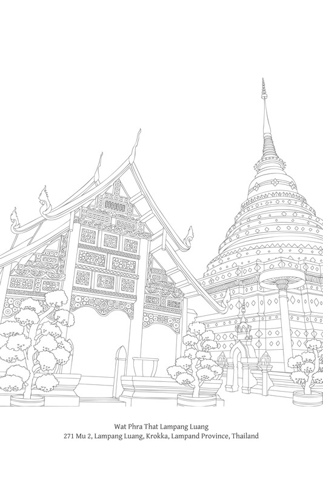

Dependent Origination
Paṭiccasmuppāda: The Buddhist Law of Conditionality

Introduction
Basic definitions for the term paṭiccasamuppāda include ‘dependent origination’, ‘dependent co-origination’, and the ‘origin of suffering dependent on co-conditionality’.
The Buddha presented the teaching of Dependent Origination (paṭiccasamuppāda) in two ways: general presentations, which do not specify each factor of the process, and detailed presentations listing each factor in a connected sequence. The general presentation usually occurs preceding the detailed presentation. The detailed presentation is found frequently in the scriptures, usually alone, without the general presentation; it expands on the general presentation, describing and analyzing each factor of Dependent Origination.
General Presentation
When this exists, that comes to be;
With the arising of this, that arises.When this does not exist, that does not come to be;
With the cessation of this, that ceases.Imasmiṃ sati idaṃ hoti,
imassuppādā idaṃ uppajjati.Imasmiṃ asati idaṃ na hoti,
imasmiṃ nirodhā idaṃ nirujjhati.1 S. II. 28, 65.
Detailed (or ‘Applied’) Presentation
With ignorance as condition, there are volitional formations.
avijjāpaccayā saṅkhārāWith volitional formations as condition, there is consciousness.
saṅkhārapaccayā viññāṇaṃWith consciousness as condition, there is mind & body.2
viññāṇapaccayā nāma-rūpaṃWith mind & body as condition, there are the six sense bases.
nāmarūpapaccayā saḷāyatanaṃWith the six sense bases as condition, there is contact.
saḷāyatanapaccayā phassoWith contact as condition, there is feeling.
phassapaccayā vedanāWith feeling as condition, there is craving.
vedanāpaccayā taṇhāWith craving as condition, there is clinging. {155}
taṇhāpaccayā upādānaṃWith clinging as condition, there is becoming.
upādānapaccayā bhavoWith becoming as condition, there is birth.
bhavapaccayā jātiWith birth as condition, there is aging-and-death.
jātipaccayā jarā-maraṇaṃSorrow, lamentation, pain, grief and despair thus come to be.
soka-parideva-dukkha-domanassupāyāsā sambhavantiSuch is the origin of this whole mass of suffering.
evametassa kevalassa dukkhakkhandhassa samudayo hotiWith the remainderless abandonment and cessation of ignorance comes the cessation of volitional formations.
avijjāya tveva asesavirāganirodhā saṅkhāranirodhoWith the cessation of volitional formations, cessation of consciousness.
saṅkhāra-nirodhā viññāṇanirodhoWith the cessation of consciousness, cessation of mind & body.
viññāṇa-nirodhā nāmarūpanirodhoWith the cessation of mind & body, cessation of the six sense bases.
nāmarūpa-nirodhā saḷāyatananirodhoWith the cessation of the six sense bases, cessation of contact.
saḷāyatana-nirodhā phassanirodhoWith the cessation of contact, cessation of feeling.
phassanirodhā vedanā-nirodhoWith the cessation of feeling, cessation of craving.
vedanānirodhā taṇhā-nirodhoWith the cessation of craving, cessation of clinging.
taṇhānirodhā upādāna-nirodhoWith the cessation of clinging, cessation of becoming.
upādānanirodhā bhava-nirodhoWith the cessation of becoming, cessation of birth.
bhavanirodhā jāti-nirodhoWith the cessation of birth, (cessation of) aging-and-death.
jātinirodhā jarāmaraṇaṃSorrow, lamentation, pain, grief and despair cease.
soka-parideva-dukkha-domanassupāyāsā nirujjhantiSuch is the cessation of this whole mass of suffering.
evametassa kevalassa dukkhakkhandhassa nirodho hotiVin. I. 1-2; S. II. 1-2, 65.
Both of these formats can be divided into two parts – the process of origination and the process of cessation. The first sequence, the process of origination, is called the cycle of origination (samudaya-vāra). It is also known as the forward sequence (*anuloma-*paṭiccasamuppāda) and is equivalent to the second Noble Truth: the origin of suffering (dukkha-samudaya). The latter sequence is called the cycle of cessation (nirodha-vāra) or the reverse sequence (paṭiloma-paṭiccasamuppāda); it corresponds to the third Noble Truth: the cessation of suffering (dukkha-nirodha).
The closing statements of the detailed presentation indicate that Dependent Origination deals with the origin and cessation of suffering. Most of the scriptural references to Dependent Origination end with these statements. There are, however, passages that end with the origin and cessation of the ‘world’:
This, bhikkhus, is the origin of the world;
this, bhikkhus, is the cessation of the world;Ayaṃ kho bhikkhave lokassa samudayo;
ayaṃ kho bhikkhave lokassa atthaṅgamo. S. II. 73.In such a way the world originates,
in such a way the world ceases. {156}Evamayaṃ loko samudayati;
evamayaṃ loko nirujjhati. S. II. 78.
Here the words ‘suffering’ and the ‘world’ are interchangeable, which will be explained below.
The detailed presentation of Dependent Origination contains twelve factors, which are part of an interconnected cycle, without a beginning or an end. There is no ‘first cause’ (mūla-kāraṇa). For convenience of exposition, the Buddha chose ignorance (avijjā) as the most suitable candidate to place at the start of the list of factors, but this is not intended to imply that ignorance is the first cause. Occasionally, to prevent the misunderstanding that ignorance is the ‘first cause’, he inserted the following statement:
With the arising of the taints, ignorance arises; with the cessation of the taints, ignorance ceases.
Āsava samudayā avijjā samudayo, āsava nirodhā avijjā nirodho.
M. I. 55.
The twelve factors of Dependent Origination, beginning with ignorance and ending with aging-and-death, are as follows:
Avijjā (ignorance) →
saṅkhāra (volitional formations) →
viññāṇa (consciousness) →
nāma-rūpa (mind & body) →
saḷāyatana (six sense bases) →
phassa (contact) →
vedanā (feeling) →
taṇhā (craving) →
upādāna (clinging) →
bhava (becoming) →
jāti (birth) →
jarāmaraṇa (aging-and-death).
Sorrow, lamentation, pain, grief and despair are results of the cycle of Dependent Origination, arising in the minds of those who have mental impurities (āsava & kilesa) when they are faced with aging and death. These results, however, take an active role by leading to a further increase of mental taints (āsava), which are in turn the conditions for ignorance and a continued rotation of the cycle.
In general, when presenting this detailed or ‘applied’ format of Dependent Origination (comprising the entire twelve factors), the Buddha mentioned the forward sequence only as an introduction. When he wished to emphasize the direct human experience of suffering, he most often presented Dependent Origination in the reverse sequence:
Jarāmaraṇa ← jāti ← bhava ← upādāna ← taṇhā ← vedanā ← phassa ← saḷāyatana ← nāma-rūpa ← viññāṇa ← saṅkhāra ← avijjā.
S. II. 5-11, 81.
On some occasions, when he wished to highlight a particular factor, the Buddha began the detailed presentation with one of the intermediate factors. The presentation may begin with birth (jāti),3 feeling (vedanā),4 or consciousness (viññāṇa),5 and then be linked with the subsequent factors until the process reaches aging-and-death (for the forward sequence), or traced back to ignorance (for the reverse sequence). Occasionally, the process begins with a factor or problem not included in the group of twelve, and is then connected to the process of Dependent Origination.6 In summary, the presentation of Dependent Origination is not fixed and does not have to mention all twelve factors. {157}
Although the twelve factors are said to be interdependent and act as conditions for one another, this is not the same as saying they are ‘causes’ for one another. As a comparison, there are more conditions other than the seed itself that permit a plant to grow: soil, water, fertilizer, weather, and temperature all play a part. And these interrelated conditions do not need to follow a set temporal sequence. Similarly, a floor acts as a condition for the stability or positioning of a table.7
Significance of Dependent Origination
The Buddha presented the principle of Dependent Origination as a law of nature, which does not rely on the emergence of a Buddha for its existence. The Buddha presented Dependent Origination as a natural truth in the following way:
Whether Tathāgatas arise or not, that principle of specific conditionality8 is constant, certain, and a law of nature. Having fully awakened to and penetrated to this truth, a Tathāgata announces it, teaches it, clarifies it, formulates it, reveals it, and analyzes it. And he says: ‘See! With ignorance as condition, there are volitional formations....
Thus, bhikkhus, this actuality (tathatā), this inerrancy (avitathatā), this invariability (anaññathatā) – this specific conditionality (idappaccayatā) – this is called Dependent Origination.9
S. II. 25-6.
The central importance of Dependent Origination is evident from the Buddha’s words:
One who sees Dependent Origination sees the Dhamma; one who sees the Dhamma sees Dependent Origination.
M. I. 190-91.
Bhikkhus, the instructed noble disciple has a knowledge about this that is independent of others: ‘When this exists, that comes to be; with the arising of this, that arises’.... When a noble disciple thus understands as they really are the origin and the passing away of the world, he is then called a noble disciple perfected in view, perfected in vision, who has arrived at this true Dhamma, who possesses a trainee’s knowledge, a trainee’s true knowledge, who has entered the stream of the Dhamma, a noble one with penetrative wisdom, one who stands squarely before the door to the Deathless. {153}
S. II. 78-9.
Those ascetics and brahmans who understand these things (i.e. the factors of Dependent Origination), the origin of these things, the cessation of these things, and the way leading to cessation of these things ... those ascetics and brahmans are deserving of the acknowledgement as ascetics among ascetics and brahmans among brahmans. By realizing it for themselves with direct knowledge, they are recognized as in this very life reaching and abiding in the goal of asceticism and the goal of brahmanhood.
S. II. 16, 45-6, 129.
On one occasion, the Buddha warned Ven. Ānanda not to misjudge the complexity of Dependent Origination:
[Ānanda:] ‘It is wonderful, venerable sir! It is marvellous, venerable sir! This Dependent Origination is so deep and appears so deep, yet to me it seems clear and easy to understand.’
[Buddha:] ‘Not so, Ānanda! Not so, Ānanda! This Dependent Origination is deep and appears deep. It is because of not understanding and not penetrating this truth that this generation is afflicted and become like a tangled skein, like a knotted ball of thread, like matted reeds and rushes, and is unable to transcend the plane of misery, the bad destinations, the lower worlds, and the round of rebirth (saṁsāra).
S. II. 92.
Readers who are familiar with the Buddha’s life story will remember his reluctance soon after his awakening to proclaim the Dhamma:
Bhikkhus, this thought arose in me: ‘This Dhamma that I have attained is profound, difficult to see, difficult to realize, peaceful, excellent, not accessible by reasoning, to be known by the wise. But this generation delights in attachment, takes pleasure in attachment, rejoices in attachment.10 It is hard for such a generation delighting in attachment to see this truth, namely, specific conditionality, Dependent Origination. And it is hard to see this truth, namely, the stilling of all formations, the abandonment of all foundations for suffering (upadhi), the end of craving, dispassion, cessation, Nibbāna. If I were to teach the Dhamma and others would not truly understand me, that would be wearying and troublesome for me.
Vin. I. 4-5; M. I. 167-8.
This passage mentions both Dependent Origination and Nibbāna, emphasizing both the importance of these two truths and also the difficulty in realizing them. The Buddha awakened to these truths and explained them to others. {154}
Interpretations of Dependent Origination
The teaching of Dependent Origination may be summarized as follows:
-
An explanation describing the evolution of the world and the cycle of all life, by interpreting some of the Buddha’s words in a more literal way, for example the Buddha’s teaching on the ‘origin of the world’ (loka-samudaya).11
-
An explanation describing the birth and death of human beings and the origin and cessation of human suffering. This explanation can be sub-divided into two further categories:
-
A broad description of one life to another: the passing from one realm of existence to another. This is also a literal explanation and it is commonly found in the commentaries, where it is systematized and described in great, and sometimes intimidating, detail.
-
A description of a cycle present at each moment of life. This description offers an interpretation of this teaching implicit in the previous description (2A), but it focuses on a deeper meaning of specific Pali terms, or on their practical significance. This interpretation explains the whole cycle of Dependent Origination in terms of present experience, which is considered to be in line with the Buddha’s intention and the real objective of this teaching, as evidenced by many discourses of the Buddha, including the Cetanā Sutta,12 the Dukkha-nirodha Sutta,13 and the Lokanirodha Sutta.14 In the Abhidhamma an entire section is dedicated to the complete sequence of Dependent Origination arising in a single mind moment.15
-
In reference to explanation #1, some people interpret Dependent Origination as a theory of the origin (’genesis’) of the universe, declaring ignorance as a ‘first cause’16 in a process followed and completed by the remaining eleven factors. {158} This interpretation leads to the view that Buddhism resembles other religions and philosophies that posit a prime agent, for example a creator God, who is the source of all beings and all things. According to this interpretation, the only difference is that these theistic doctrines portray the creation and governing of the world by a force outside and above nature, while Buddhism describes a causal, natural process.
This interpretation, however, is inaccurate, because any teaching that professes a first cause or prime agent contradicts the teaching of Dependent Origination or of specific conditionality. The teaching of Dependent Origination offers an objective account of causality, that all conditioned things are interrelated and interdependent. They arise in a successive, causal process without beginning or end. A first cause, either a creator God or other agent, is impossible. Therefore, the explanation of Dependent Origination as describing the evolution of the world is only suitable in the context of explaining a natural, causal process of continual growth and disintegration, without beginning and without end.
One way of determining whether an interpretation of Dependent Origination is correct or not is to consider the Buddha’s intention in teaching the Dhamma. The Buddha focused on things that can be applied to bring about wellbeing, that are relevant to everyday life, and that solve real life problems. He considered attempts to reach the truth through metaphysical speculation and debate to be fruitless. Determining what is truly Buddha-Dhamma thus requires a consideration of a teaching’s ethical and practical value.
The worldview that stems from explanation #1 of Dependent Origination, above, is suitable and accords with the aims of Buddha-Dhamma. It provides a broad perspective that things proceed according to cause and effect, that they depend on natural conditions, and that they neither originate from a creator God nor do they arise randomly or by accident. Moreover, it is conducive to bringing about the following three practical benefits:
First, one realizes that to find success and fulfilment, one cannot rely on hope, desire, fate, divine intervention, or supernatural powers. One only reaches success through concerted action; one must be self-reliant and generate the conditions that lead to success.
Second, to generate these conditions, one must properly understand each factor within the dynamic of nature in which one is engaged, as well as understanding the mutual relationship between factors; wisdom is therefore an essential element in the process. {159}
Third, the knowledge of causal connections reduces or eliminates the mistaken identification with things as a fixed ‘self’. This knowledge promotes an appropriate relationship to things and leads to inner freedom.
Although the explanation of Dependent Origination as describing a beginningless and endless evolution of the world is acceptable, its practical value is limited. It is not yet sufficiently cogent or integrated to guarantee the three benefits mentioned above (especially the third benefit of promoting freedom).
To truly profit from this broad interpretation of Dependent Origination, one must refine one’s investigation by discerning the causal, interdependent nature of all conditioned phenomena. When one develops this clarity in every moment of one’s life, the three benefits mentioned earlier are complete, and at the same time one reaches the true objective of the interpretation related to the evolution of the world.
The explanation of Dependent Origination as the evolution of the world, either in its broadest sense or in a more refined way, is a contemplation of external phenomena. The second explanation, on the other hand, emphasizes the internal life of human beings, including the dynamic of human suffering.
The first sub-division (2A) is favoured by the commentaries, where it is explained in great detail.17 The commentaries coin many new descriptive terms for this process in order to construct a clear, organized system. The disadvantage, however, is that this system can appear inflexible, and to students new to Buddhism, rather arcane. The second sub-division (2B) is directly linked to the first (2A), as will be described below. {160}
Relational Context of Dependent Origination
The essential aim of Dependent Origination is to illustrate the origin and cessation of suffering (dukkha). The term dukkha plays a pivotal role in Buddha-Dhamma and appears in several key teachings, for example the Three Characteristics and the Four Noble Truths. To understand the complete meaning of the term dukkha, one must set aside the common translation of ‘suffering’ and examine the threefold classification of dukkha,18 along with its commentarial explanations:19
-
Dukkha-dukkhatā: a feeling of pain (dukkha-vedanā), as commonly understood; physical suffering (e.g. aches and pains) and mental suffering (e.g. grief); dis-ease; the suffering arising from encounters with undesirable and disturbing sense objects.
-
Vipariṇāma-dukkhatā: suffering associated with change; suffering inherent in pleasure. Pleasure becomes suffering or produces suffering, due to the transitoriness of pleasure. A person may feel at ease, without any disturbance, but after experiencing a more pleasant form of ease, the original state of ease may feel unpleasant. It is as if suffering lies latent and manifests when pleasure fades away. The degree of suffering is proportional to the degree of pleasure that precedes it. Suffering can even arise while experiencing pleasure, if a person becomes aware of the fleeting nature of that pleasure. And when pleasure ends, the sadness of separation follows in its wake.
-
Saṅkhāra-dukkhatā: the dukkha of conditioned phenomena; the dukkha of all things that arise from causes and conditions, that is, the five aggregates (khandha), including ‘path’ (magga) and ‘fruit’ (phala), which are technically classified as ‘transcendent’. All conditioned things are oppressed by conflicting component factors; all things arise and pass away; they are imperfect. They exist in the ‘stream’ of causes and conditions, which generate suffering for someone who does not understand the nature of conditionality, who with craving, grasping and ignorance foolishly resists this process, and who does not engage with it wisely.
The third kind of dukkha reveals the inherent nature of conditioned phenomena, but it also has a psychological dimension. This state of imperfection and stress prevents thorough satisfaction with conditioned phenomena and continually causes suffering for a person who relates to things with craving, grasping and ignorance.20 {161}
The meaning of this third kind of dukkha is thus all-inclusive. It corresponds with the meaning of dukkha in the Three Characteristics (’all conditioned things are dukkha’). The pressure and instability inherent in things may lead to the dukkha of the Four Noble Truths, whereby craving, grasping, and ignorance come to fruition as suffering, and whereby the five aggregates of nature develop into the five aggregates of clinging of human beings.
In this context, one can include the three kinds of feeling (vedanā): pleasure (sukha), pain (dukkha), and neutral feeling (upekkhā). Painful feeling (dukkha-vedanā) is part of the first kind of dukkha: dukkha-dukkhatā. Pleasant feeling (sukha-vedanā) is introduced in the second factor of vipariṇāma-dukkhatā. Although neutral feeling (or ‘equanimity’) escapes the first two factors, it is included in the final factor of saṅkhāra-dukkhatā. Even equanimity is ephemeral, transient, and subject to causes and conditions. If one is enchanted by equanimity and wishes to indulge in it, one cannot escape the dukkha of conditioned phenomena. The commentaries elaborate by stating that neutral feeling (upekkhā-vedanā), along with all other formations in the three planes of existence (tebhūmaka) are saṅkhāra-dukkhatā, as they are oppressed by arising and dissolution. In sum, all three kinds of feeling are incorporated in these three kinds of dukkha.
The teaching of Dependent Origination reveals how dynamics inherent in nature develop into human problems as a consequence of ignorance, craving, and clinging. At the same time, these natural dynamics reveal how the interrelatedness of phenomena takes the form of a stream. Various aspects of this stream may be distinguished: conditioned phenomena are interrelated; they exist dependent on other conditioned phenomena; they are inconstant, not remaining the same even for an instant; they are not autonomous – they have no true ‘self’; and they have no first cause.
Seen from another angle, the way in which phenomena manifest in the world – as appearing, growing, and declining – reveals their fluid nature. This fluid nature exists because things are made up of interrelated components. The stream of phenomena flows on because all of its components are unstable, inconstant, and without true substance. The particular features of interdependent processes both point to the impossibility of a first cause and also allow for the manifestation of distinct fluid entities.
If things were to truly possess a ‘self’, they would be stable. If things were stable, even for a moment, they would by definition not be mutually dependent, and there would be no fluid entities. But, without a stream of interdependent phenomena, nature would not exist in the way it does. A ‘self’ or fixed substance within phenomena would render true causal interactions impossible. Because all things are impermanent, inconstant, subject to decay, insubstantial, and interconnected, there is a stream of conditions manifesting as distinct natural phenomena.
The Pali term for impermanence and instability is aniccatā. The term for oppression through birth and decay, for inherent stress, conflict and imperfection, is dukkhatā. The term for ‘selflessness’ or insubstantiality – the absence of any internal or external essence or agent that dictates things according to desire – is anattatā. The teaching of Dependent Origination reveals these three characteristics and describes the interrelated sequence of phenomena. {162}
The process of Dependent Origination applies to both material things (rūpa-dhamma) and to immaterial things (nāma-dhamma), to both the material world and to human life, which is comprised of both physical and mental attributes. This process manifests as particular laws of nature: (1) dhamma-niyāma: the general law of cause and effect; (2) utu-niyāma: laws of the material world (physical laws); (3) bīja-niyāma: laws governing living things, including genetics (biological laws); (4) citta-niyāma: laws governing the workings of the mind (psychological laws); and (5) kamma-niyāma: law of ‘kamma’ (intentional action; kammic laws)21, which deter-mines human wellbeing and is directly linked to ethics.
Again, all natural processes, including the dynamics of kamma, are possible because things are impermanent and insubstantial. This fact may be at odds with how people commonly feel. Yet if things were permanent, stable, and possessed a solid core, none of the above laws of nature would hold true. Also, these laws confirm that there is no first cause for things, no creator God.
Conditioned things arise dependent on causes and they are interrelated; they have no fixed core. A bed, to take a simple example, is composed of various parts which have been assembled following a prescribed plan; there exists no essential substance of the bed apart from these components. Taking these components apart, the bed no longer exists; there exists merely a notion of ‘bed’, which is a thought in the mind. Even particular notions do not exist in isolation, but are connected to other concepts. The notion of a ‘bed’ only has significance in relation to the notions of ‘lying down’, a ‘level plane’, ‘position’, ‘space’, etc.
People’s awareness and understanding of particular designations is linked to their understanding of the relational factors of that particular entity. But when recognition of the object has been made, habitual attachment in the form of craving and grasping leads the person to be convinced of the object’s substantiality. The object is separated from its relational context and true discernment of the object is obstructed. Selfishness and possessiveness come to the fore.
As mentioned above, things do not have a ‘first cause’ or original source. Tracing back the causes and conditions ad infinitum, one still cannot find a first cause. There is a strong impulse in people, however, to seek an original source for phenomena, and as a consequence they assign undue importance to particular entities. This impulse to find a source conflicts with the truth, and the notions associated with whatever is taken as a source become a form of ‘perceptual aberration’ (saññā-vipallāsa).
People abandon their inquiry into causality too soon. A correct investigation would go on to inquire into the cause of what is being taken as the source and conclude that this line of inquiry is endless. Things exist in mutual dependence, and therefore there is no ‘first cause’. Indeed, one can pose the question: Why is it necessary for things to originate from a primal source? {163}
The belief in a creator God is equally at odds with nature. This belief stems from the observation and common assumption that human beings are responsible for producing things like tools, implements and crafts; therefore, everything in the universe must also have a creator.
The logic of this reasoning, however, is flawed. People separate the act of production from the natural context of conditionality. In fact, human production is only one aspect of conditionality. In the act of production, humans are one factor among many in a conditional process, all of which combine to reach a desired result. The distinction here from a purely material process is that mental factors (e.g. ‘desire’) accompanied by intention also play a role. But these mental factors must combine with other factors in a conditional process to bring about a desired end. For example, when building a house, a person influences other factors to bring about completion. If humans were above the conditional process, they could build a house out of thin air, but this is impossible. Creation, therefore, is not separate from conditionality, and since all conditioned things exist as parts of an ongoing causal process, a creator God plays no role at any stage.
Another line of reasoning that contradicts the truth and is similar to the idea of a ‘first cause’ is the idea that in the beginning there was nothing. This idea is connected to and stems from a belief in self: the identification with composite parts that comprise an individual form. A person establishes a notion of self and attaches to this notion. In addition, he may believe that originally this self did not exist, but rather came into being at a later time.
This limited way of thinking, of getting stuck on an object and not having a fluid outlook on things, is an attachment to conventional labels and a misunderstanding of conventional truth. It lies behind the need to find a first cause or creator God as the source of all phenomena, giving rise to such conflicting ideas as how can something immortal produce something that is mortal or how can transient things spring from the eternal? In relation to the causal, interrelated flow of phenomena, there is no need to speak of an enduring or a temporary ‘self’, unless one is referring to ‘conventional truth’ (sammati-sacca). Again, one can ask why is it necessary to have nothing before something can exist?
In any case, speculation on such topics as a ‘first cause’ and a creator God is considered to be of little value in Buddha-Dhamma because it is irrelevant to the practical application of the teachings for bringing about true spiritual wellbeing. Even though these philosophical considerations can lead to a broad worldview, as shown above, they can be passed over since a focus on practical application leads to the same benefits. Attention here, therefore, should be on applying the teachings to everyday life. {164}
As mentioned earlier, human beings are comprised of the five aggregates. Nothing exists separately from these aggregates, dwelling either inside them or out. Nothing owns or controls the aggregates and governs life. The five aggregates function according to Dependent Origination; they are part of the interrelated flow of conditions. All of the components in this process are unstable; they all arise and pass away, and they condition further arising and decay. The interdependency of the components enables there to be a causal process and continual stream of formations.
The five aggregates are marked by the three universal characteristics (tilakkhaṇa): (1) they are impermanent and unstable, subject to constant arising and passing away (= aniccatā); (2) they are continually oppressed by arising and dissolution; they inevitably produce suffering for one who engages with them by way of ignorance and attachment (= dukkhatā); and (3) they are void of any substantial essence or self that is able to dictate things according to desire (= anattatā).
These five aggregates, perpetually shifting and inherently insubstantial, follow their own nature and proceed according to the flow of interrelated conditions. Unawakened human beings, however, make the mistake of resisting this flow, by identifying with certain phenomena. They then want this imagined ‘fixed entity’ to last or proceed in a desired fashion. At the same time, the eddying currents within the flow of conditions conflict with desire, causing stress and increasing desire and attachment. When desire is thwarted, the struggle to establish, control, and stabilize an identity becomes more intense, which results in ever greater disappointment, anguish, and despair.
A dim understanding of truth may lead a person to conclude that change is inescapable and that one’s cherished ‘self’ may disappear, but this consideration only leads to firmer attachment intertwined with deep-seated anxiety. Such a state of mind is comprised of three defilements: avijjā (ignorance of the truth; the mistaken belief in a ‘self’); taṇhā (the wish for this surmised ‘self’ to be or not to be in a particular way); and upādāna (grasping; binding this ‘self’ to things). These defilements are deeply embedded in the mind and they control the behaviour of human beings, overtly or covertly. They mould people’s personalities and shape their destiny. It is fair to say they are the source of suffering for all unawakened people.
The preceding paragraphs have revealed a conflict between two distinct processes:
-
The course of life that is governed by the law of the Three Characteristics (anicca, dukkha & anattā), which is a fixed law of nature. It manifests as birth, aging and death, both in an ordinary and a deeper sense.22
-
Ignorance of the course of life; the mistaken belief in a stable, enduring ‘self’ and a subsequent attachment, accompanied by fear and anxiety. {165}
The conflict is between laws of nature and a mistaken self-view, between the causal dynamics in nature and people’s desires. People construct a self which then impedes the flow of nature. When people’s desires are unsound or thwarted, the result is suffering in its various manifestations. This results in a life of ignorance, attachment, enslavement, resistance to nature, and misery.
Conventionally speaking, the second process comprises two ‘selves’. First is the ‘self’ or ‘entity’ within nature that changes according to causes and conditions. Although no true ‘self’ exists, it is possible to separate and distinguish one natural dynamic or flow from other natural dynamics, and for practical purposes one can assign a conventional label of ‘self’ to each individual dynamic. Second is a false ‘self’, a ‘fixed entity’, which one imagines to be real and clings to with ignorance, craving and grasping. The first ‘self’, the dynamic entity, is not a cause for attachment. But the second ‘self’, which is superimposed on the first ‘self’, is defined by attachment; it is inevitably undermined by the nature of the first ‘self’ and thus causes suffering.
A life of ignorance and attachment instils fear and anxiety in the heart, affects behaviour, and makes people unwitting slaves to their desires. It increases selfishness (a perpetual search for personal gratification), possessiveness, and a lack of consideration for others.23
In order to reinforce and affirm their desires, people latch onto and identify with those views, opinions, doctrines, belief systems, etc., that meet the needs of and accord with desire. They cherish and cling to these views, etc. as if protecting their very selves. As a result, they build a barrier that prevents them from accessing the truth: they hide from the truth. This rigidity of mind means that their critical faculties are impaired. And it can give rise to obstinacy – an inability to tolerate or listen to the views of others.24
When people establish ideas, views, and beliefs on what is good, what should be achieved, and what is the proper way to reach desired goals, they behave accordingly, and they observe corresponding traditions and customs. Their behaviour may even be naive or irrational as a result; they may act simply out of an attachment to such traditions and customs, possessing only a faint understanding of the causal relationship of the factors involved. Hence, they lack a clear understanding of cause and effect. {166}
This is reflected in the lives of some religious seekers, who uphold various ascetic traditions and practices with great intensity, believing that such behaviour will guarantee liberation, realization, or a passage to heaven. They then go on to criticize and look down on other people as a consequence of these established practices.25
At the same time, on a deeper level, such people are worried about the preservation of their cherished ‘self’, which is a fabricated concept. Although they do not really know what or where this assumed self is, they still lug it around and protect it. And because they fear that at any moment the self may perish, they grab after whatever provides a sense of self-affirmation, however obscure such things may be. Life thus becomes restricted and their wellbeing is shaped by the fortunes of this so-called ‘self’.26
These repercussions do not merely affect the individual: the conflict and suffering extends outwards, causing social conflict. All social problems created by human beings stem from a life of ignorance and attachment.
The detailed presentation of Dependent Origination outlines the origin of a life of suffering; it outlines the origin of a sense of self, which inevitably results in suffering. Breaking the chain of Dependent Origination is to end a life of suffering, to eradicate all suffering arising from a ‘self’. This leads to a life of wisdom, non-attachment, freedom, and harmony with nature.
A life of wisdom – of direct knowledge of the truth – entails deriving benefit from one’s relationship to nature, which is equivalent to living in harmony with nature. To live in harmony with nature is to live freely and with non-attachment: an escape from craving and grasping. And a life of non-attachment relies on a knowledge of conditionality, along with an appropriate relationship to things.
Buddhist teachings do not recognize a supernatural entity existing above nature and having power over it. If something were to exist beyond nature – to transcend nature – then by definition it could have no influence over nature. Whatever is involved in nature is a part of nature. {167} Natural phenomena exist according to causes and conditions; they do not arise haphazardly. All amazing occurrences that appear as miracles or marvels arise from and proceed according to causes and conditions. We call these events miracles because the causes and conditions remain hidden; as soon as the causes and conditions are known, the sense of wonder disappears. The terms ‘supernatural’ and ‘preternatural’ are merely ways of speaking; they do not refer to some thing that exists apart from nature.
A related subject is the distinction between ‘man’ and ‘nature’. The expressions ‘man and nature’ or ‘man controls nature’ are simply figures of speech. In fact, human beings are one part of nature, and humans can control nature only to the extent that they exist as one condition in nature, influencing subsequent conditions and giving rise to particular results.
What is unique in the case of human interaction is the involvement of mental conditions, including volition, and therefore the term ‘creation’ is used for human activities. But all the elements in the act of creation are, without exception, conditional factors. Human beings are unable to create anything out of thin air or in isolation, as somehow separate from the conditional process. When humans understand the requisite conditions leading to desired results, they enter the process as one determinant factor, shaping other conditions to reach a desired end.
There are two stages to successful interaction: the first is knowledge and the second is to act as a condition for subsequent conditions. The initial stage, equivalent to wisdom, is essential. With wisdom, one can engage with things according to one’s wishes. A wise engagement with things entails benefiting from one’s relationship to nature, or even controlling nature, and this benefit extends to a person’s relationship to both material things and the mind. Because human beings and nature exist in a mutual relationship, to live wisely is to live in harmony with nature. With wisdom, one has control over one’s mental faculties, control over one’s mind: one has control over oneself.
A life of wisdom has two dimensions: internally, wise persons are calm, clear and joyous. When encountering pleasant objects, they are not seduced or reckless. When separated from delightful objects, they are not upset or despondent. They do not entrust their happiness to material things by allowing these things to govern their lives. And externally, they are fluent and agile; they are prepared to engage with things appropriately and reasonably. There are no inner attachments or fixations that cause obstruction, prejudice, or confusion. {168}
The following words by the Buddha demonstrate the difference between a life of attachment and a life of wisdom:
Bhikkhus, the uninstructed worldling feels a pleasant feeling, a painful feeling, and a neither-painful-nor-pleasant feeling. The instructed noble disciple too feels a pleasant feeling, a painful feeling, and a neither-painful-nor-pleasant feeling. In this case, bhikkhus, what is the distinction, the disparity, the difference between the instructed noble disciple and the uninstructed worldling?
Bhikkhus, when the uninstructed worldling is contacted by a painful feeling, he grieves and laments; he weeps beating his breast and becomes distraught. He feels two feelings – bodily feeling and mental feeling. Suppose an archer were to strike a man with an arrow, and then strike him afterwards with a second arrow, so that the man would feel a feeling caused by two arrows. So too, when the uninstructed worldling is contacted by a painful feeling ... he feels two feelings – a bodily one and a mental one.
Being contacted by that painful feeling, he harbours aversion towards it. When he harbours aversion towards painful feeling, the underlying tendency to aversion towards painful feeling lies behind this. Being contacted by painful feeling, he seeks delight in sense pleasure.27 For what reason? Because the uninstructed worldling does not know of any escape from painful feeling other than by sense pleasure. When he seeks delight in sensual pleasure, the underlying tendency to lust for pleasant feeling lies behind this. He does not understand as it really is the origin and the passing away, the gratification, the danger, and the escape in the case of these feelings. When he does not understand these things, the underlying tendency to ignorance in regard to neither-painful-nor-pleasant feeling lies behind this.
If he feels a pleasant feeling, he feels it as one bound. If he feels a painful feeling, he feels it as one bound. If he feels a neither-painful-nor-pleasant felling, he feels it as one bound. This, bhikkhus, is called an uninstructed worldling who is bound28 by birth, aging and death; who is bound by sorrow, lamentation, pain, grief and despair; who is bound by suffering, I say. {169}
Bhikkhus, when the instructed noble disciple is contacted by a painful feeling, he does not grieve or lament. He does not weep beating his breast and become distraught. He feels one feeling – a bodily feeling, not a mental feeling. Suppose an archer were to strike a man with one arrow, but the second arrow would miss the mark, so that the man would feel a feeling caused by one arrow only. So too, when the instructed noble disciple is contacted by a painful feeling ... he feels one feeling – a bodily one, not a mental one.
Being contacted by that painful feeling, he harbours no aversion towards it. Since he harbours no aversion towards painful feeling, the underlying tendency to aversion towards painful feeling does not lie behind this. Being contacted by painful feeling, he does not seek delight in sensual pleasure. For what reason? Because the instructed noble disciple knows of an escape from painful feeling other than sensual pleasure. Since he does not seek delight in sensual pleasure, the underlying tendency to lust for pleasant feeling does not lie behind this. He understands as it really is the origin and the passing away, the gratification, the danger, and the escape in the case of these feelings. Since he understands these things, the underlying tendency to ignorance in regard to neither-painful-nor-pleasant feeling does not lie behind this.
If he feels a pleasant feeling, he feels it detached. If he feels a painful feeling, he feels it detached. If he feels a neither-painful-nor-pleasant felling, he feels it detached. This, bhikkhus, is called a noble disciple who is free from birth, aging and death; who is free from sorrow, lamentation, pain, grief and despair; who is free from suffering, I say.
This, bhikkhus, is the distinction, the disparity, the difference between the instructed noble disciple and the uninstructed worldling.
S. IV. 207-210.
The preceding section emphasizes knowing things as they are, knowing what to revise and what to cultivate in the heart, and knowing what is gained by such revision and cultivation. The proper conduct in relation to revision and cultivation is a matter of practical application, which will be addressed below. {170}
Orthodox Explanation
The orthodox explanation of Dependent Origination is detailed and intricate. Its study requires extensive knowledge of the texts and of the Pali language.29 Much of that material is beyond the scope of this book and here a basic summary must suffice.
Factors of Dependent Origination
(1) Avijjā → (2) saṅkhāra → (3) viññāṇa → (4) nāma-rūpa → (5) saḷāyatana → (6) phassa → (7) vedanā → (8) taṇhā → (9) upādāna → (10) bhava → (11) jāti → (12) jarāmaraṇa-soka-parideva-dukkha
-domanassa-upāyāsā → dukkha-samudaya (origin of suffering).
The cessation of suffering follows the same sequence.
The cyclical nature of Dependent Origination may be illustrated as shown on Figure The Cycle of Dependent Origination. {171}
Definitions
First, here are basic and literal definitions for these twelve factors:30
-
Avijjā: ignorance; ignorance of truth; a lack of clear understanding.
-
Saṅkhāra: mental formations; volitional formations; volition and all mental phenomena stored up in the mind.
-
Viññāṇa: consciousness; knowledge based on cognition.
-
Nāma-rūpa: mental and physical phenomena; the mind and body.
-
Saḷāyatana: the six sense bases; the six doorways of cognition: the eye, ear, nose, tongue, body, and mind.
-
Phassa: cognition; contact between the sense bases (āyantana), the sense objects (ārammaṇa), and consciousness (viññāṇa).
-
Vedanā: feeling; the sensation of pleasure, pain, and neutral feeling.
-
Taṇhā: craving (for sense pleasure, for becoming, and for non-existence).
-
Upādāna: grasping; clinging; appropriation.
-
Bhava: becoming; state of existence; mode of being; collective results of volitional action (kamma).
-
Jāti: birth; the manifestation of the aggregates clung to as self.
-
Jarāmaraṇa: aging & death; the decline of the faculties and dissolution of the aggregates.
Second, here are the formal, doctrinal definitions:
-
Avijjā: ignorance of suffering, of the origin of suffering, of the cessation of suffering, and of the way leading to the cessation of suffering (the Four Noble Truths), and according to the Abhidhamma, ignorance of the past, of the future, of the past and future, and of Dependent Origination.31
-
Saṅkhāra: Bodily volition (kāya-saṅkhāra), verbal volition (vacī-saṅkhāra), and mental volition (citta-saṅkhāra),32 and according to the Abhidhamma, meritorious volition (puññābhisaṅkhāra), demeritorious volition (apuññābhisaṅkhāra), and imperturbability-producing volition (āneñjābhisaṅkhāra).33
-
Viññāṇa: the six kinds of consciousness: eye-consciousness (cakkhu-viññāṇa), ear-consciousness (sota-viññāṇa), nose-consciousness (ghāna-viññāṇa), tongue-consciousness (jivhā-viññāṇa), body-consciousness (kāya-viññāṇa), and mind-consciousness (mano-viññāṇa).34
-
Nāma-rūpa: ‘mind’: feeling (vedanā), perception (saññā), intention (cetanā), contact (phassa), and attention (manasikāra); and ‘body’: the four great elements (mahābhūta) and form that depends on these four great elements. The Abhidhamma defines ‘name’ as the feeling aggregate (vedanā-khandha), the perception aggregate (saññā-khandha), and the volitional formation aggregate (saṅkhāra-khandha).35
-
Saḷāyatana: the six sense bases: eye (cakkhu), ear (sota), nose (ghāna), tongue (jivhā), body (kāya), and mind (mano). {172}
-
Phassa: the six kinds of contact, by way of the eye, ear, nose, tongue, body, and mind.36
-
Vedanā: the six kinds of feeling: feeling arising from contact by way of the eye, ear, nose, tongue, body, and mind.37
-
Taṇhā: the six kinds of craving: craving for forms (rūpa-taṇhā), craving for sounds (sadda-taṇhā), craving for smells (gandha-taṇhā), craving for tastes (rasa-taṇhā), craving for tactile objects (phoṭṭhabba-taṇhā), and craving for mind objects (dhamma-taṇhā).38
-
Upādāna: the four kinds of grasping: kāmupādāna (grasping onto sensuality: to forms, sounds, smells, tastes, and tactile objects); diṭṭhupādāna (grasping onto views, ideals, theories, and beliefs); sīlabbatupādāna (grasping onto rules and practices, believing that in themselves they lead to spiritual purity); and attavādupādāna (grasping onto ‘self’; creating a false idea of self and then clinging to this idea).
-
Bhava: the three spheres of existence: the sense-sphere (kāma-bhava), the fine-material sphere (rūpa-bhava); and the immaterial sphere (arūpa-bhava). Alternatively: (1) the sphere of ‘kamma’ (kamma-bhava) – the active process of becoming (equivalent to meritorious volition, demeritorious volition, and imperturbability-producing volition; see saṅkhāra, above), and (2) the passive process of becoming (uppatti-bhava)39, equivalent to the sense sphere, the fine-material sphere, the immaterial sphere, the sphere of perception (saññā-bhava), the sphere of nonperception (asaññā-bhava), the sphere of neither-perception-nor-nonperception (nevasaññānāsaññā-bhava), the sphere of one-constituent being (ekavokāra-bhava), the sphere of four-constituent being (catuvokāra-bhava), and the sphere of five-constituent being (pañcavokāra-bhava).40
-
Jāti: the birth of the five aggregates; the arising of the sense spheres (āyatana). Alternatively, ‘the arising of these various phenomena.’41
-
Jarāmaraṇa: jarā (aging; weakening of the faculties), and maraṇa (death; the breaking up of the aggregates; an end of the ‘life faculty’ – jīvitindriya). Alternatively, ‘the degeneration and dissolution of these various phenomena.’42
General Explanations
Here are several examples that give a brief and simple explanation for these factors of Dependent Origination:
-
Āsava → avijjā:
The belief that going to heaven is the highest happiness; the belief that killing others will bring happiness; the belief that suicide will bring happiness; the belief that birth as a Brahma god will bring immortality; the belief that heaven is reached by making propitiatory offerings; the belief that Nibbāna is reached by undertaking austerities; the belief that there is a presently existing self that will be reborn as a result of certain actions; the belief that nothing exists after death. Thence:
-
→ Saṅkhāra:
Thinking and inclining in the direction of, or in accord with, such beliefs (above); conceiving modes of conduct and action (kamma) based on such thoughts and intentions; these actions may be good (puñña), bad (apuñña or pāpa), or ‘imperturbable’ (āneñja – see āneñjābhisaṅkhāra, above). Thence:
-
→ Viññāṇa:
Awareness and cognition of sense impressions that specifically conform to such intentions. A consciousness with particular qualities is generated. {173} At death, the force of volitional formations (saṅkhāra) – of created kamma – induces rebirth-linking consciousness (paṭisandhi-viññāṇa), with appropriate properties, to take rebirth in a plane of existence suited to it.
-
→ Nāma-rūpa:
Birth leads to a body and a life that is prepared to perform subsequent kamma. There arise the body aggregate (rūpa-khandha), the feeling aggregate (vedanā-khandha), the perception aggregate (saññā-khandha), and the volitional formation aggregate (saṅkhāra-khandha), which possess the properties and deficiencies endowed in them by the force of previously generated kamma. These aggregates are also conditioned by the nature of the particular plane of existence, depending on birth say as a human being, an animal, or a celestial being.
-
→ Saḷāyatana:
In order to respond to the external world, to enable cognition, and to satisfy personal needs there must be a channel for associating with the external world. With the support of ‘mind & body’ (nāma-rūpa), life proceeds according to the force of kamma (’kammic momentum’) to the point where there arise the six senses: the eye, ear, nose, tongue, body, and the mind, which cognizes internal phenomena.
-
→ Phassa:
Cognition takes place by the contact or coming together of three factors: the internal sense bases (eye, ear, nose, tongue, body, and mind), the external sense objects (sights, sounds, smells, tastes, tactile objects, and mind objects), and consciousness (eye-, ear-, nose-, tongue-, body-, and mind-consciousness). With cognition:
-
→ Vedanā:
There arises feeling (or ‘sensation’), either as pleasure (sukha-vedanā), pain (dukkha-vedanā), or a neutral feeling (adukkhamasukha-vedanā or upekkhā-vedanā). For unawakened beings, the process does not end here; as a consequence:
-
→ Taṇhā:
When experiencing pleasure, there is delight, covetousness, and greed. When experiencing pain or discomfort, there is aversion, annoyance, and hostility. A person is agitated and wishes for the feeling to disappear. He wishes to escape from the painful object, seeking to replace it with a pleasurable object. Alternatively, a person experiences a neutral feeling, of indifference, which is a subtle feeling classified as a form of pleasure, since there is no aversion. It is a mild feeling of ease. Thence:
-
→ Upādāna:
When desire is heightened, there is grasping. A person becomes attached to and preoccupied with an object. Before an object is acquired there is craving; after the object is acquired there is grasping. Grasping is not confined to desirable sense objects (kāmupādāna), but extends to associated views and opinions (diṭṭhupādāna), to ways of practice for acquiring desired objects (sīlabbatupādāna), and to a sense of self (attavādupādāna). These different forms of grasping are linked. As a consequence, there is:
-
→ Bhava:
The intention to act in response to the aforementioned grasping. This intention, which conforms to the specific craving and grasping, leads to the entire range of behaviour (the active process of becoming – kamma-bhava), as good, bad, or ‘imperturbable’ (āneñja). For example, a person may wish to go to heaven and believes that certain actions will lead to this end, and thus performs these actions. At the same time, he or she prepares the ‘conditions for existence’ – the five aggregates – that will appear in the state of existence befitting that kamma (the passive process of becoming – uppatti-bhava). When creation of kamma operates in this way, at the moment when a lifespan ends, the force of the accumulated kamma (kamma-bhava) impels the next stage of the cycle: {174}
-
→ Jāti:
Starting with rebirth-linking consciousness (paṭisandhi-viññāṇa), which conforms to the ‘kammic momentum’, there is birth in a realm of existence appropriate to that kamma. The five aggregates arise and life begins: ‘mind & body’, the six sense bases, contact, and feeling arise and the wheel of Dependent Origination continues. With birth, there is certain to be:
-
→ Jarāmaraṇa:
Deterioration and destruction of life. For unawakened people, aging and death are constantly felt as threatening and oppressive, both overtly and subconsciously. Therefore, in the life of ordinary people, aging and death are linked to:
... Soka-parideva-dukkha-domanassa-upāyāsa (sorrow, lamentation, pain, grief, and despair), which collectively are referred to as ‘suffering’. The concluding line of Dependent Origination is thus: ‘Such is the origin of this whole mass of suffering.’
As Dependent Origination exists as a cycle, this stage of sorrow, etc. is not the end. In fact, this collection of qualities becomes another important factor causing the cycle to rotate further. Sorrow, lamentation, pain, grief, and despair reveal the existence of mental impurities called āsava that fester in the heart.
There are four such impurities or ‘taints’:
-
Kāmāsava: The desire for gratification by way of the five senses and by way of the mind;
-
Diṭṭhāsava: The holding fast to certain beliefs, like ‘I am the body’ or ‘this body is mine’;
-
Bhavāsava: Satisfaction in a particular state of existence, considering it superior, precious, and happy; the wish that one can abide in such a state and experience joy forever;
-
Avijjāsava: Ignorance of things as they are.
Aging and death are the marks of decline and decay, and they run counter to these mental impurities. For example, in regard to sensuality, aging and death lead people to feel that they will be separated from pleasurable, desired sense objects. In regard to views, when one identifies with the body, one grieves when it changes. In regard to ‘becoming’, one fears that one will miss the opportunity to abide in a desired state of existence. And in regard to ignorance, one lacks basic understanding, of say the nature of aging and the proper course of conduct in relation to it. When a person who lacks proper understanding thinks of or encounters aging and death, he or she experiences fear and gloom and behaves in a misguided way. The ‘taints’ thus act as fuel, giving rise to sorrow, lamentation, pain, grief and despair the moment a person contacts aging and death.
Sorrow, lamentation, etc., also reveal mental obscurity. Whenever these negative emotions are present, the mind is dim and dull. When one of these mind states arises, it is accompanied by ignorance, as confirmed by the Visuddhimagga:
Sorrow, pain, grief and despair are inseparable from ignorance, and lamentation is found in one who is deluded. So when these are established, ignorance is established; Vism. 576.
This is how ignorance should be understood to be established by sorrow and so on; Vism. 577.
As long as these [sorrow, etc.] go on occurring so long does ignorance occur. Vism. 529.
Therefore it is said: ‘With the arising of the taints there is the arising of ignorance’. M. I. 54.
One can conclude that for unawakened persons, aging and death, with their retinue of sorrow, lamentation, pain, grief and despair, are a condition for the arising of ignorance, providing the next link in the cycle of Dependent Origination, without interruption. {175}
Several important points may be made concerning the previous explanations:
(1) The cycle of Dependent Origination as explained above is usually called the ‘wheel of becoming’ (bhava-cakka) or the ‘wheel of rebirth’ (saṁsāra-cakka), and it covers three distinct lifetimes: ignorance (avijjā) and volitional formations (saṅkhāra) comprise one lifespan; consciousness (viññāṇa) to becoming (bhava) comprise another lifespan; and birth (jāti) and aging & death (jarā-maraṇa; along with sorrow, lamentation, etc.) comprise a third lifespan. By determining the middle interval (consciousness to becoming) as the present life, the three stages (containing twelve factors) can be connected to three periods of time:
-
Past life = ignorance and volitional formations.
-
Present life = consciousness, mind & body, the six sense bases, contact, feeling, craving, grasping, and becoming.
-
Future life = birth and aging & death (with sorrow, lamentation, etc.).
(2) In this three-life division, the present life is considered the principal period of time. The relationship of the past to the present is only viewed in the light of causal factors; the results manifesting in the present are traced back to the causes in the past (past causes → present results). Similarly, the view to the future pertains to results; present causes are linked to future results (present causes → future results). Therefore, only the present contains both results and causes; this relationship of cause and effect can be depicted as four stages:43
-
Past causes (atīta-hetu) = ignorance and volitional formations.
-
Present results (pacuppanna-phala) = consciousness, mind & body, the six sense bases, contact, and feeling.
-
Present causes (pacuppanna-hetu) = craving, grasping, and becoming.
-
Future results (anāgata-phala) = birth and aging & death (with sorrow, lamentation, etc.).
(3) From the explanations of each factor above, it is evident that some definitions for these factors overlap or correspond with one another. The factors can thus be grouped as follows:
-
Ignorance (avijjā) with craving & grasping (taṇhā & upādāna):
In the general explanations of ignorance above it is clear that craving (taṇhā) and grasping (upādāna), especially grasping onto a sense of self, are inherent in each example. When a person does not understand the truth and mistakenly identifies with a ‘self’, there will be selfish desires and attachments. In the phrase, ‘With the arising of the taints there is the arising of ignorance’, the taints of sense-desire, becoming, and views (kāmāsava, bhavāsava, and diṭṭhāsava) are all connected to craving and grasping. Therefore, whenever ignorance is mentioned, there is always a link to craving and grasping.
Similarly, in the explanations of craving and grasping there is always a link to ignorance. When there is an identification with ‘self’, there is craving and grasping. The many forms of selfishness stem from not knowing the truth of conditioned phenomena. The more people generate desire and attachment, the more impaired are their critical faculties. They increasingly fail to apply mindfulness and wisdom, and their true discernment of things decreases. {176}
Therefore, ignorance as a past cause and craving & grasping as present causes have essentially the same meaning. The reason ignorance is used in the past and craving & grasping are used in the present is to show the chief determining factors in different sections of the cycle.
-
Volitional formations (saṅkhāra) with becoming (bhava):
The definitions for saṅkhāra and bhava are almost identical. The difference lies in the principal agent that is emphasized or in the range of focus. The definition for saṅkhāra emphasizes intention, which is the principal agent behind action (kamma). The definition for bhava is broader, distinguishing between the active process of becoming (kamma-bhava) and the passive process of becoming (uppatti-bhava). The active process of becoming also has intention as the principal agent (like saṅkhāra), but the term kamma-bhava has a wider meaning than saṅkhāra, encompassing the entire range of human behaviour. The passive process of becoming refers to the five aggregates, arising from the active process of becoming.
-
Consciousness (viññāṇa) to feeling (vedanā) with birth and aging & death (jāti & jarāmaraṇa; and sorrow, lamentation, etc.):
The factors of consciousness to feeling refer to results in this life. The reason these factors are listed in detail here is to show how present resultant factors interact and produce present causal factors, which then lead to future results.
Birth and aging & death, as future results, demonstrate that when present causal factors exist, there will inevitably be future results. Jāti and jarāmaraṇa are here used only as a summary, referring to the arising and ceasing of consciousness, mind & body, the six sense bases, contact, and feeling. And they are used to emphasize the arising of suffering, to reveal the point linking the process to the beginning (at ignorance). Therefore, the factors of consciousness to feeling and the dual factors of birth and aging & death are essentially the same and can be used interchangeably.
By integrating these matching definitions, each stage in the group of four causes and results (see above) comprises five factors:
-
Five past causes: ignorance, volitional formations, craving, grasping, and becoming.
-
Five present results: consciousness, mind & body, the six sense bases, contact and feeling (= birth and aging & death).
-
Five present causes: ignorance, volitional formations, craving, grasping, and becoming.
-
Five future results: consciousness, mind & body, the six sense bases, contact and feeling (= birth and aging & death).
Compiled in this way, these factors are known as the twenty ‘conditions’ (ākāra).
(4) In accord with the preceding definitions, it is possible to classify the twelve factors of Dependent Origination into three groups, which are called the three rounds (vaṭṭa):
-
Ignorance, craving, grasping are defilements (kilesa). They are the causes behind thinking and acting. This group is called the round of defilement (kilesa-vaṭṭa).
-
Volitional formations and becoming (i.e. the active process of becoming – kamma-bhava) refer to actions (kamma) that shape the course of life. They are known as the round of intentional action (kamma-vaṭṭa).
-
Consciousness, mind & body, the six sense bases, contact and feeling are results (vipāka). They are the fruits of kamma, and become the conditions for producing subsequent defilements. Collectively, they are known as the round of results (vipāka-vaṭṭa). {177}
The relationship between these three rounds can be illustrated as shown at Figure Rounds of Defilements, Actions and Results.
These three rounds are depicted in the commentaries. They are a simple, down-to-earth way of explaining Dependent Origination and the round of rebirth. For example, a person may act prompted by defilement in order to acquire a desired object. If the result of this action is a pleasurable feeling, desire is increased, leading to further actions and results. If, however, a person’s actions do not lead to the desired object, the result is an unpleasant feeling; a defilement in the form of anger arises, which becomes an additional result of the person’s actions.
(5) As mental defilements are the source of various forms of kamma, shaping the course of life, defilements are thus designated as the beginning of the cycle. Following this designation, there are two starting points to the cycle, known as the two roots (mūla) of the wheel of becoming (bhava-cakka):
-
Ignorance is the starting point from the past, influencing the present up to feeling.
-
Craving is the starting point in the present, resulting from feeling and influencing the future up to aging and death.
As mentioned earlier, these two factors are the prominent defilements in each respective stage: ignorance follows from sorrow, lamentation, etc., while craving follows from feeling (see Note Two Roots).
The commentaries state the different purposes for distinguishing and explaining these two ‘roots’: avijjā refers to people who are opinionated (diṭṭhi-carita); taṇhā refers to people who are greedy (taṇhā-carita). Alternatively, the section with ignorance as root is used to eliminate an annihilationist view, whereas the section with craving as root is used to eliminate the eternalist view; or, the former section refers to beings who dwell in the womb, while the latter refers to spontaneously born beings. See: Vism. 578.
In reference to rebirth, the orthodox explanation distinguishes between the case wherein ignorance is prominent and that wherein craving is prominent, as follows:
Ignorance is a primary agent causing beings to be reborn in a bad destination (duggati). When ignorance dominates the mind, people are unable to distinguish between good and evil, right and wrong, helpful and harmful. They tend to act in a deluded and unprincipled way, opening the door to serious misconduct.
The craving for existence (bhava-taṇhā), on the other hand, induces people to be born in good destinations (sugati). When such craving leads the way, people tend to focus on the good qualities of life. When thinking of the future, they want to be born in heaven or to be reborn as a Brahma. In this life they seek wealth, honour, and fame. {178}
Prompted by such desire driven by a craving for existence, they calculate and act to achieve their goal. In order to become a Brahma they develop jhāna, in order to go to heaven they are generous and morally upright, in order to be wealthy they diligently earn money, or in order to seek honour they are charitable. With this care and effort they are able to perform good deeds better than someone dwelling in ignorance.
Although ignorance and craving are designated as ‘starting points’, they are not a ‘first cause’:
Bhikkhus, the beginning point of ignorance is not apparent, so that one may say: ‘Ignorance was not before; it has since come to be.’ Concerning this matter, I say: ‘Indeed, with this as condition, ignorance is apparent.’44
A. V. 113; Vism. 525.
There is an identical passage concerning craving for existence:
Bhikkhus, the beginning point of craving for existence is not apparent, so that one may say: ‘Craving for existence was not before; it has since come to be.’ Concerning this matter, I say: ‘Indeed, with this as condition, craving for existence is apparent.’45
A. V. 116; Vism. 525.
The following passage addresses both ignorance and craving as ‘root causes’:
Bhikkhus, for the fool, obstructed by ignorance and bound by craving, this body has thereby originated. As a result, there is this pair of conditions, of body and external name-and-form. Dependent on this pair there is contact by way of only six sense bases. The fool contacts by way of these sense bases, or by way of one among them, and thus experiences pleasure and pain.46
S. II. 23-4.
(6) The interconnection between the factors of Dependent Origination corresponds to the connections collectively known as the twenty-four ‘supports’ (paccaya), following the explanation in the Abhidhamma.47
Moreover, each factor can be expanded upon. For example, consciousness (or the mind) can be analyzed according to its quality (as wholesome or unwholesome), its level, and its destination in a particular state of existence. Similarly, form (rūpa) can be analyzed according to different types, properties, and states of existence.
It does not seem necessary here to present these twenty-four supports or the elaborate details for each factor. Readers who take a special interest may investigate these matters directly in the Abhidhamma texts. {179}
The preceding explanations can be illustrated as shown on Figures Past, Present and Future as Stages and Past, Present and Future as a Cycle.
Note: The section on causal factors corresponds to ‘origin’ (samudaya) in the Four Noble Truths, because these factors are the agents of suffering. The section on results corresponds with ‘suffering’ (dukkha) in the Four Noble Truths. {180}
Alternatively, the section on causes is called active-process becoming (kamma-bhava), because this process generates causes. The section on results is called the passive process of becoming (uppatti-bhava), because this process contains results.
There are three ‘links’ (sandhi) between cause (hetu) and effect (phala):
-
(the first) cause-effect link (hetu-phala-sandhi);
-
the effect-cause link (phala-hetu-sandhi); and
-
(the second) cause-effect link (hetu-phala-sandhi).
Application in Everyday Life
The previous explanations are the traditional, orthodox explanations; they are found in the commentaries and have been passed down through the ages. These explanations emphasize the round of rebirth (saṁsāra-vaṭṭa): the passing from one life to another. They demonstrate the connection between three lifetimes: the past, the present, and the future, and they have been developed into a fixed, strictly-defined system.
Some people are not content with these explanations and wish to define Dependent Origination in the context of everyday life. They cite explanations in the Abhidhamma and the commentaries that describe the entire sequence of Dependent Origination arising in a single moment.48 They can draw upon the same scriptural passages referred to in the orthodox explanations to support their own interpretation. Moreover, they can find evidence in other texts to substantiate their claims. As will be seen below, this alternate explanation has interesting and distinctive features.
There are many justifications for this alternate explanation. For example, the end of suffering for an arahant occurs in this very life; he or she does not need to die first in order to achieve this state of peace. An arahant is not reborn: there is no aging, death, sorrow, lamentation, etc. in a future life. Even in this life, an arahant experiences no sorrow, lamentation, etc.49 The complete cycle of Dependent Origination in relation to the arising (or ceasing) of suffering occurs in the present time; one need not trace back to a previous life or wait for a future life. And whenever one understands the presently occurring cycle, one also understands the cycles incorporating the past and future, because these respective cycles are all essentially the same.
The following teachings by the Buddha are referred to as corroboration for this alternative interpretation:
Udāyin, if someone should recollect his manifold past lives ... then either he might ask me a question about the past (pubbanta – past life) or I might ask him a question about the past, and he might satisfy my mind with his answer to my question or I might satisfy his mind with my answer to his question. If someone with the divine eye ... should see beings passing away and reappearing then either he might ask me a question about the future (aparanta – next life) or I might ask him a question about the future, and he might satisfy my mind with his answer to my question or I might satisfy his mind with my answer to his question. But let be the past, Udāyin, let be the future. I shall teach you the Dhamma: when this exists, that comes to be; with the arising of this, that arises. When this does not exist, that does not come to be; with the cessation of this, that ceases. {181}
M. II. 31-2.
Bhadraka the headman approached the Blessed One, paid homage to him, sat down to one side, and said to him: ‘It would be good, venerable sir, if the Blessed One would teach me about the origin and the passing away of suffering.’
‘If, headman, I were to teach you about the origin and the passing away of suffering with reference to the past, saying, ‘So it was in the past’, perplexity and uncertainty about that might arise in you. And if I were to teach you about the origin and the passing away of suffering with reference to the future, saying, ‘So it will be in the future’, perplexity and uncertainty about that might arise in you. Instead, headman, while I am sitting right here, and you are sitting right there, I will teach you about the origin and the passing away of suffering.’
S. IV. 327.
Some feelings, Sīvaka, arise originating from bile disorders ... originating from phlegm disorders ... originating from wind disorders ... originating from a combination of causes ... produced by a change of climate ... produced by irregular exercise ... caused by assault ... produced as the result of kamma. How feelings arise originating [from the aforementioned causes] one can know for oneself, and that is considered to be true in the world. Now when those ascetics and brahmans hold such a doctrine and view as this, ‘Whatever feeling a person experiences, whether it be pleasant or painful, all that is caused by what was done in the past’,50 they overshoot what one knows by oneself and they overshoot what is considered to be true in the world. Therefore I say that this is wrong on the part of those ascetics and brahmans.
S. IV. 230-31.
Bhikkhus, what one intends, what one pays attention to, and what one thinks about: this becomes a basis for the maintenance of consciousness. When there is a basis there is a support for the establishing of consciousness. When consciousness is established and come to growth, there is the production of future renewed existence. When there is the production of future renewed existence, future birth, aging-and-death, sorrow, lamentation, pain, grief, and despair come to be. Such is the origin of this whole mass of suffering.
S. II. 65.
Although the alternative explanation of Dependent Origination has distinctive features, it does not abandon the definitions contained in the standard exposition. Therefore, to understand the alternative explanation it is useful to define the factors of Dependent Origination in this context in a way that is consistent with the standard exposition: {182}
Factors of Dependent Origination
-
Avijjā: ignorance; lack of knowledge; an absence of wisdom; not seeing the truth; to be misled by conventional reality; ignorance inherent in certain beliefs; non-understanding of causality.
-
Saṅkhāra: volitional activities; thoughts, intentions, deliberations, and decisions; to direct one’s thoughts and to seek agreeable sense impressions that correspond with one’s temperament, proclivity, abilities, beliefs and opinions; the ‘fashioning’ of the mind, thoughts, and actions by habitual tendencies.
-
Viññāṇa: consciousness; the awareness of sense impressions: sights, sounds, smells, tastes, tactile objects, and mental objects, and the awareness of one’s particular state of mind.
-
Nāma-rūpa: mind & body;51 the elements of materiality and mentality within the process of cognition; the coordination by all components of the body and mind, conforming to the arisen state of consciousness; the progression and alteration of physical and mental factors in accord with the particular state of mind.
-
Saḷāyatana: six sense bases; the functioning of the associated sense bases in accord with the specific circumstances.
-
Phassa: contact; cognition of sense objects; the connection between consciousness and the outside world.
-
Vedanā: feeling; the sensation of pleasure, pain, or neither-pain-nor-pleasure.
-
Taṇhā: craving; desire; a yearning for pleasant sensations and an aversion to painful sensations; the wish to obtain, become, or sustain particular states of mind, or the wish for extinction and annihilation.
-
Upādāna: attachment; grasping; clinging to pleasant or unpleasant sensations; engaging with and attaching to things that provide such sensations; this attachment leads to an evaluation of things according to how they support or gratify craving.
-
Bhava: process of becoming; the entire range of behaviour in response to craving and grasping (kamma-bhava – active process), and the subsequent condition of life (uppatti-bhava – passive process) conforming to craving, grasping and personal behaviour.
-
Jāti: birth; the arising of self-perception as existing (or not existing) in a particular state of life; to occupy this existence and to adopt the corresponding behaviour (kamma-bhava), by affirming this existence and behaviour as one’s own.
-
Jarā-maraṇa: aging-and-death; decay-and-death; the awareness that one will be separated from this state of existence. The feeling of being threatened by the loss and decay of such an existence. As a consequence people experience the entire range of suffering: sorrow, lamentation, pain, grief, despair, stress, annoyance, depression, disappointment, anxiety, etc.. {183}
Preliminary Explanation of the Relationship between Factors
-
Ignorance conditions volitional formations: because of not knowing the truth and not wisely investigating different situations, people create various mental fabrications: they speculate, fantasize, and conceptualize in terms of established beliefs, inhibitions, and habits, and they then determine how to speak and act.
-
Volitional formations condition consciousness: when there is intention or the determination to engage with something, consciousness arises: to see, to hear, to smell, to taste, to feel, and to think about that thing. In particular, intention induces conscious awareness to acknowledge and think about the desired object, resulting in an endless stream of mental proliferation. Intention also conditions a person’s state of mind, endowing it with particular qualities, as positive or negative, virtuous or defiled.
-
Consciousness conditions mind & body: consciousness is accompanied by corresponding physical and mental attributes. Consciousness functions in conjunction with physical and mental factors, such as bodily organs, sensation, perception, and volitional formations. Moreover, in whatever way consciousness has been conditioned, the accompanying physical and mental factors function in concert with this consciousness. For example, when consciousness has been conditioned by angry volitional formations, accompanying perceptions are associated with coarse language, insults, and violence. A person’s countenance will appear sullen, his muscles will be tense, his pulse will quicken, and he will feel stressed. When consciousness is repeatedly conditioned in a particular way, a person’s mental and physical attributes develop into specific personality traits.
-
Mind-and-body conditions the six sense bases: when mind & body has been activated in a particular configuration or direction, it relies on the support from the sense bases, which supply information or act as channels for behaviour. The sense bases are roused to perform their particular duty.
-
The six sense bases condition contact: when the six sense bases exist, contact with and cognition of sense objects is possible. Cognition depends on the individual sense bases.
-
Contact conditions feeling: with contact there must be feeling, either pleasant, unpleasant, or neutral.
-
Feeling conditions craving: when experiencing a pleasing sense object, a person feels delight; he or she becomes attached to that object and wants more of it. Consequently, there is craving for sense objects (kāma-taṇhā). One wishes to maintain or abide in a state where one can further experience the pleasure from that object: there arises the craving for becoming (bhava-taṇhā). When experiencing a painful sense object, one feels aversion; one wants to escape from or eliminate it. Consequently, there is the craving for extinction (vibhava-taṇhā). And when experiencing a neutral object, one is indifferent, indecisive, and deluded. The object is experienced as a mild form of pleasure, leading to attachment and a desire for more pleasant sensations. {184}
-
Craving conditions grasping: when desire intensifies, it leads to attachment. The desire is lodged in the heart and a person is unable to let go of it. This gives rise to a particular behaviour in relation to an object. If one likes the object, one binds oneself to it and submits to it; whatever is associated with the object is viewed as good; whatever disturbs it is viewed as disturbing one’s self. If one dislikes an object, one feels as if one is encountering an opponent. One feels repulsed by and in conflict with anything associated with this object. One sees nothing redeeming about the object and feels personally offended by it. One’s behaviour, both in relation to pleasing and displeasing objects, reinforces and validates the following four things:
-
objects of sensual gratification (kāma), which are acquired or lost;
-
views and understanding of things associated with sense objects, including one’s views on life and the world (diṭṭhi);
-
practices, rules and customs (sīlabbata) maintained for acquiring and avoiding sense objects;
-
a sense of a ‘self’ (attavāda), which acquires things or is impeded.
-
-
Grasping conditions becoming: when there is grasping and particular ways of behaving towards objects, people, and states of mind, a person generates a corresponding state of existence, both in regard to general behaviour (kamma-bhava), beginning with patterns of thought, and in regard to personality, which are the mental and physical traits of that person’s life at that time (uppatti-bhava). Examples of this are the distinct behaviour and personality of people who seek material wealth, people who seek power, people who seek fame, people who seek physical beauty, and people who are antisocial.
-
Becoming conditions birth: with the arising of a personally occupied state of existence, there is a sense of ‘self’: a distinct awareness of abiding in or embodying this state of existence. A person believes, for example, that he or she is the owner, the recipient, the agent, the winner, or the loser in this state of existence.
-
Birth conditions aging-and-death: with the arising of a ‘self’ that occupies a state of existence, it is natural to experience both growth and decline within that state, including a sense of weakening and passing away from that state. In particular, there is the threat of perishing and the need to continually watch over and preserve that state. The decline, loss, and threat of decay causes perpetual grief and suffering.
Expanded Explanation of the Relationship between Factors
-
Avijjā → saṅkhāra:
By not knowing the truth and not seeing clearly, a person creates mental fabrications, speculations, and deliberations. For example, a superstitious person may see the reflection of light from an animal’s eyes and believe he is seeing a ghost; he becomes afraid and runs away. In the event that an object is hidden from view, a person may spend time guessing and arguing about the nature of this object. A person who believes that the gods bestow blessings when pleased will offer prayers, entreaties and propitiatory sacrifices to them. {185} A person who does not know the true nature of conditioned phenomena, that they are impermanent, inconstant, and formed by causal factors, sees them as lovely and desirable, and strives to acquire and possess them.
-
Saṅkhāra → viññāṇa:
With intention, purpose, and deliberate engagement, a consciousness (say of hearing or seeing) arises. On the other hand, if one does not pay attention to or engage with an object, consciousness does not arise, even if one is within range of the object. A person focused on an activity is not distracted by other things. For example, someone reading a fascinating book is only aware of the book’s content; she may not notice loud noises or physical discomfort. When intensely searching for something, one may not pay attention to surrounding people and objects. People will look at an identical object with different intentions and from different perspectives. Take for example an empty plot of land: a child may see it as a playground, a contractor as a building site, a farmer as a plantation, and a manufacturer as a factory site. For each of them the land has a different significance. Similarly, one will see an object from different perspectives depending on one’s mood. If one is thinking good thoughts, one notices the positive aspects of an object, whereas bad thoughts will lead one to notice negative aspects.
Imagine several objects lying together, which include a bouquet of flowers and a knife. A person who loves flowers may only notice the flowers, without paying attention to the knife. The stronger the interest is for flowers, the more exclusively the person’s attention will dwell on the flowers and the less the person will notice other things. Other people may only notice the knife, and they will associate the knife with different things, according to their thoughts and aims: a thief may see it as a weapon, a cook as a kitchen utensil, and a metal dealer as a source of income.
-
Viññāṇa → nāma-rūpa:
Consciousness and mind & body are mutually dependent in the way described by Ven. Sāriputta:
Just as two sheaves of reeds might stand leaning against each other, so too, with mind & body as condition, consciousness comes to be; with consciousness as condition, mind & body comes to be ... If one were to remove one of those sheaves of reeds, the other would fall, and if one were to remove the other sheaf, the first would fall. So too, with the cessation of mind & body comes cessation of consciousness; with the cessation of consciousness comes the cessation of mind & body ...
S. II. 114.
In this sense, when there is the arising of consciousness there must also be the arising of mind & body. When volitional formations condition consciousness, they also condition mind & body. But because mind & body relies on consciousness to exist, because it is linked to and is an attribute of consciousness, the distinction is made: volitional formations condition consciousness, and consciousness conditions mind & body. Here, there are two important points to be mentioned on how consciousness conditions mind & body: {186}
-
When cognizing an object (e.g. a visual form or a sound), a person is in fact experiencing mind & body.52 The presently existing object for that person is none other than the presently cognized object, and as such it cannot be separated from mind & body experienced in that moment by consciousness. For example, when seeing a rose, the rose that exists in that moment is the rose that is known through the eye or is known by way of the ‘mind-door’ in that moment of consciousness.53 It is inseparable from the mental concept of a ‘rose’ and from the feeling, perception and other volitional formations present in that moment. Thus, consciousness and mind & body exist together and are mutually supportive.
-
The attributes of mind & body, especially the mental factors, correspond to the consciousness on which they depend. When a person’s thoughts (saṅkhāra) are wholesome, they condition a wholesome consciousness. In that moment the mind is bright and consequent physical conduct is also wholesome. When a person has bad thoughts, he or she focuses on the negative aspects of things; the mind becomes clouded and subsequent physical conduct is strained.
Accompanying mental and physical factors act in unison with the corresponding volitional formations and consciousness. When there is an emotion (saṅkhāra) of love, a person is attentive (viññāṇa) to the positive side of things; one’s mind is cheerful (nāma), one’s complexion is bright, and one’s physical conduct is positive (rūpa). When one is angry one focuses on the negative side of things; one’s mind is clouded, one’s face is scowling, and one’s behaviour is stressful; all the factors are primed to follow this negative line of thought.
The thoughts and intentions of an athlete at the start of a sporting event are absorbed in that activity. His attention is commensurate to his interest in the competition. All aspects of his mind and body participating in this event are prepared to function accordingly.
The interrelationship of factors here includes the arising and ceasing of newly formed physical and mental properties, which shape or strengthen the personality in line with the corresponding consciousness and volitional formations.54 This process involving the first three links of Dependent Origination is an important stage concerning kamma and the fruits of kamma (vipāka): a small revolution of the cycle is complete (avijjā = kilesa → saṅkhāra = kamma → viññāṇa & nāma-rūpa = vipāka), and begins to revolve again from the beginning.55 This stage is pivotal in forming habits, temperament, understanding, skill, and personality.
-
Nāma-rūpa → saḷāyatana:
The factors of mind & body rely on a knowledge of the external world to function, or else they draw on stored knowledge for deciding what course of action to take. Therefore, the aspects of mind & body acting as channels for receiving sense impressions, i.e. the relevant sense bases, are in a state of receptivity and act in unison with the preceding factors of Dependent Origination. {187} For example, the sense organs (e.g. the eye and ear) of a football player during a match are in a heightened state of alertness and are prepared to receive relevant sense impressions. Simultaneously, the functionality of the sense organs unassociated with this activity is reduced and they are not in a state of alertness. While absorbed in playing football a person’s sense of smell or taste, for example, may be dormant.
-
Saḷāyatana → phassa:
When the sense bases are engaged and there is the conjunction of three things, cognition arises. The three things are: one of the six sense bases (eye, ear, nose, tongue, body, or mind), one of the six corresponding sense objects (sights, sounds, smells, tastes, tactile objects, or mental objects), and one of the six corresponding kinds of consciousness (by way of the eye, ear, nose, tongue, body, or mind).
-
Phassa → vedanā:
With the arising of contact, there is inevitably one of the three kinds of accompanying feeling: pleasure (sukha-vedanā), pain (dukkha-vedanā), or a neutral feeling (upekkhā or adukkhamasukha-vedanā).
The third to the seventh factors of Dependent Origination (viññāṇa to vedanā) comprise a section called the ‘fruits of kamma’, especially factors five, six and seven (the six sense bases, contact, and feeling). In themselves, they are neither good nor bad, neither skilful nor unskilful, but they act as causes for future good and bad results.
-
Vedanā → taṇhā:
When a person experiences a pleasant sensation, he is pleased and delighted; he becomes attached and craves for more. When a person experiences a painful sensation, he is annoyed; he wants the painful object to vanish, he wants to escape from the pain, and he searches for a pleasant substitute. When a person experiences a neutral sensation, there tends to be apathy and complacency. Neutral sensation is a subtle form of pleasure; it can lead to attachment and a yearning for further pleasure.
There are three kinds of craving (taṇhā):
-
Craving for sense pleasure (kāma-taṇhā): the search for gratification by way of the five senses; desire for acquisition (of pleasurable sense objects).
-
Craving for existence (bhava-taṇhā): desire for things associated with particular states of existence, or desire for a state of existence (e.g. as a millionaire, a celebrity, or a deva) bestowing such coveted things. More profoundly, it is a desire to sustain the ‘self’ in a permanent state of existence.
-
Craving for non-existence (vibhava-taṇhā): the desire to escape from an undesirable object or state of existence. This craving often manifests as coarse mental states, for example apathy, loneliness, boredom, hopelessness, self-hatred, self-pity, or a wish for self-annihilation (see Note Three Kinds of Craving). {188}
Craving has these three manifestations: a desire for sensuality, a desire for a pleasant state of existence, and a desire to escape from the unpleasant. When a person’s desires are thwarted there is a feeling of annoyance, aversion and ill-will. When this reaction is expressed externally it leads to thoughts of aggression and violence.
-
-
Taṇhā → upādāna: when there is desire for an object, a person clings to it. The greater the desire the greater the attachment. When a person experiences pain and wishes to escape the source of that pain, attachment takes the form of hostility. At the same time, there is a corresponding degree of attachment to things that one believes will gratify desire: to favourable states of existence, to a sense of self, to views, practices, and theories that satisfy personal desires, and to customs and practices that answer to personal needs.
-
Upādāna → bhava: grasping is connected to a particular state of existence. Attachment involves a process of binding oneself to or identifying with a state of existence, which either provides desired sense objects or helps to escape from undesirable objects. At the same time, when there is a desired state of existence, there invariably must be undesired states of existence. The state of existence grasped on to is called uppatti-bhava (’passive process of becoming’).
When there is attachment to a state of existence, one strives to sustain certain aspects of this state and to escape from other aspects. All of one’s thoughts and actions, however, are propelled by grasping; they are influenced by established beliefs, opinions, theories, habits, and preferences, and they manifest as behaviour corresponding to this grasping.
Take for example a person who wishes to be reborn as a god: he will attach to certain belief systems, traditions, ceremonies, and practices that he believes will lead to heaven. He will think and act according to these beliefs and as a consequence may even develop idiosyncratic behaviour. A person who seeks honour will attach to a set of values she believes to be honourable and to a corresponding standard of behaviour. Her thoughts, actions and behaviour will conform to his attachment. A person who covets an object belonging to someone else attaches to the idea of ownership and attempts to acquire the object. By not discerning the harm in wrong conduct, he will think and act out of habit. His initial covetousness may even lead him to steal; his wish to be an ‘owner’ results in him becoming a ‘thief’.
Based on correct or false beliefs, a person responds to situations either skilfully or immorally. {189} The specific pattern of behaviour driven and shaped by grasping is the active process of becoming (kamma-bhava). The state of existence resulting from this behaviour, say of being a deva, an honourable person, an owner, or a thief, is the passive process of becoming (uppatti-bhava). This state of existence may conform to a person’s desires or it may conflict with them.
This section of Dependent Origination is a crucial stage for the creation of kamma, the receiving of the fruits of kamma, and for the development of habits and personality.
-
Bhava → jāti: accurately speaking, existence in various states of being is equivalent to the five aggregates arising, transforming, and ceasing. The aggregates possess various properties, which increase or decrease according to internal and external conditions. Of all of these factors, intention is the leader, which determines the appearance and qualities of the general flow of existence.
The five aggregates are in constant flux, arising and ceasing in every moment. Conventionally speaking, one may say a ‘person’ is born, ages, and dies in every moment, as described in the commentaries:
In the ultimate sense, as the aggregates are arising, declining, and passing away, when the Blessed One says: ‘Monk, you are born, you are aging, and you are dying in every moment’, it should be understood here that, as regards all living beings, he has made a reference to the aggregates.
KhA. 78.
For unawakened beings, however, there is not simply an arising and ceasing of the five aggregates according to a natural process. When becoming follows on from grasping, there arises a sense of ‘self’, the perception of an ‘I’, as existing in a particular way, either conforming to a person’s desires or not.56 In short, a ‘self’ is born within that state of existence, as in the former examples of an ‘owner’, a ‘thief’, or an ‘honourable person’.
The birth of a ‘self’ is seen clearly in times of personal conflict involving strong emotions, for instance in the course of arguments, even apparently rational ones. If a person succumbs to mental defilement rather than applies wisdom, a distinct sense of self is generated, for example: ‘I am in charge’, ‘I am respectable’, ‘he is unworthy’, ‘he is inferior’, ‘this is my opinion’, or ‘I am being contradicted’. Consequently, the sense of being a certain kind of person may be discredited or lost. The birth of a ‘self’ is especially distinct at times of aging and death, but as is evident from the next link in the cycle, aging and death are only possible because of birth:
-
Jāti → jarāmaraṇa: when there is a ‘self’ existing in a particular way, then there is a ‘self’ that is separated from particular states of existence, and a ‘self’ that is impeded, agitated, diminished, and unfulfilled. With the birth of a ‘self’, there is a wish to sustain a desired state of existence: a wish for stability and permanence. But the birth of a self inevitably brings the end of the self. There is a constant threat of weakness and loss, producing a fear of disturbance, conflict, and death, and leading a person to cling more tightly to that state of existence. {190} A fear of death is embedded in people’s subconscious and affects their behaviour. It leads people to grasp after desired states of existence, to be intimidated by discomfort, and to experience pleasure with anxiety, fearing that it will disappear.
When the ‘self’ is born in an undesired state of existence or when it is born in a desired state from which it must pass away, the various forms of suffering arise: sorrow, lamentation, pain, grief and despair. People suffering in this way are misguided and blinded. They vainly seek an escape using methods tainted by ignorance, thus continuing the cycle of Dependent Origination.57
In a competitive world, an ordinary person experiences two kinds of ‘success’: there is conventional (sammati) success, with its socially agreed upon definition; and there is the subjective idea of success that is held by grasping – the act of ‘becoming’ (bhava). It is often the case for people, especially those who are proud, to have the thought: ‘I am successful’ (i.e.: ‘I am born into the state of being a success’). This is then followed by the thought: ‘But for success to be complete, I deserve prestige, praise, recognition and reward.’ Success is thus linked to praise, to the failure of others, and to a sense of fulfilled ambition. In the moment when the sense of success arises along with its related attributes, there is a feeling of being fulfilled or unfulfilled.
With fulfilment comes the feeling of having to firmly attach to success, out of fear that the success will disappear and that the praise and admiration will wane. When others do not express the desired amount of praise, the person feels unhappy, since the sense of being a ‘success’ is affected and threatened. One is threatened by decay (jarā) and by the passing away (maraṇa) from the cherished state of success (bhava) along with its attendant benefits. In this circumstance, the feelings of disappointment, worry, and despondency, which have not been uprooted by mindfulness and clear comprehension, preoccupy and entangle people. They become innate characteristics, shaping personality, affecting behaviour, and continuing the cycle of Dependent Origination. {191}
The fabricated idea of ‘self’ takes up space in the heart, which leads to a sense of confinement and limitation. This feeling of limitation induces people to separate themselves from others and gives rise to the ideas of ‘me’ and ‘other’. When the sense of self becomes further inflated, a person wants to acquire, to accomplish, and to impress others. But the sense of self must be checked and suppressed by people themselves. If people are overly egotistical or follow desires without restraint, external conflict arises. Such unrestrained behaviour also leads to a loss of vitality, by increasing the power of desire and a sense of personal inadequacy. Overall conflict is thus augmented and contentment decreases. There is then no satisfaction and each moment is an opportunity for stress to arise.
There are two or three conflicting ways of translating these three kinds of craving, especially the second and third kinds (see, e.g.: Vbh. 365; Vism. 567-8). Some scholars associate bhava-taṇhā with a life-instinct or life-wish, and associate vibhava-taṇhā with a death-instinct or death-wish, corresponding to the psychological terminology of Sigmund Freud (see: M. O’C. Walshe, Buddhism for Today, George Allen & Unwin, London, © 1962, pp. 37-40). One very clear definition for bhava-taṇhā and vibhava-taṇhā is found at It. 43-4. See Appendix 8 for more on this subject.
Examples from Everyday Life
Tom and Ben are students and intimate friends; everyday at school they great each other cheerfully. One day Tom sees Ben and greets him in a friendly manner, but Ben frowns and does not reply. As a consequence Tom gets angry and stops speaking with Ben. In this situation the process occurs in this way:
-
Ignorance: Tom does not know the reasons behind Ben’s bad mood and he does not reflect with wisdom to work out the truth of the situation. Ben may be upset about something or have an unresolved problem.
-
Volitional formations: Tom forms various ideas corresponding to his personal habits and opinions. He speculates about what Ben must be thinking or feeling, and mental defilements may make Tom feel confused, angry or offended.
-
Consciousness: in his disturbed state, Tom notices those of Ben’s actions that fuel and confirm his current prejudices and interprets them accordingly. And the more he does this, the more convinced he is that he is right. Tom finds all of Ben’s expressions and actions annoying.
-
Mind-and-body: the various aspects of Tom’s mind and body – feelings, thoughts, mental states, facial expressions, gestures, etc. – manifest as symptoms of anger and conceit. The physical and mental factors that arise match consciousness.
-
Six sense bases: the sense bases involved in this situation are alert and fully primed.
-
Contact: there is contact (particularly eye contact or ear contact) with those characteristics and traits of Ben that are particularly pronounced or arresting, for example sullenness, unresponsiveness, and apparent scorn and disrespect.
-
Feeling: a feeling of discomfort, stress, pain, or sadness.
-
Craving: a desire for the destruction and extinction of the discomforting, oppressive sense impressions. {192}
-
Grasping: Tom grasps onto the idea that Ben’s behaviour is deliberately aimed at him and that the issue must somehow be sorted out.
-
Becoming: Tom’s behaviour is conditioned by grasping. His behaviour (kamma-bhava) is adversarial; his existence at this moment (uppatti-bhava) is as an adversary.
-
Birth: Tom embraces this existence as an adversary. He clearly sees himself as Ben’s foe. He separates ‘me’ and ‘him’, and identifies himself as one who must confront Ben.
-
Aging-and-death: the ‘self’ arising in this state of conflict is sustained by various perceptions, for example as being a person who is able, skilled, honourable, dignified, or successful. These qualities, however, have opposing qualities, say of inferiority, failure, dishonour, or defeat. As soon as the desired ‘self’ arises it is threatened by the possibility of turning into its opposite.
Tom may not be able to sustain the identity of a skilled and effective adversary; rather he may become weak and unable to defend his honour. Suffering continually assails him. It ranges from the fear that he will not get what he wants, the tension and worry involved in the search for a desired state of being, right up to the disappointment if he is unsuccessful. And even in the case that he is successful, a waning of enjoyment inevitably follows. This suffering envelops and overshadows the mind, conditioning further ignorance and another turning of the wheel.
This suffering is like a festering wound, which steadily releases toxins; it causes problems for the person and for others, affects behaviour, and shapes the entire course of life. In the above example, Tom may be unhappy all day, be unable to concentrate on his studies, act and speak badly towards others, and cause further conflicts.
If Tom were to respond correctly from the beginning, this cycle of problems would not occur. When Ben does not smile or return his greeting, Tom would reflect with wisdom that Ben may have encountered some trouble; perhaps he was scolded by one of the teachers, is short of money, or is suffering from some other unresolved issue. Thinking in this way he will not be upset; rather, his heart will remain spacious and full of compassion. He may inquire after the cause, comfort Ben, help him find a solution to the problem, or simply allow Ben to have some quiet time to himself.
Even if a negative cycle begins to turn there is an opportunity to make amends. Say the cycle has reached contact (phassa), where Tom is aware of Ben’s unpleasant behaviour and Tom begins to suffer as a result. Tom can give rise to mindfulness instead of falling victim to an ensuing craving for escape (vibhava-taṇhā). By considering the situation, wisdom severs the cycle and Tom experiences Ben’s actions in a new way. Tom uses reason to reflect on Ben’s actions and on his own appropriate response. Tom’s mind will be clear and free from stress, and he will think of ways to help his friend. {193}
The arising of wisdom brings freedom to the mind; no ‘self’ is fabricated that is prone to disturbance. Apart from not creating personal problems, wisdom gives rise to the compassionate wish to reduce others’ suffering. This has the opposite effect from ignorance, which leads to the ‘wheel of rebirth’ (saṁsāra), to craving and attachment, and to a restricted sense of ‘self’, which is subject to pain and has far-reaching consequences.
At this point let us review some important aspects of Dependent Origination:
-
The entire process of Dependent Origination described above occurs rapidly – it is completed in an instant. For example, a student who has failed his exams, a person who has lost a loved one, or a person who sees his beloved with another partner may be anguished, frightened, or in shock; he may even scream or faint. The stronger the attachment and importance bestowed on something, the more intense the reaction.
-
The conditional factors need not follow a set temporal sequence. In a similar manner, a piece of chalk, a blackboard, a clean surface, and the act of writing are all conditions for written words (on the blackboard).
-
The teaching of Dependent Origination emphasizes an understanding of a natural law – a process found in nature – for discerning the source of problems and the specific points that require correction. The details of that correction, the methods of practice, are not directly connected to the teaching of Dependent Origination, but are matters related to the ‘Path’ (magga) or the ‘Middle Way’ (majjhimā-paṭipadā).58
Some of the former examples are superficial and lack subtlety, especially those illustrating the link between ignorance and volitional formations, the link between craving and clinging, and the link in which sorrow, lamentation, etc. induce a further rotation of the cycle. Some of the examples describing ignorance are limited to specific circumstances – they are not matters present in each moment of life. This may lead some people to think that ordinary people can live much of their lives without ignorance or that Dependent Origination does not give a true account of daily life. Therefore, it is important to provide a clearer, more detailed explanation of some of the difficult points.
Deeper Explanations
When encountering an object or a situation, people normally interpret it, create ideas about it, and respond to it influenced by the following four predispositions or subconscious impulses:
-
Kāma: the desire for gratification by way of the five senses.
-
Bhava: the desire for or anxiety over self-existence; the desire to be a particular way and to maintain a desired state of existence.
-
Diṭṭhi: habitual views, beliefs, doctrines and theories that are attached to and cherished.
-
Avijjā: delusion; ignorance; a lack of true awareness and comprehension of causes, effects, meanings, values, and objectives, and of the natural relationship between things or between events; a lack of discernment of the law of causality; the mistaken view that a ‘self’ acts and is acted upon; an understanding of things conditioned by personal conjecture or mental fabrication. {194}
These four predispositions, especially factors three and four, are connected. When one does not clearly understand the truth (avijjā), one tends to act in accord with habitual views, beliefs, ideas and concepts (diṭṭhi), many of which one assimilates from society. Factors three and four also influence factors one and two: ignorance and socially conditioned views determine and control people’s thoughts and actions – what they like, what they need, and how they seek satisfaction; they lie buried in a person’s subconscious and dictate behaviour without the person being aware of them.
It is a common perception that people act entirely out of free will, but this is a delusion. If one investigates closely and asks what people really want, why they want these things, and why they follow a particular course of action, one sees that there is no real freedom of choice for most people. Their behaviour is conditioned by their upbringing and education, by culture, by religious beliefs, and by social conventions. They choose and act within the confines of these social factors; even if they depart from usual (i.e. ‘normal’) forms of behaviour, they still use these factors as a standard for comparison.
All the things that ordinary people identify with lie within the framework of these four predispositions (and are part of the five aggregates). Apart from being absent of any real ‘substance’ or ‘self’, these things exert an unrelenting power over people, who, while under their sway, have no independence.
These four predispositions are called āsava, often translated as ‘effluent’ or ‘outflow’ – something that leaks out; or as ‘taint’ – something that ‘festers’ and ‘ferments’ in the heart. (See Note The Four Taints.) These things leak out and stain the mind when a person encounters sense objects. Whenever a person contacts something by way of the senses or thinks of something, these ‘āsavas’ permeate and contaminate the mind. One’s experience of sense objects is not guided by wisdom, but is mediated by the taints.59 This state of affairs prevents objective knowing and leads to continual problems. {195}
The four taints are known as kāmāsava, bhavāsava, diṭṭhāsava, and avijjāsava, respectively. This group of four taints is found in the Abhidhamma; in the suttas only three are mentioned – diṭṭhāsava does not appear. Diṭṭhāsava is an intermediate factor between avijjāsava and bhavāsava: it relies on ignorance to be established and it expresses itself through the taint of becoming. Three āsava: see e.g. D. II. 81; S. IV. 256. Four āsava: see e.g. Vbh. 373-4. Alternative English translations for āsava are: ‘inflowing impulses’, ‘influxes’, ‘biases’, and ‘cankers’. The four taints are sometimes referred to as the taint of sense-gratification, the taint of becoming (or of ‘self-centred pursuits’), the taint of views, and the taint of ignorance, respectively. MA. I. 67 claims that diṭṭhāsava is incorporated into bhavāsava because the desire for existence or the attachment to jhāna, for instance, is linked to an eternalist view or to an annihilationist view. See more material at: Nd. II. 7; DA. III. 999; VinṬ.: Paṭhamo Bhāgo, Verañjakaṇḍavaṇṇanā.
These taints govern unenlightened people’s behaviour, including their thoughts and actions, without people being aware of them. They are the agents behind the basic mistake of viewing things as ‘me’ or ‘mine’, which is the most fundamental level of ignorance. They are the starting point for Dependent Origination: when there is the arising of the taints, there is the arising of ignorance. Ignorance is then the condition for volitional formations, by which people act with a deluded sense of ‘self’. Similarly, one can say that people are not free because their behaviour is ruled by unrecognized volitional impulses.
One definition for ignorance is a lack of discernment of the three universal characteristics, especially the quality of nonself. A person is unaware that the things considered to be a ‘being’, a ‘person’, a ‘self’, ‘me’, and ‘you’, etc., exist as a stream of myriad physical and mental components that are interrelated and mutually dependent. The continual arising and dissolution of these components causes this stream to perpetually change shape. People exist as a collection of thoughts, desires, habits, inclinations, opinions, values, perceptions, insights, and beliefs (both irrational, erroneous beliefs and well-grounded, correct beliefs). These thoughts, etc. are the result of cultural transmission, education, and ongoing responses both to internal events and to one’s environment.
When people are unaware of this fact, they identify with one or another of these components. Through such self-identification, these things deceive and subjugate people; they lead one to see things in the context of a ‘self’ and to believe that one is a free agent behind action.
At this point, let us look at another link that is difficult to understand: the link between craving and clinging, which is similarly a stage involving mental impurity.
The three kinds of craving mentioned earlier are all expressions of a single form of basic craving, which all unawakened people possess. This craving is evident when one investigates the deeper workings of the mind, beginning with its lack of understanding of the interdependent relationship of things. This misunderstanding produces the distorted sense of ‘self’, which in turn generates an underlying desire for existence – the desire for this illusory ‘self’ to exist forever.
The desire for existence is not abstract, but is connected to the desire for sense objects: a person desires existence in order to experience desirable objects and to gratify sense desire. People want to ‘be’ because they want to ‘get’. The desire for sense objects amplifies the desire for existence.
When the desire for existence is strong but a person does not acquire desirable sense objects, however, the reaction is a state of existence (bhava) that is unsatisfactory, objectionable, and unendurable. The person then wants this state of existence to end. But as soon as there is a desire for extinction the desire for acquisition resurfaces, since there is the fear that with extinction one may not experience desired pleasure; the desire for existence thus follows in its wake. {196}
The same process occurs when one acquires an object of desire but not to a satisfactory degree, or when one acquires an object but one starts to desire something else. The most basic and all-encompassing desire is the desire for more. One finds that human beings are perpetually searching for a happiness that surpasses the happiness they are currently experiencing. Unawakened beings constantly miss or forsake the present moment. People find the present moment hard to endure; they want to escape from it and seek a more gratifying state of existence. The desire to get, the desire to be, and the desire to cease existing, thus continually spin around in a vortex within the lives of ordinary people. Because this cycle is subtle and occurs in every moment, people are not aware that they are constantly struggling to escape from the previous moment and to seek gratification from each subsequent moment.
Craving stems from ignorance: because people do not understand the interdependent nature of things, there occurs a fundamental error. They see things either as substantial, as possessing a stable and permanent core or self,60 or see things as existing for a period of time in a stable, substantial way and then dissolving.61
All unawakened people hold these two views in subtle degrees, and hence are subject to the three kinds of craving. Because of the deluded and deep-seated view that things possess a permanent, solid ‘self’, there arises the craving for existence. And because of ignorance and doubt, there arises the competing view that things possess a solid substance, but that this substance or ‘self’ perishes and disappears. Consequently, there arises the craving for extinction.
These two wrong views give the opportunity for craving to arise. If a person understands the fluid, interdependent nature of things, there can be no permanent, solid ‘self’, nor can there be a real, objective ‘self’ that dissolves and disappears. Neither craving for being nor craving for extinction has any foundation to stand on. Craving for sense pleasure also results from these two wrong views: fearing that the ‘self’ or the pleasure may disappear, people anxiously search for personal gratification. And because they see things as permanent and solid, they grab onto things in order to reinforce a sense of stability.
On a coarse level, craving manifests as the search for sensual pleasure and for situations providing such pleasure, or as boredom with pleasures already acquired. People who have no inner independence feel tedium and agitation when they are unable to experience gratifying sense objects. They constantly search around for new forms of pleasure to escape their disquiet and discomfort. When they do not get what they want they feel disappointment, discouragement, and self-loathing. Their happiness and unhappiness are entirely dependent on external conditions. Time without stimulation or activity then becomes a punishment or a misfortune. {197}
Boredom, depression, loneliness, and discontentment increase both for the individual and in society, even though there is an increase of stimulating objects, and the search for stimulation becomes more crude and passionate. A deeper inspection reveals that problems like drug abuse and teenage delinquency stem from a lack of patience, boredom, and the wish to escape from the state of existence one is born into in that moment.
The mental impurity resulting from craving is grasping (upādāna), of which there are four kinds:
-
Kāmupādāna: grasping onto sensuality;62 as a consequence of craving, the mind firmly attaches to desired objects. When one acquires a desired object, one attaches to it because one wishes for further gratification and because one fears separation. Attachment arises when a person experiences a moment of gratification and then wishes to repeat the experience, or else when desired objects do not provide gratification. Loss or disappointment may then lead to greater fixation and longing. Although objects of desire do not truly belong to people, they try to persuade themselves that in some way they do possess them. The minds of ordinary people are therefore constantly tangled up with desirable objects and it is difficult for them to reach objectivity, security, and freedom.
-
Diṭṭhupādāna: grasping onto views; the desire for something to exist or to be eradicated produces biased views and beliefs, which correspond to people’s desires. The search for gratification leads people to grasp onto teachings, theories, philosophical doctrines, etc. that serve and minister to their desire. When people attach to a view, then they appropriate it and identify with it. Apart from thinking and acting in accord with such a view, they feel personally threatened whenever they encounter an opposing view. They feel this opposing view may diminish, weaken, or destroy their ‘self’ in some way, and they therefore feel the need to defend their cherished view in order to maintain dignity. This reaction produces conflict, narrow-mindedness, and obstructed wisdom. They are unable to truly benefit from new ideas and teachings, and they are unable to advance their knowledge in an optimal way.63
-
Sīlabbatupādāna: grasping onto moral precepts and religious practices. The desire for acquisition and existence, the ungrounded fear of the dissolution of the self, and the attachment to views and doctrines all lead to correspondingly superstitious behaviour in the face of those things considered sacred and promising fulfilment, even when people cannot rationally understand the link between these things and desired results. {198}
The firm belief in a self manifests externally as an unyielding attachment to behaviour, rules, practices, customs, traditions, religious ceremonies, and established institutions, without an awareness of their meaning, objectives and value. As a consequence, human beings create such rules, customs, etc. to limit and confine themselves. They end up becoming narrow-minded and obstinate, and they find it difficult to improve themselves and truly take advantage of what they experience.
The following passage from the late Ven. Buddhadāsa Bhikkhu64 may clarify this attachment to rules and practices:
When a person upholds a moral precept or follows a teaching without applying reasoned awareness, he simply assumes that this action possesses some kind of sacred power, which will naturally produce positive results. Such a person acts merely by following forms, customs, conventions, and scriptures passed down by society, without understanding their true meaning. Because he repeats these actions until they become a habit, attachment becomes more pronounced. This form of grasping varies from the second form, which is a grasping onto mistaken views and opinions. This third form is very hard to rectify – it is a grasping onto spiritual practices and their external manifestations.
Ven. Buddhadāsa (Ariyanandamunī); ‘The Teachings of Buddhism’;
Suvijānna Press, 1955; p. 60. Suvijānna Press, 1955; p. 60.> -
Attavādupādāna: grasping onto the concept of self. The mistaken belief in a true, substantial self is native to the unawakened mind. This belief is reinforced by linguistic conventions, which lead people to see things as distinct, solid entities. This belief in self, however, becomes a form of grasping when craving acts as a condition: with a desire for acquisition a person attaches to the idea of a self which will experience or own the desired object; with a desire for a state of existence there is grasping onto a ‘self’ that dwells in that state; with a desire for non-existence there is grasping onto a ‘self’ that perishes. And fear of extinction leads a person to struggle to consolidate the sense of self.
These forms of desire are linked to the idea of possession or control: people believe that there is a ‘self’ manipulating events in accord with desire. And because events occasionally do occur in accord with desire, they believe that they have mastery over things. But such control is limited and temporary. The various factors attached to as comprising the ‘self’ are merely isolated conditions in a larger causal process. Indeed, there is no factor in this process that can be truly or permanently controlled. People, however, interpret even this experience of partial control as proof of a permanent ‘self’.
When people grasp onto the idea of self they are unable to deal with things in harmony with conditional factors. Instead, they are deluded into trying to make things comply with their desires. If people do not act in line with causality and things do not proceed as wished, then they feel oppressed by inadequacy and loss. The grasping onto an idea of self is central and acts as a basis for all other forms of grasping. {199}
These four forms of grasping are connected: an encounter with a pleasurable object gives rise to craving and covetousness. This is followed by grasping onto sensuality: people attach to the desired object, thinking they must acquire, experience, or possess it. Grasping onto views then follows: they think, ‘This is good’, ‘This will provide happiness’, ‘Life will be meaningful when I get this object’ or, ‘Any teaching that promotes the acquisition of this object must be correct’. Similarly, there arises the grasping onto rules and practices: people consequently uphold rules, traditions, moral codes, etc. as a means to acquire the desired object. Furthermore, there arises the grasping onto a ‘self’, as that which experiences or controls the object.
Clinging prevents mental freedom and clarity. People subject to clinging are unable to think reasonably, interpret events accurately, make wise decisions, or act responsibly in relation to the law of cause and effect. Instead, they experience continual prejudice, limitation, conflict and stress because they hold firmly to such ideas as ‘me’ and ‘mine’.
Clinging to such ideas demands that things accord with desire, even though things must exist in line with causes and conditions and are not subject to a person’s will. Whenever things deviate from a desired outcome, people feel oppressed. When a cherished object is adversely affected by something, those who grasp onto it are similarly affected. The degree of impact or disturbance is proportional to the degree of attachment and identification. Suffering is not the sole consequence of this attachment: a person’s entire life and scope of activity is ruled by desire and grasping, rather than by wisdom.65
Following on from grasping, the Dependent Origination sequence proceeds to becoming, birth, aging-and-death, and sorrow, lamentation, etc., as described earlier. When people experience sorrow, etc. they seek to escape. Their thoughts, choices, and actions, rather than being based on a discernment of the truth of things, are based on accumulated habits, prejudices, perceptions and opinions. The cycle thus resumes at ignorance and rotates further.
Although ignorance is a fundamental defilement of the mind and engenders other mental impurities, craving tends to be the catalyst and plays the more dominant role in external behaviour. For this reason, in teachings such as the Four Noble Truths, the source of suffering is defined as craving (taṇhā).
When ignorance is unchecked – when the mind is in a state of blindness and confusion – then craving is unconstrained and people’s intentional actions (kamma) are more likely to be bad than good. But if people receive spiritual training and develop confidence in a correct path, craving can be used to their advantage. When ignorance is corrected by wholesome beliefs, right thoughts, and reasoned understanding, then craving is ‘deflected’ to a virtuous goal; it is disciplined and purposeful, and can lead to wholesome actions and beneficial results. {200}
With proper encouragement, craving may be a support for efforts to eliminate ignorance and craving. In such cases a person strives to be a good person, makes good use of idle time, applies effort to achieve longterm goals, and tries to gain social standing or go to heaven. A good person and a bad person are both subject to suffering, but only the method of transforming ignorance and overcoming craving leads to freedom and true happiness.
The following passage demonstrates how craving can be used to a person’s advantage for the highest goal:
Sister, a monk hears it said: ‘They say that a monk of such and such a name, by the destruction of the taints, in this very life enters and dwells in the taintless liberation of mind and liberation by wisdom’.... Then he thinks: ‘Oh, when shall I too realize the taintless liberation of mind and liberation by wisdom?’ Then, some time later, based on that craving, he abandons craving. It is on account of this that it was said: ‘This body has come into being through craving; yet based on craving, craving can be abandoned.’
A. II. 145-6.
If there is no alternative but to choose between two forms of craving, one should choose a craving that leads to the good and acts as an impetus for constructive action. But if possible, one should refrain from both advantageous and destructive craving, and choose the way of wisdom, which is pure, unfettered, and free from suffering. {201}
Dependent Origination and the Middle Teaching
An understanding of Dependent Origination is considered equivalent to right view (sammā-diṭṭhi), which is objective and unbiased. The teaching of Dependent Origination is an ‘impartial teaching of truth’ or a ‘middle teaching’.66 This teaching is differentiated from doctrines and views that are considered ‘extreme’.67 Following are some of these ‘extreme’ or ‘dualistic’ views, along with scriptural passages explaining them.
Duality #1
-
Extreme realism (atthika-vāda):68 the belief that things exist absolutely.
-
Nihilism (natthika-vāda): the belief that nothing has a real existence.
This world, Kaccāna, for the most part depends on a duality: on the notion of existence and the notion of nonexistence. But for one who sees the origin of the world as it really is with correct wisdom, there is no notion of nonexistence in regard to the world. And for one who sees the cessation of the world as it really is with correct wisdom, there is no notion of existence in regard to the world. This world for the most part grasps after theories and is imprisoned by dogmas. But the noble disciple does not become engaged with, hold, and cling to an adherence to theories, beliefs, dogmas, and the underlying bias of ‘my self’. He has no perplexity or doubt that what arises is only suffering arising, what ceases is only suffering ceasing. A noble disciple’s knowledge about this is independent of others. It is in this way that there is right view.
‘All exists.’: Kaccāna, this is one extreme. ‘All does not exist’: this is the second extreme. Without veering towards either of these extremes, the Tathāgata teaches the Dhamma by the middle: ‘With ignorance as condition, volitional formations come to be; with volitional formations as condition, consciousness.... But with the remainderless fading away and cessation of ignorance comes cessation of volitional formations; with the cessation of volitional formations, cessation of consciousness ...
S. II. 17, 76; S. III. 134-5.
A brahman philosopher approached the Blessed One and said to him:
‘How is it, Master Gotama: does all exist?’
‘ “All exists”: this, brahman, is the primary cosmology.’
‘Then does all not exist?’
‘ “All does not exist”: this is the second cosmology.’
‘How is it, Master Gotama: is all a unity?’
‘ “All is a unity”: this, brahman, is the third cosmology.’
‘Then is all a plurality?’
‘ “All is a plurality”: this is the fourth cosmology. {202}
‘Without veering towards any of these extremes, the Tathāgata teaches the Dhamma by the middle: ‘With ignorance as condition, volitional formations come to be.... With the remainderless fading away and cessation of ignorance comes cessation ...’
S. II. 77.
Duality #2
-
Eternalism (sassata-vāda)
-
Annihilationism (uccheda-vāda)
Duality #3
-
Self-generationism or karmic autogenesisism (attakāra-vāda):69 the belief that happiness and suffering, for instance, are self-generated.
-
Other-generationism or karmic heterogenisisism (parakāra-vāda): the belief that happiness and suffering, for example, are produced by an external agent.
A proper investigation of duality #3 and duality #4 (below) helps to prevent misunderstandings concerning the law of kamma. Here are several sutta passages in which the Buddha addresses this subject:
The naked ascetic Kassapa: ‘How is it, Master Gotama: is suffering created by oneself?’
The Buddha: ‘Not so, Kassapa.’
‘Then is suffering created by another?’
‘Not so, Kassapa.’
‘Then is suffering created both by oneself and by another?’
‘Not so, Kassapa.’
‘Then has suffering arisen randomly,70 being created neither by oneself nor by another?’
‘Not so, Kassapa.’
‘Then is there no suffering?’
‘It is not that there is no suffering; there is suffering.’
‘Then is it that Master Gotama does not know and see suffering?’
‘It is not that I do not know and see suffering, Kassapa. I know suffering, I see suffering.’
‘... Venerable sir, let the Blessed One explain suffering to me. Let the Blessed One teach me about suffering.’
‘Kassapa, if one asserts as in the first statement, “Suffering is created by oneself”, this is the same as saying, “The one who acts is the same as the one who experiences [suffering].” When one asserts thus, this amounts to eternalism. If one asserts like someone stricken by a feeling, “Suffering is created by another”,71 this is the same as saying, “The one who acts is one, the one who experiences [suffering] is another.” When one asserts thus, this amounts to annihilationism. Without veering towards either of these extremes, the Tathāgata teaches the Dhamma by the middle: ‘With ignorance as condition, volitional formations come to be.... With the remainderless fading away and cessation of ignorance comes cessation ...’ {203}
S. II. 19-21.
‘Are pleasure and pain created by oneself?’
‘Not so.’
‘Are pleasure and pain created by another?’
‘Not so.’
‘Are pleasure and pain created both by oneself and by another?’
‘Not so.’
‘Then have pleasure and pain arisen randomly, being created neither by oneself nor by another?’
‘Not so.’
‘Then is there no pleasure and pain?’
‘It is not that there is no pleasure and pain; there is pleasure and pain.’
‘Then is it that Master Gotama does not know and see pleasure and pain?’
‘It is not that I do not know and see pleasure and pain. I know pleasure and pain, I see pleasure and pain.’
‘... Venerable sir, let the Blessed One explain pleasure and pain to me. Let the Blessed One teach me about pleasure and pain.’
‘If one thinks as in the first statement, “The feeling and the one who feels it are the same”, there arises the belief: “Pleasure and pain are created by oneself.” I do not speak thus. If one thinks, “The feeling is one, the one who feels it is another”, there arises the belief like one who is stricken by feeling: “Pleasure and pain are created by another.” I do not speak thus. Without veering towards either of these extremes, the Tathāgata teaches the Dhamma by the middle: ‘With ignorance as condition, volitional formations come to be.... With the remainderless fading away and cessation of ignorance comes cessation ...’
S. II. 22-3.
I have said, Ānanda, that pleasure and pain are dependently arisen. Dependent on what? Dependent on contact....
When there is the body, because of bodily volition, pleasure and pain arise internally; when there is speech, because of verbal volition, pleasure and pain arise internally; when there is the mind, because of mental volition, pleasure and pain arise internally.
With ignorance as condition, one generates on one’s own initiative that bodily volitional formation that conditions internal pleasure and pain; or prompted by others one generates that bodily volitional formation that conditions internal pleasure and pain. Either deliberately one generates that bodily volitional formation that conditions internal pleasure and pain; or undeliberately one generates that bodily volitional formation that conditions internal plea-sure and pain.... One generates on one’s own initiative that verbal volitional formation.... One generates on one’s own initiative that mental volitional formation ... or prompted by others.... Either deliberately ... or undeliberately one generates that mental volitional formation that conditions internal pleasure and pain. In all of these circumstances ignorance is involved. {204}
E.g.: S. II. 39-40; cf.: D. I. 53-4; D. III. 137; S. I. 134; A. III. 336-7, 440; Ud. 69-70; Vbh. 376-7.
Duality #4
-
The extremist view of a self-identical soul or the monistic view of subject-object unity (kārakavedakādi-ekatta-vāda).
-
The extremist view of individual discontinuity or the dualistic view of subject-object distinction (kārakavedakādi-nānatta-vāda).72
‘How is it, Master Gotama: is the one who acts the same as the one who experiences [the result]?’
“ ‘The one who acts is the same as the one who experiences [the result]”: this, brahman, is one extreme.’
‘Then is the one who acts one, and the one who experiences [the result] another?’
‘ “The one who acts is one, and the one who experiences [the result] is another”: this is the second extreme. Without veering towards either of these extremes, the Tathāgata teaches the Dhamma by the middle: ‘With ignorance as condition, volitional formations come to be.... With the remainderless fading away and cessation of ignorance comes cessation....’
S. II. 75-6.
‘Venerable sir, what now is aging-and-death, and for whom is there this aging-and-death?’
‘Not a valid question’, the Blessed One replied. ‘Bhikkhu, whether one says, “What now is aging-and-death, and for whom is there this aging-and-death?” or whether one says, “Aging-and-death is one thing, the one for whom there is this aging-and-death is another” – both these assertions are identical in meaning; they differ only in the phrasing. If there is the view, “The life principle and the body are the same”, there is no living of the holy life; and if there is the view, “The life principle is one thing, the body is another”, there is no living of the holy life. Without veering towards either of these extremes, the Tathāgata teaches the Dhamma by the middle: ‘With birth as condition, aging-and-death comes to be ...’
‘Venerable sir, what now is birth, and for whom is there this birth? ... becoming ... grasping ... clinging ... feeling ... contact ... six sense bases ... mind & body ... consciousness ... volitional formations?’
‘Not a valid question.... But with the remainderless fading away and cessation of ignorance, whatever kinds of distorted views, vacillations and contradictions there may be – “What now is aging-and-death, and for whom is there this aging-and-death?” or “Aging-and-death is one thing, the one for whom there is this aging-and-death is another”, or “The life principle and the body are the same”, or “The life principle is one thing, the body is another” – all these are abandoned, eradicated, destroyed, obliterated so that they are no more subject to future arising.’
S. II. 60-63.
‘Venerable sir, who makes contact?’
‘Not a valid question’, the Blessed One replied. ‘I do not say, “One makes contact.” If I should say, “One makes contact”, in that case this would be a valid question: “Who makes contact?” But I do not speak thus. Since I do not speak thus, if one should ask me, “With what as condition does contact come to be?” this would be a valid question. To this the valid answer is: “With the six sense bases as condition, contact comes to be; with contact as condition feeling comes to be.” ‘
‘Who feels.... Who craves.... Who grasps?’
‘Not a valid question.... If one should ask me, “With what as condition does feeling come to be?” ... “With what as condition does craving come to be?” ... “With what as condition does grasping come to be?” this would be a valid question. To this the valid answer is: “With contact as condition, feeling comes to be; with feeling as condition craving comes to be....” ‘ {205}
S. II. 13-14.
‘Bhikkhus, this body is not yours, nor does it belong to others. It is to be seen as old kamma produced by conditioning factors and generated by volition, as the foundation for feeling. Therein, bhikkhus, the instructed noble disciple investigates carefully Dependent Origination thus: “When this exists, that comes to be; with the arising of this, that arises. When this does not exist, that does not come to be; with the cessation of this, that ceases. That is, with ignorance as condition, volitional formations come to be; with volitional formations, consciousness comes to be ... With the remainderless fading away and cessation of ignorance comes cessation of volitional formations; with the cessation of volitional formations, cessation of consciousness ...”
S. II. 64-5.
The teaching of Dependent Origination reveals the natural law that all conditioned things are marked by the three characteristics (impermanence, dukkha, and nonself) and exist subject to causality. Buddha-Dhamma does not concern itself with such questions as: Do things exist absolutely? Do things lack a real existence? Do things exist in a state of permanence? Or do things exist in a substantial way temporarily and then disappear?
Those people who do not correctly understand Dependent Origination tend to misunderstand the teaching of the Three Characteristics, especially the quality of nonself. Having only a superficial understanding of nonself, they interpret this quality to mean nothing exists and thus adhere to nihilism, which is a serious wrong view.
A person who understands Dependent Origination correctly will escape the misunderstandings stemming from the theories and beliefs mentioned above, for example the belief in a first cause or a belief in the supernatural. The Buddha addresses this topic in the following passage:
When, bhikkhus, a noble disciple has clearly seen with correct wisdom as it really is this Dependent Origination and these dependently arisen phenomena, it is impossible that he will run back into the past, thinking: ‘Did I exist in the past? Did I not exist in the past? What was I in the past? How was I in the past? Having been what, what did I become in the past?’ Or that he will run forward into the future, thinking: ‘Will I exist in the future? Will I not exist in the future? What will I be in the future? How will I be in the future? Having been what, what will I become in the future?’ Or that he will now be inwardly confused about the present thus: ‘Do I exist? Do I not exist? What am I? How am I? This being – where has it come from, and where will it go?
For what reason [is this impossible]? Because the noble disciple has clearly seen with correct wisdom as it really is this Dependent Origination and these dependently arisen phenomena.
S. II. 26-7.
A person who understands Dependent Origination is not confused by the metaphysical dilemmas known as the ‘unanswerable questions’ (abyākata-pañhā). When people asked these questions, the Buddha would remain silent. He said that he would not explain them because when a person sees the interdependent nature of things these questions are considered trivial and worthless. These dilemmas are also known as the ten ‘erroneous, extremist views’ (antagāhika-diṭṭhi), as illustrated below: {206}
‘What, Master Gotama, is the cause and reason why, when wanderers of other sects are asked such questions:
Is the world eternal?
Is the world not eternal?
Is the world finite?
Is the world infinite?
Are the life principle and the body the same?
Is the life principle one thing, the body another?
Does a being73 exist after death?
Does a being not exist after death?
Does a being both exist and not exist after death?
Does a being neither exist nor not exist after death?
... they give such answers as: “The world is eternal”, “The world is not eternal”, ... “a being neither exists nor does not exist after death”? And what is the cause and reason why, when Master Gotama is asked such questions, he does not give such answers?’
‘Vaccha, wanderers of other sects regard form as self, or self as possessing form, or form as in self, or self as in form. They regard feeling as self ... perception as self ... volitional formations as self ... consciousness as self, or self as possessing consciousness, or consciousness as in self, or self as in consciousness. Therefore, when the wanderers of other sects are asked such questions, they give such answers as: “The world is eternal ...” But the Tathāgata, the Arahant, the Perfectly Enlightened One, does not regard form as self ... or self as in consciousness. Therefore, when the Tathāgata is asked such questions, he does not give such answers.’74 {207}
E.g.: S. IV. 395-6.
There are other erroneous doctrines and theories concerning kamma that conflict with the teaching of Dependent Origination, but these will be discussed in the separate chapter on kamma.75
Dependent Origination in a Social Context
So far the discussion has focused only on Dependent Origination as it occurs in the minds and lives of individual people. In the Mahānidāna Sutta,76 however, which is a very important teaching and is the longest of all suttas describing Dependent Origination, the Buddha explained conditionality both in a person’s mind and between people or in society. Following is a brief explanation of how Dependent Origination works on a social level:
The origination of suffering, or the origination of evil, in society proceeds in the same fashion as the origination of suffering in an individual, but the manifestation of social ills begins with craving. In the following passage the Buddha highlights this link in the chain of Dependent Origination:
And so, Ānanda, feeling conditions craving, craving conditions seeking (pariyesanā), seeking conditions acquisition (lābha), acquisition conditions appraisal (vinicchaya), appraisal conditions passionate attachment (chanda-rāga), passionate attachment conditions preoccupation (ajjhosāna), preoccupation conditions possessiveness (pariggaha), possessiveness conditions stinginess (macchariya), stinginess conditions protectiveness (ārakkha), and dependent on protectiveness, as a consequence of protectiveness, there arise the taking up of stick and sword, quarrels, disputes, arguments, strife, abuse, lying and other evil unskilful states.77 {208}
D. II. 58-9.
The Mahānidāna Sutta thus introduces an alternative sequence of Dependent Origination, containing factors different from those manifesting in an individual. The factors shared by both formats are illustrated thus:
Ignorance → volitional formations → consciousness → mind & body → six sense bases → contact → feeling → craving.
Within an individual, when craving (taṇhā) arises, the process continues as follows:
Craving → grasping → becoming → birth → aging-and-death, sorrow, lamentation, etc. = individual suffering.
In society, however, craving leads to these alternative factors:
Craving → seeking → acquisition → appraisal → passionate attachment → preoccupation → possessiveness → stinginess → protectiveness→ quarrels, disputes, arguments, strife, etc. = social problems. {209}
The Kalahavivāda Sutta contains similar material but it is in the form of questions and answers and is composed in verse, so differs in some of the details.78
To help explain Dependent Origination as it relates to social conditions one can examine associated processes that are mentioned elsewhere in the scriptures, for example the process of differentiation (nānatta):
The existence of various elements (dhātu-nānatta) → the various forms of contact (phassa-nānatta) → the various kinds of feeling (vedanā-nānatta) → various perceptions (saññā-nānatta) → various thoughts (saṅkappa-nānatta) → various desires (chanda-nānatta) → various passions (pariḷāha-nānatta) → various forms of seeking (pariyesanā-nānatta) → various forms of acquisition (lābha-nānatta).79
The first section of the above passage, from the elements to perception, can be summarized as ‘various elements generate various perceptions’. Another passage in the Canon therefore presents this outline as follows:
Various elements → various perceptions → various thoughts → various desires → various passions → various forms of seeking → various forms of acquisition.80
These alternative presentations of Dependent Origination combine internal human dynamics with external social affairs. They present a wide perspective, revealing the source of social problems to be people’s mental defilements. It may be said that those suttas explaining the wider implications of mental defilement, for example the Aggañña Sutta,81 the Cakkavatti Sutta,82 and the Vāseṭṭha Sutta,83 are working models of Dependent Origination in a social context. {210}
There are a couple of important points to keep in mind when examining this form of presentation: the law of conditionality implies a dependency and necessity between factors. In the phrase ‘feeling conditions craving’, the arising of craving depends on feeling; feeling is required for craving to arise. However, when feeling exists, it does not necessarily lead to craving. It is at this link between feeling and craving that the cycle of Dependent Origination can be severed, as corroborated by the sutta passages mentioned earlier, which describe the arising of feeling without subsequent craving. When a person experiences feeling with adequate mindfulness and clear comprehension, the link is cut and craving does not arise.
Note from the Mahānidāna Sutta that the Buddha began his analysis of social woes at this juncture, where feeling conditions craving (vedanaṃ paṭicca taṇhā). This link between feeling and craving is a crucial stage and has a direct bearing on human behaviour and social wellbeing.
The suttas cited above describe how aspects of human society, like the caste system and differences in individual circumstances, result from human interactions and are influenced by the natural environment. Social conditions are shaped by the interdependency between human beings (beginning with people’s mental qualities), society, and the natural environment. For example, a person’s feelings rely on contact, which is affected by social and environmental factors as well as internal factors like perception. When craving follows feeling, subsequent behaviour may have an impact on other people and on the environment so that all factors are affected. Human beings are not the only factor influencing society and the environment, neither are society or the environment the only factor in influencing the other two: the three are interdependent.
Sections of the Aggañña Sutta illustrate the process of conditionality:
Idle individuals hoard grain and this practice becomes popular
→ areas are established for allocating grain
→ greedy individuals steal grain from others to increase their share
→ there arises censure, deceit, punishment, and fighting
→ wise individuals see the need for government; there develops the practice of electing a leader or king (khattiya); some people become disillusioned with the corruption in society and go to live in the forest to free themselves from evil and develop jhāna; some of these people live near populated areas; they study and compose texts, and the term ‘brahman’ (brāhmaṇa) is coined; those people who have families and pursue various forms of enterprise are called ‘merchants’ (vessa); others whose behaviour is considered vulgar or inferior are branded as ‘low class’ (sudda)
→ members of each of these four groups abandon their personal customs, renounce the household life, and go forth as ascetics (samaṇa). {211}
This sutta shows that various castes and social classes are formed and conditioned by naturally occurring human relationships; they are not created by a creator God. Every person has the choice to perform good or bad deeds and everyone will equally receive the fruits of their actions in accord with natural laws. And every person who cultivates the Dhamma correctly can reach liberation – can reach Nibbāna.
The Cakkavatti Sutta (mentioned above) describes the conditions underlying crime and other social ills:
Government leaders do not provide financial assistance to the poor
→ poverty is rampant
→ theft is rampant
→ the use of weapons is rampant
→ killing is rampant
→ the spread of lying, divisive speech, harsh and frivolous speech, sexual misconduct, covetousness, hostility, wrong views, attachment to unrighteousness (adhamma-rāga), greed, injustice (micchā-dhamma), lack of respect for parents, ascetics and brahmans, and lack of respect according to social standing
→ the decline of beauty and longevity.
The Link Between the Middle Teaching and the Middle Way
(Trans.: in the Thai edition of Buddhadhamma, this section is at the beginning of chapter 12, introducing the Middle Way.)
The Middle Teaching (majjhena-dhammadesanā) is the objective truth revealed by the Buddha – the truth that all things naturally accord with causes and conditions and that they are not subject to the extreme or biased views fabricated by people to match their erroneous perceptions and their desires for the world to be a certain way. The Middle Teaching refers to Dependent Origination: the process of the interdependent arising of things. As outlined earlier, there are two formats or courses of Dependent Origination in reference to the suffering of human beings. The first format illustrates the arising of suffering. The second format illustrates the cessation of suffering.
The Middle Teaching describes these two processes:84
-
Origination (samudaya): the origination cycle of dependent origination: avijjā → saṅkhāra → viññāṇa → ... jāti → jarāmaraṇa → soka-parideva-dukkha-domanassa-upāyāsā = the origin of suffering.
-
Cessation (nirodha): the cessation cycle of dependent origination: ignorance ceases → volitional formations cease → consciousness ceases → ... birth ceases → aging and death cease → sorrow, lamentation, pain, grief and despair cease = the cessation of suffering.
Suffering is of primary concern to human beings. The origination cycle is presented to identify the source of suffering, and the first step is to outline the factors acting as a foundation for suffering.
As for the cessation cycle, the term nirodha in the Middle Teaching has a broad range of meaning. Besides referring to the process leading to the cessation of suffering, it also refers to Nibbāna – freedom from suffering. The Middle Teaching incorporates both the cessation cycle and Nibbāna. {514}
By describing the teachings on suffering, the cause of suffering, the cessation cycle, and the freedom from suffering, one may conclude that the entire essence of Buddha-Dhamma has been captured, but this is not the case. The reason for this is that the Middle Teaching purely describes naturally occurring phenomena; it does not include the means of spiritual practice applied by human beings.
The cessation cycle as found in the Middle Teaching is depicted as a pure (i.e. ‘theoretical’ or ‘mechanical’) process of nature. It describes the necessary interrelated causes and conditions that lead to the end of suffering, but it does not explain the details of practical application: it does not specify what needs to be done in practical terms to reach this end.
People may study the Middle Teaching and gain a gradual understanding of the cessation cycle and the principle of ending suffering, but they still require practical advice to achieve results conforming to this principle. Our responsibility in regard to nature is to gain knowledge (initially an intellectual grasp of natural truths) and then to apply this knowledge to spiritual practice. This is the link between objective, natural processes and Dhamma practice.
The Pali term for Dhamma practice, including methods of practice, is paṭipadā. This term specifically refers to rules of practice, methods of practice, or ways of conducting one’s life in order to reach the end of suffering. The Buddha set down this practice in conformity with the Middle Teaching on the cessation of suffering, and he called this practice the ‘middle way of practice’ (majjhimā-paṭipadā) or simply the ‘Middle Way’. It is a balanced practice corresponding with the laws of nature, and it gives results according to the natural cycle of cessation. It is impartial; it does not swing to either of the two extremes that cause entanglement or deviation from the correct path.85
The Middle Way can be simply referred to as the ‘Path’. The Path is comprised of eight factors and because it leads to awakening (i.e. the state of a ‘noble person’) it is called the ‘Noble Eightfold Path’ (ariya-aṭṭhaṅgika-magga).86 The Buddha said that this is an ancient Path, which has been traversed by the Perfectly Enlightened Ones of the past. The Buddha rediscovered this path and revealed it to others, showing the way to those who are ready to be trained.87 {515}
This path of practice produces results in accord with the cessation cycle; it enables causes and conditions to proceed in an interconnected way until the natural process reaches its end. The achievement of the Path marks the transition from the theoretical cycle of cessation, or from a preliminary knowledge of truth, to practical application.
The transition from the theoretical cycle of cessation to practical application can be illustrated in this way:
Cessation (nirodha): cessation of ignorance → cessation of volitional formations → cessation of consciousness ... → cessation of birth → cessation of aging-and-death, sorrow ... despair = cessation of suffering.
Path (magga): right view (sammā-diṭṭhi) + right intention (sammā-saṅkappa) + right speech (sammā-vācā) + right action (sammā-kammanta) + right livelihood (sammā-ājīva) + right effort (sammā-vāyāma) + right mindfulness (sammā-sati) + right concentration (sammā-samādhi) → cessation of suffering.
Here are some significant points concerning the connection between the cessation cycle and the practice of the Path:
The cessation cycle is a process occurring in nature; the Path is a way of practice for human beings to achieve results in accord with this natural process. The Path arises from applying knowledge of the cessation cycle. This knowledge is developed into a method of practice and one who follows this practice must have at least a rudimentary understanding of the cessation cycle. For this reason, the Path begins with ‘right view’.
The cessation cycle deals directly with the relationship between causes and conditions; it is described as the cessation of causes and conditions that give rise to suffering. Cessation in this context is decisive and complete: it is an end to and a freedom from all problems. The Path of practice, on the other hand, is flexible. The details of practice can be described in terms of different degrees of difficulty, and the eight factors of the Path can be expanded upon into various levels of complexity. The path to liberation is gradual, and the reduction or elimination of problems is commensurate with the extent or degree of a person’s practice.
The cessation cycle focuses explicitly on causes and conditions – it is impersonal, and it points to the utter elimination of such causes and conditions. It includes little mention of good and bad or good and evil. The Path is gradual; it constitutes an increase in the power of goodness to combat and vanquish negative, obstructive forces. It emphasizes the abandonment of the bad and the cultivation of the good at many levels. {516}
The cessation cycle is theoretical; the Path is practical and methodical.
To use an analogy, the cessation cycle is like the set of principles involved in extinguishing a fire: fuel must be removed, the oxygen supply cut off, and the temperature reduced. The Path is similar to the methods used to achieve results based on these principles: what is needed to remove the fuel, cut off oxygen, and reduce temperature. This requires much effort, both in acquiring the necessary equipment and planning tactics: should water or an alternative fire retardant be used? What tools are needed? How should one respond in the case of ordinary fires, electrical fires, oil fires, and gas fires? How does one access the fire and protect oneself? And how does one train people to act as firefighters?
Similarly, the cessation cycle is like the set of principles involved in treating disease, which refers directly to the removal of pathological elements: the elimination of germs, the removal of toxins and foreign substances, the repair of faulty or weakened tissues and organs, the supply of deficient nutrients, and the improvement of one’s mental condition. The Path is like the treatment of disease, which may only involve a brief review of medical principles and yet comprise elaborate and complex procedures, including: examination, diagnosis, medication, surgery, nursing, physiotherapy, the manufacture and use of medical equipment, the creation of clinics and hospitals, health administration, and the training of medical staff.
The eight fundamental factors of the Path can be expanded on and rearranged into many formats, groups and stages, to correspond with various objectives, persons, circumstances, conditions, and levels of readiness, all of which requires detailed study. The Middle Way is therefore explained in a separate section of Buddhadhamma.88 This explanation can be divided into two parts: first is a description of the eight factors, which is a basic, preliminary structure; and second is an expansion and rearrangement of these factors into new outlines, according to specific circumstances.
At this point let us look again at the transition from the theoretical description of phenomena to the way of practice, a transition that can be explained by different formats.
The Buddha described two modes of practice:
-
Wrong practice (micchā-paṭipadā): the incorrect path: the path giving rise to suffering.
-
Right practice (sammā-paṭipadā): the correct path: the path leading to the end of suffering. {517}
On one occasion he equated the origination cycle of Dependent Origination with wrong practice and the cessation cycle with right practice:89
-
Wrong practice: avijjā → saṅkhāra → viññāṇa → ... jāti → jarāmaraṇa → soka-parideva-dukkha-domanassa-upāyāsā = the origin of suffering.
-
Right practice: ignorance ceases → volitional formations cease → consciousness ceases → ... birth ceases → aging and death cease → sorrow, lamentation, pain, grief and despair cease = the cessation of suffering.
On another occasion he described the factors that are contrary to the Path as wrong practice and the factors of the Path as right practice:90
-
Wrong practice: wrong view (micchā-diṭṭhi) + wrong intention (micchā-saṅkappa) + wrong speech (micchā-vācā) + wrong action (micchā-kammanta) + wrong livelihood (micchā-ājīva) + wrong effort (micchā-vāyāma) + wrong mindfulness (micchā-sati) + wrong concentration (micchā-samādhi).
-
Right practice: right view (sammā-diṭṭhi) + right intention (sammā-saṅkappa) + right speech (sammā-vācā) + right action (sammā-kammanta) + right livelihood (sammā-ājīva) + right effort (sammā-vāyāma) + right mindfulness (sammā-sati) + right concentration (sammā-samādhi).
Dependent Origination describes a natural, causal process of phenomena; it is not an outline of practice. Nevertheless, in the first pair of right and wrong practice above, practice is defined by way of Dependent Origination. An answer to whether or not this is a contradiction is that here Dependent Origination emphasizes practice.91
The commentary to this sutta poses the question that if ignorance can act as a condition for wholesome, meritorious intentions (puññābhisaṅkhāra) and as a catalyst for highly concentrated states of mind (āneñjābhisaṅkhāra), then why should it be classified as wrong practice? The commentary goes on to reply to its own question that someone who desires existence aims for acquiring and becoming; whatever they do, even developing the five higher psychic attainments (abhiññā) or the eight concentrative attainments (samāpatti), is ‘wrong practice’. On the contrary, one who aspires for Nibbāna with thoughts of relinquishment (with a clear mind) does not aim for becoming; even if he or she offers a small gift, this action is ‘right practice’.92
In any case, the reason for placing these two preceding pairs of definitions for right and wrong practice together is simply to help explain the transition from the cessation cycle to the path of practice. We can observe here, however, that besides describing a positive cycle and a correct form of practice, the Buddha also described a negative cycle and an incorrect form of practice.
Breaking the Cycle
The Buddha described another format for the cessation cycle of Dependent Origination. The initial part of this format begins with the standard origination cycle, from ignorance to the arising of suffering. From there, instead of describing the cessation cycle, it describes a connected process of wholesome qualities leading up to and ending with awakening. This is a completely new format which does not refer to the cessation of any of the factors in the origination cycle. {518}
This outline is an important example of applying the factors of the Path in a system of Dhamma practice; in other words it is a process that occurs for a person who successfully follows the Path and reaches perfect realization. The Buddha described this format for liberation on many occasions, with slight variations in detail:
Avijjā → saṅkhāra → viññāṇa → nāma-rūpa → saḷāyatana → phassa → vedanā → taṇhā → upādāna → bhava → jāti → suffering (dukkha) → faith (saddhā) → joy (pāmojja) → delight (pīti) → tranquillity (passaddhi; ‘relaxation’) → happiness (sukha) → concentration (samādhi) → knowledge and vision according to reality (yathābhūta-ñāṇadassana) → disenchantment (nibbidā) → dispassion (virāga) → liberation (vimutti) → knowledge of the destruction of mental defilement (khaya-ñāṇa).93
S. II. 31.
This process begins with ignorance until it reaches suffering (the word dukkha here replaces the terms jarāmaraṇa & soka-parideva-dukkha-domanassa-upāyāsā). But from this point, instead of linking with ignorance and resuming the cycle of origination, it proceeds in a wholesome, positive direction, with faith taking over from ignorance. It finally reaches knowledge of the destruction of the taints and does not link up with ignorance again. If one counts suffering as the pivotal factor, the number of factors both preceding and following suffering is identical.
This new outline can be divided into two parts: first, from ignorance to suffering, and second, from faith to knowledge of the destruction of the taints. In the second part, faith replaces ignorance as the initial factor. Referring back to an earlier section in this book, one can recognize that faith here is equivalent to a ‘disciplined’ or weakened form of ignorance. At this stage ignorance is no longer totally ‘blind’, but is imbued with a grain of understanding, which buds as an aspiration to reach a virtuous goal and blossoms into true knowledge and complete liberation.
In this instance, when the cycle has proceeded from ignorance and reached suffering, one seeks an escape. If one receives correct instruction or considers carefully the law of cause and effect, and one has gained confidence in goodness (the arising of faith – saddhā), then there will arise joy, contentment, and a determination to gradually advance in virtue until the end is reached.
The second part of the new outline is in fact the same as the standard cessation cycle of Dependent Origination (ignorance ceases → volitional formations cease → consciousness ceases, etc.). This new outline merely describes the prominent factors of the cycle in greater detail, and emphasizes the connection between the origination cycle and the cessation cycle.
In the Nettipakaraṇa94 the following teaching by the Buddha is interpreted as a transcendent form of Dependent Origination (i.e. the mode of cessation): {519}
Virtuous conduct, Ānanda, has the benefit95 and reward of non-remorse....96 Non-remorse has the benefit and reward of joy.... Joy has the benefit and reward of delight.... Delight has the benefit and reward of tranquillity.... Tranquillity has the benefit and reward of happiness.... Happiness has the benefit and reward of concentration.... Concentration has the benefit and reward of knowledge and vision of things as they really are.... Knowledge and vision of things as they really are has the benefit and reward of disenchantment.... Disenchantment has the benefit and reward of dispassion.... Dispassion has the benefit and reward of the knowledge and vision of liberation.... In this way, Ānanda, virtuous conduct brings the succeeding qualities to perfection, for reaching step by step the fruit of arahantship.97
A. V. 311.
This teaching can be illustrated easily as follows:
Virtuous conduct → non-remorse → joy → delight → tranquillity → happiness → concentration → knowledge and vision of things as they really are → disenchantment → dispassion → knowledge and vision of liberation.
This process is almost identical to the outline above, except that it begins with moral conduct and non-remorse instead of faith, and it only describes the cessation cycle – it does not refer to the origin of suffering. It is fair to say, however, that the meanings of the two formats are essentially the same.
The first format focuses on a situation where faith is the predominant factor. When a person has faith – faith in virtue and confidence in the law of cause and effect – this state of mind is connected to conduct. Faith is supported by virtuous conduct and thus leads to gladness. The second format focuses on conduct as the predominant factor. In this situation, the mind has a foundation of faith and confidence, which promotes virtuous conduct. Virtuous conduct leads to an untroubled mind – one has self-confidence in one’s good actions. This self-confidence is an attribute of faith (saddhā), which also leads to gladness, the following factor. The final factors of the first format end with liberation and with knowledge of the destruction of the taints, while the second format ends with knowledge and vision of liberation. These two endings are identical in meaning; the second format combines liberation with knowledge of the destruction of the taints into a single factor.
There is another outline similar to the one beginning with faith, but here faith is replaced by wise reflection (yoniso-manasikāra):
Wise reflection → joy → delight → tranquillity → happiness → concentration → knowledge and vision according to reality → disenchantment → dispassion → liberation. {520}
D. III. 288.
This teaching does not introduce a radically different idea; the process simply begins with a person’s ability to analyze and to apply wisdom to investigate cause and effect. Instead of beginning with faith, which is equivalent to entrusting one’s wisdom to someone or something else, the process begins with proper attention, which leads to an understanding of things as they truly are and to a bright and joyous mind. The subsequent factors are the same as in the preceding formats.
These processes of cessation shed light on the path of practice and on the tasks required by human beings. However, they still lack sufficient details for a comprehensive practice; the question remains as to what is required to bring about and fulfil these cycles of cessation.
At this point, in order to gain a new perspective let us look at another format of Dependent Origination:
Nutriment of Ignorance
Monks, and ignorance too, I declare, is a specific condition. And due to its nutriment, it manifests. I declare:
Ignorance has its nutriment: the five hindrances.
The five hindrances have their nutriment: the three ways of wrong conduct.
The three ways of wrong conduct have their nutriment: lack of sense restraint.
Lack of sense restraint has its nutriment: lack of mindfulness and clear comprehension.
Lack of mindfulness and clear comprehension has its nutriment: improper attention.
Improper attention has its nutriment: lack of faith.
Lack of faith has its nutriment: not listening to the true teachings.
Not listening to the true teachings has its nutriment: not associating with superior people.
When non-association with superior people prevails, not listening to the true teachings will prevail. When not listening to the true teachings prevails, it will make a lack of faith prevail.... When the five hindrances prevail, they will make ignorance prevail. In this way, ignorance has its nutriment and becomes complete.
A. V. 113-14.
Nutriment of Knowledge and Liberation
Supreme knowledge and liberation have their nutriment: the seven factors of enlightenment.
The seven factors of enlightenment have their nutriment: the four foundations of mindfulness.
The four foundations of mindfulness have their nutriment: the three ways of good conduct.
The three ways of good conduct have their nutriment: restraint of the senses.98 {521}
Restraint of the senses has its nutriment: mindfulness and clear comprehension.
Mindfulness and clear comprehension has its nutriment: wise reflection.
Wise reflection has its nutriment: faith.
Faith has its nutriment: listening to the true Dhamma.
Listening to the true Dhamma has its nutriment: association with superior people.
When association with superior people prevails, it will make listening to the true Dhamma prevail. When listening to the true Dhamma prevails, it will make faith prevail.... When the seven factors of enlightenment prevail, they will make supreme knowledge and liberation prevail. In this way, supreme knowledge and liberation have their nutriment and become complete.
A. V. 114-15.
In this teaching two factors play a pivotal role: wise reflection (yoniso-manasikāra), which is the principle of Buddhist application of thought and is a key internal attribute; and association with superior persons (sappurisa-saṁseva = having a ‘beautiful friend’ – kalyāṇa-mitta),99 which reveals the importance of social factors and is a key external factor. Faith acts as the link between these two factors.100
The various outlines of the cessation cycle mentioned above along with particular forms of practice can be summarized as follows:
-
1. The cessation cycle and the path of practice:
Cessation cycle of Dependent Origination: ignorance ceases → volitional formations cease → consciousness ceases → ... birth ceases → aging and death cease → sorrow, lamentation, pain, grief and despair cease = the cessation of suffering.
The Middle Way: right view + right intention + right speech + right action + right livelihood + right effort + right mindfulness + right concentration → cessation of suffering.
-
2. The cessation cycle explained as a process of wholesome qualities leading to liberation, in which suffering is the starting point. This cycle proceeds in an opposite direction to the origination cycle of suffering, as illustrated on Figure From Ignorance to Liberation and the Destruction of Defilements.101 {522}
-
3. A gradual way of practice comprised of (subsidiary) factors of the Path. This way of practice is not an automatic causal process, but each step of this process acts as a support for the subsequent stages of practice. Here is an example of this outline:
Mutually sustaining qualities: association with superior people → listening to the true Dhamma → faith → wise reflection → mindfulness and clear comprehension → sense restraint → good conduct → foundations of mindfulness → factors of enlightenment → supreme knowledge and liberation.
The placement of Path factors into a way of practice (as shown above) can result in many different detailed stages of practice, corresponding to the specific objective and emphasis of the compiler. The stages of practice, however, generally conform to the framework and sequence of the threefold training (moral conduct, concentration, and wisdom),102 which is a key principle in the application of the Path factors in Dhamma practice. Following is a brief summary of three further examples of this last outline of practice which are mentioned frequently in the scriptures.
The Fulfilment of the Holy Life (brahmacariya)
(This way of practice is found frequently in the scriptures. It is referred to as the fulfilment of the holy life (M. I. 521-2); and it is equivalent to the threefold training (D. I. 206-209). According to this format, sense restraint is grouped under ‘concentration’, but in later texts, e.g. Vism. 15-16 & Comp.: Kammaṭṭhānaparicchedo, Vipassanākammaṭṭhānaṃ, Visuddhibhedo, it is grouped under moral conduct and is called the ‘virtuous conduct of sense restraint’ (indriyasaṁvara-sīla), where it is the second factor of the four ‘modes of pure conduct’ (pārisuddhi-sīla). On many occasions contentment is not mentioned. See also: D. I. 62-85; M. I. 178-84, 265-71, 344-9, 412; M. II. 38, 162-4, 226-7; A. II. 207-208; A. V. 203; Dhtk. 27.)
Moral conduct:
Encountering the Buddha (= association with superior persons) → listening to the Dhamma → faith → (’going forth’ as a monk) → noble moral conduct (the happiness of leading a faultless life – anavajja-sukha) +
Concentration:
Restraint of the senses (untarnished happiness – avyāseka-sukha) + mindfulness and clear comprehension + contentment (santosa) → (developing concentration in secluded places) → eliminating the hindrances (= joy – pāmojja) → four jhānas (= the bliss of jhāna – jhāna-sukha) →
Wisdom:
Three kinds of supreme knowledge – vijjā (or the six kinds of direct knowledge – abhiññā; or the eight kinds of supreme knowledge) → liberation → knowledge of the destruction of the taints.
Seven Kinds of Purity
(M. I. 149-50; also, the entire text of the Visuddhimagga. At D. III. 289, two more kinds of purity are added at the end: paññā-visuddhi and vimutti-visuddhi. The commentaries explain that these two refer to arahattaphala-paññā and arahattaphala-vimutti, respectively (DA. III. 1062).)
Moral Conduct:
- 1. Purity of moral conduct (sīla-visuddhi) = pure conduct in accord with a person’s personal circumstances →
Concentration:
- 2. Purity of mind (citta-visuddhi) = ‘access concentration’ and higher forms of concentration →
Wisdom:
-
3. Purity of views (diṭṭhi-visuddhi) = knowledge of mind & body →
-
4. Purity of knowledge leading to the end of doubt (kaṅkhāvitaraṇa-visuddhi) = an understanding of Dependent Origination →
-
5. Purity of knowledge regarding Path and not-path (maggāmaggañāṇadassana-visuddhi) = encountering and going beyond the ‘defilements of in-sight’ (vipassanūpakilesa) →
-
6. Purity of knowledge of the way of practice (paṭipadāñāṇadassana-visuddhi) = ‘insight knowledge’ (vipassanā-ñāṇa) →
-
7. Purity of knowledge and vision (ñāṇadassana-visuddhi) = Path knowledge (magga-ñāṇa). {523}
Fifteen Modes of Conduct and the Three Kinds of Knowledge
Fifteen Modes of Conduct (= moral conduct & concentration):103
’Practice of a trainee’ – sekha-paṭipadā: (1) perfect moral conduct (sīla-sampadā) + (2) sense restraint + (3) moderation in eating (bhojane-mattaññutā) + (4) practice of wakefulness (jāgariyānuyoga) +
Seven essential qualities (saddhamma): (5) faith; (6) moral shame – hiri; (7) fear of wrongdoing – ottappa; (8) great learning – bāhusacca; (9) energy – viriya; (10) mindfulness – sati; and (11) wisdom; + (12-15) four jhānas →
Three Kinds of Supreme Knowledge (= wisdom). The three vijjā: reminiscence of past lives (pubbenivāsānussati-ñāṇa); knowledge of the decease and rebirth of beings (cutūpapāta-ñāṇa); knowledge of the destruction of the taints (āsavakkhaya-ñāṇa).
Occasionally the Buddha emphasized the development of wisdom, for example:
Gradual training (anupubba-sikkhā) or gradual practice (anupubba-paṭipadā):104
Faith (in a teacher) → one seeks out (the teacher) → one approaches (the teacher) → one is eager to listen (to the teacher) → one listens to the Dhamma → one memorizes the Dhamma → one examines the meaning of the teachings → one gains a reflective understanding of the teachings → enthusiasm → perseverance → one examines the truth and gains a clear understanding → resolute effort → one penetrates the truth with wisdom.
A well-known teaching that applies to daily life is the teaching on the ten ‘righteous ways of conduct’ (dhamma-cariyā),105 which are also known as the ten ‘wholesome ways of action’ (kusala-kammapatha).106 In the Pali Canon these qualities are sometimes referred to as ‘noble qualities’ (ariya-dhamma).107 The commentaries refer to them as ‘human qualities’ (manussa-dhamma).108 This teaching is an example of applying the factors of the Path to Dhamma practice:
Righteous Ways of Conduct (dhamma-cariyā)
Moral Conduct:
Right Action: abstaining from injury to living creatures – pāṇātipāta (= mutual kindness and support) + abstaining from taking what is not freely given – adinnādāna (= respect for personal property) + abstaining from improper sexual relations – kāmesumicchācāra (= not violating cherished persons) +
Right Speech: abstaining from lying – musāvāda (= truthful speech)
- abstaining from malicious speech – pisuṇā vācā (= harmonious speech) + abstaining from harsh speech – pharusa vācā (= polite speech) + abstaining from frivolous speech – samphappalāpa (= reasoned, constructive speech) +
Wisdom:
Right Intention: non-covetousness (anabhijjhā) + non-aggression – abyāpāda (= lovingkindness) + Right View → happiness (sugati) → liberation (vimutti). {524}
Some people may object that this process does not contain any factors related to concentration. Although the development of concentration is generally not emphasized in the context of people’s everyday lives, the factors related to concentration are included in this process. Right effort and right mindfulness are necessary factors when developing all the other factors of the Path.109 Moreover, one definition for samādhi is the absence of the hindrances (nīvaraṇa), which corresponds to the eighth and ninth factors of the righteous ways of conduct (dhamma-cariyā): non-covetousness and non-aggression. (Abhijjhā – covetousness, or kāma-chanda – sensual desire, is the first hindrance, and byāpāda – ill-will – is the second). The Buddha classified non-covetousness and non-aggression as forms of mental excellence (citta-sampadā).110
Furthermore, from the perspective of internal spiritual growth, the entire process of ‘righteous conduct’ is a preparation for the development and fulfilment of concentration.111
Appendix 1: Interpretations of Dependent Origination
Earlier, I referred to the passages in the Vibhaṅga (the second volume of the Abhidhamma) and the Sammohavinodanῑ (the commentary to the Vibhaṅga) describing the entire sequence of Dependent Origination occurring in a single mind moment.112 The main commentarial interpretation of Dependent Origination, however, explains the teaching exclusively in the context of several lifetimes. When the teaching of Dependent Origination is interpreted in the context of everyday experience, those people who hold to the mainstream interpretation may feel uneasy and object that this former interpretation is unorthodox and baseless.
Scriptural evidence does exist, however, for the interpretation of Dependent Origination in the context of everyday life. Although the interpretation of Dependent Origination as occurring subtly and rapidly in the present moment differs from the orthodox interpretation, the evidence is clear and compelling that this former interpretation is valid. Granted, the remaining traces of evidence are scanty and obscure. This alternative interpretation was likely overlooked or forgotten. The reason it survives is because there is substantiating proof in the Tipiṭaka itself.
The interpretation of Dependent Origination in the context of several lifetimes originates in the Visuddhimagga, composed by Ven. Buddhaghosa in the 5th century AD. The Sammohavinodanῑ, however, composed by the same author, provides an alternative interpretation. {212}
The Sammohavinodanῑ divides the analysis of Dependent Origination into two sections. Whereas the first section explains the teaching in the same way as the Visuddhimagga, in the context of several lifetimes, the second section explains it as occurring in a single mind moment.
It is recorded that Ven. Buddhaghosa wrote the Sammohavinodanῑ after he wrote the Visuddhimagga. The difference between the two texts is that Buddhaghosa was free to use a wide range of sources to compose the Visuddhimagga, while the Sammohavinodanῑ is a commentary exclusively on the Vibhaṅga of the Abhidhamma.
In the introduction to the Sammohavinodanῑ, Ven. Buddhaghosa claims in reference to this text: I have compiled and clarified the meaning of an ancient commentary.113 In the section of the Visuddhimagga dealing with Dependent Origination, he writes:
It is inherently difficult to explain Dependent Origination ... Whilst now I wish to describe the structure of conditions, I find no footing and seem to founder in a sea. However, the teaching on Dependent Origination is graced by many modes of exposition, and the ancient teachers’ way of teaching is handed down unbrokenly. Relying on these two supports, I now begin to elucidate its meaning.
Vism. 522-3; identical to VbhA. 91.
In contrast to the Sammohavinodanῑ, the Visuddhimagga contains only the several lifetime explanation and is almost identical to the first section of the Sammohavinodanῑ, with only a few added details.114
One may ask why there is no equivalent second section in the Visuddhimagga. A probable answer is that by the time of Ven. Buddhaghosa the several lifetime explanation had become the prevailing orthodoxy.
And he may have felt more comfortable with this explanation because, although he considered the whole subject difficult, this explanation was supported by an unbroken lineage of teachers. The transmission of the single mind moment explanation had probably been broken, as suggested by the extreme brevity of this section in the Sammohavinodanῑ. Ven. Buddhaghosa may have felt obliged to include this second section, however brief, in the Sammohavinodanῑ in order to be true to the evidence in the Pali Canon and the traces in the older commentaries.
The Sammohavinodanῑ is a commentary on the Vibhaṅga, the second volume of the Abhidhamma. The section in the Vibhaṅga explaining Dependent Origination is called the Paccayākāra-vibhaṅga and is divided into two parts: the Suttanta-bhājanῑya (an analysis conforming to the suttas) and the Abhidhamma-bhājanῑya (an analysis conforming to the Abhidhamma).115 {213}
The Sammohavinodanῑ is similarly divided into two parts and it explains the difference between the two as follows:
The Teacher describes conditionality ... in the sutta chapter as occurring in different mind moments. Conditionality does not exclusively occur in different mind moments, but also occurs in a single mind moment. The intent here is to describe the ways in which conditionality occurs in a single mind moment according to the Abhidhamma chapter.
VbhA. 199.
In the sutta chapter, conditionality is determined as occurring in many mind moments; in the Abhidhamma chapter, conditionality is described in the context of a single mind moment.
VbhA. 200.
Here is an example from the Sammohavinodanῑ of Dependent Origination functioning in everyday life (i.e. in a single mind moment):
Birth [aging, and death] here refers to the birth [aging, and death] of immaterial things, not to a broken tooth, greying hair, wrinkled skin, dying, or passing [from this state of existence].
VbhA. 208.
It is noteworthy that the sutta chapter of the Vibhaṅga dealing with conditionality in the context of several mind moments (i.e. emphasizing several lifetimes) covers only four pages; in contrast, the Abhidhamma chapter concerning conditionality in the context of a single mind moment covers fifty-four pages.116 In the Sammohavinodanῑ, however, these proportions are reversed: the sutta chapter runs to seventy pages, while the Abhidhamma chapter covers fourteen pages.117 The reason this latter division in the Sammohavinodanῑ is so brief may be because Ven. Buddhaghosa did not have much to say about this subject, or it may be because he felt the subject had already been covered in great detail and therefore it did not need to be expanded upon.
In sum, the basis for the interpretation of Dependent Origination in the context of everyday life is found in the Pali Canon and traces of it remain in the commentaries. It has merely faded in prominence, been forgotten, or been overlooked. {214}
Appendix 2: Laws of Nature (dhamma-niyāmatā)
The Buddha presented two key classifications which he referred to as dhamma-niyāmatā, which may be translated as ‘certainty of nature’, ‘natural order’, or ‘law of nature’. This term refers to naturally existing principles of truth or to independently existing truths of nature (whether a Buddha appears or not, these truths exist according to their own inherent properties).
These two classifications of *dhamma-*niyāmatā are as follows:
-
Idappaccayatā: ‘specific conditionality’; the law of Dependent Origination comprising twelve factors.118
-
Aniccatā, dukkhatā & anattatā: the laws of impermanence, dukkha, and nonself. Beginning with the commentaries, these three factors are referred to as the ‘Three Characteristics’ (tilakkhaṇa).119
Technically, these dual principles are referred to by a pair of terms – dhammaṭṭhitatā & dhammāniyāmatā.120
Although these two classifications have been explained at length in chapter 3 and in this present chapter, at this point it is useful to provide a summary.
These Natural Laws Comprise Four Factors Linked to the Four Noble Truths
The law of Dependent Origination (or ‘specific conditionality’) combined with the three laws of impermanence, dukkha, and nonself, comprise four factors, which in the Pali Canon are described as follows:
-
‘Whether Tathāgatas appear or not, this truth exists as constant and stable, that is, specific conditionality.’
(Uppādā vā tathāgatānaṃ anuppādā vā tathāgatānaṃ ṭhitāva sā dhātu dhammaṭṭhitatā dhammaniyāmatā idappaccayatā.)
-
‘Monks, whether Tathāgatas appear or not, this truth exists as constant and stable, that is, all conditioned phenomena are impermanent.’
(Uppādā vā bhikkhave tathāgatānaṃ anuppādā vā tathāgatānaṃ ṭhitāva sā dhātu dhammaṭṭhitatā dhamma-niyāmatā sabbe saṅkhārā aniccāti.) {215}
-
‘Monks, whether Tathāgatas appear or not, this truth exists as constant and stable, that is, all conditioned phenomena are unenduring.’
(Uppādā vā bhikkhave tathāgatānaṃ anuppādā vā tathāgatānaṃ ṭhitāva sā dhātu dhammaṭṭhitatā dhamma-niyāmatā sabbe saṅkhārā dukkhāti.)
-
‘Monks, whether Tathāgatas appear or not, this truth exists as constant and stable, that is, all things are nonself.’
(Uppādā vā bhikkhave tathāgatānaṃ anuppādā vā tathāgatānaṃ ṭhitāva sā dhātu dhammaṭṭhitatā dhammaniyāmatā sabbe saṅkhārā dukkhāti.)
In brief, the factors are:
-
Idappaccayatā: the law of specific conditionality (= paṭiccasamuppāda – Dependent Origination).
-
Aniccatā: the law of impermanence.
-
Dukkhatā: the law of unendurability.
-
Anattatā: the law of nonself.
The law of Dependent Origination reveals how the five aggregates exist as mutual, interrelated causes and conditions. This law deals with the existence of conditioned phenomena (saṅkhata-dhamma), which comprise all phenomena in the conventional world.
The laws of aniccatā and dukkhatā reveal how all conditioned phenomena (i.e. the five aggregates) are without exception impermanent and unenduring.
The law of anattatā reveals how all things – both conditioned things and the Unconditioned (asaṅkhata), things both within the five aggregates and transcending the five aggregates (khandha-vimutti) – are nonself.
The law of Dependent Origination reveals how the interrelationship between the five aggregates creates a dynamic that gives rise to suffering, which is specifically referred to as the ‘cycle of origination’ (paṭiccasamuppāda-samudayavāra). This corresponds to the second noble truth: the noble truth of the cause of suffering (samudaya-ariyasacca).
Specific conditionality by itself indicates the impermanence and unendurability of the five aggregates – of all conditioned phenomena. (Sabbe saṅkhārā aniccā, sabbe saṅkhārā dukkhā.)
Because the five aggregates are subject to ‘specific conditionality’, are marked by impermanence and unendurability, and in addition to this fall under the sway of the law of nonself, they act as a basis and cause for suffering, or they are the gathering point for potential suffering to arise. This corresponds to the first noble truth: the Noble Truth of suffering (dukkha-ariyasacca).
In the end analysis, conditioned formations (saṅkhāra) are natural phenomena (sabhāva-dhamma), which means that they have their own character or nature (bhāva). They do not constitute a stable, fixed, substantial identity, they do not belong to anyone, nor can they be governed or dictated by anyone in any real sense. As conditioned phenomena, they exist according to specific causes and conditions; their impermanence and unendurability is a result of this conditionality. No one can force them to be otherwise. They are thus included within the province of the law of nonself (sabbe dhammā anattā).
Apart from conditioned phenomena, there also exists the Unconditioned, which transcends specific conditionality and is not created by conditioning factors. It is permanent (nicca) and free from dukkha; it constitutes the cessation of dukkha (dukkha-nirodha). This corresponds to the third noble truth: the noble truth of the cessation of suffering (nirodha-ariyasacca), namely, Nibbāna.
The Unconditioned, likewise, is a natural phenomenon, which means that it too does not constitute a stable, fixed, substantial identity, it does not belong to anyone, nor can it be governed or dictated by anyone. It too is nonself (anattā). For this reason, the fourth law – of nonself – pertains to all things, both conditioned things (saṅkhāra) and the Unconditioned (visaṅkhāra), both constructed things (saṅkhata-dhammā) and the Unconstructed (asaṅkhata-dhamma). {216}
The Unconditioned is not subject to the ‘cycle of origination’ (samudaya-vāra); instead, it is realized as the final goal of the ‘cycle of cessation’ (nirodha-vāra). It is reached by the stopping, ceasing, non-existence, and non-arising of Dependent Origination (paṭiccasamuppāda). Although it passes beyond the realm of conditioned phenomena, and it is permanent and free from dukkha, it shares the characteristic of nonself with all other natural phenomena. It does not belong to anyone, it does not manifest as some form of being, it does not constitute a ‘self’, nor is it subject to anyone’s will. It exists according to its own inherent nature.
The noble truth of the path leading to the cessation of suffering (dukkhanirodhagāminīpaṭipadā-ariyasacca), or the Path (magga) for short, comprises those means applied for ending and eliminating the cycle of origination or for reverting to the cycle of cessation. There are many details to this path of practice (referred to as the Noble Eightfold Path), which is fulfilled by completing the threefold training. Essentially, the entire Path involves abandoning the unwholesome and developing the wholesome, both of which exist within the sphere of the five aggregates. (One may describe this as ‘developing the wholesome aggregates (kusala-khandha), or even as ‘developing the aggregates’.) This factor of the Path is thus characterized by impermanence, dukkha, and nonself.
In sum:
-
The first law of nature (idappaccayatā) reveals the state of conditioned phenomena (this is the gist of the second noble truth).
-
The second and third laws of nature (aniccatā & dukkhatā) reveal the shared attributes of conditioned phenomena (encompassing the first, second, and fourth noble truths).
-
The fourth law (anattatā) reveals the shared attribute of all things – of all phenomena (encompassing all four noble truths).
Suchness (tathatā)
Both when introducing specific conditionality and when introducing the Three Characteristics, the Buddha used the two terms dhammaṭṭhitatā & dhammaniyāmatā. Yet at the end of these passages, in the context of specific conditionality the term idappaccayatā is preceded by three additional terms (tathatā, avitathatā, & anaññathatā), which are absent in the passages describing the three characteristics:
Iti kho bhikkhave yā tatra tathatā avitathatā anaññathatā idappaccayatā ayaṃ vuccati bhikkhave paṭiccasamuppādo.
‘Monks, suchness (tathatā; the state of existing ‘just so’), inerrancy (avitathatā; the state of not deviating from existing as such), and invariability (anaññathatā; the state of not being otherwise) is specific conditionality; indeed, all this cited here is Dependent Origination.’
These three additional terms are used for special emphasis or to draw special attention. But because they are concise and striking, they are alluded to frequently, to the extent of being well-known and finding public favour. The term tathatā, in particular, is mentioned frequently in Buddhist circles, and because this term is only found in connection with specific conditionality (Dependent Origination), people may believe that it only refers to this subject.
The following words of the Buddha provide a broad perspective on this matter:
Monks, these four things are actual (tathā), unerring (avitathā), not otherwise (anaññathā). What four? ‘This is suffering’.... ‘This is the origin of suffering’.... ‘This is the cessation of suffering’.... ‘This is the way leading to the cessation of suffering’: this is actual, unerring, not otherwise....
Therefore, monks, you should make an exertion to understand: ‘This is suffering’ ... ‘This is the path leading to the cessation of suffering.’ {217}
S. V. 430; Ps. II. 104.
Note that in this context the three aforementioned terms refer to the Four Noble Truths, and they are used to supplement the meaning of the word sacca (’truth’). In the commentaries and sub-commentaries, the Four Noble Truths are sometimes referred to as tatha-dhamma (’true phenomena’), in a similar way as they are sometimes referred to as sacca-dhamma (’truths’). (The term sacca-dhamma, however, does not always refer to the Four Noble Truths.
There are other noteworthy passages in the Tipiṭaka in which the Four Noble Truths are referred to by these three aforementioned terms. The passage below follows on from the passage cited above:
How is suffering (dukkha) a truth (sacca) in the sense that it is ‘just so’ (tathā)? There are four definitions of suffering characterizing it as being just so (tathā), inerrant (avitathā), and invariable (anaññathā). There is the definition of suffering as oppression, there is the definition of suffering as compounded, there is the definition of suffering as a state of burning, and there is the definition of suffering as fluctuation....
How is the origin (samudaya; cause of suffering) a truth in the sense that it is ‘just so’? There are four definitions of the origin characterizing it as being just so, inerrant, and invariable. There is the definition of the origin as the merging of originating factors, there is the definition of the origin as cause (nidāna; ‘source’), there is the definition of origination as bound, and there is the definition of origination as obstructed....
How is cessation (nirodha) a truth in the sense that it is ‘just so’? There are four definitions of cessation characterizing it as being just so, inerrant, and invariable. There is the definition of cessation as freedom, there is the definition of cessation as tranquil, there is the definition of cessation as uncompounded, and there is the definition of cessation as deathless....
How is the Path (magga) a truth in the sense that it is ‘just so’? There are four definitions of the Path characterizing it as being just so, inerrant, and invariable. There is the definition of the Path as a factor for release, there is the definition of the Path as cause, there is the definition of the Path as discernment, and there is the definition of the Path as sovereignty.
Ps. II. 104-105.
Here are the concluding passages summarizing the Four Noble Truths:
By way of how many attributes are the four truths realized in unison? The four truths are realized in unison by way of four attributes: in the sense of being actual; in the sense of being nonself; in the sense of being true; in the sense of being penetrating.
The four truths are integrated as one by way of these four attributes, seeing that each one of these unified truths is constant, realized by an equivalent knowledge. For this reason these four truths are realized in unison.
Ps. 105.
The term tathatā refers to the state of being ‘such’ (tatha), just as aniccatā refers to the state of being impermanent (anicca), dukkhatā refers to the state of being subject to stress (dukkha), and anattatā refers to the state of being nonself (anattā). (Here, the suffix -tā means ‘state’.)
The fundamentals of the Pali language in the original texts makes it quite clear for distinguishing the meanings of various terms. Later on, however, some of these meanings have become mixed up, which may cause confusion.
The important feature to note here is that in the context of these various laws the suffix -tā is frequently applied. For example, when the Buddha spoke about the law of nature, he used the term dhamma-niyāmatā, which refers to the state (-tā), the properties, the qualities, or the existence of phenomena, which are part of a natural order.
The shorter term dhamma-niyāma began to be used in the commentaries, and it was used here in a broader sense. It is sometimes synonymous with dhamma-niyāmatā (as defined above), while at other times it refers to specific phenomena acting as conditions within the process of Dependent Origination.
Likewise, the term dhammaṭṭhitatā refers to the state, properties, or existence of phenomena that accord with causes and conditions. The shorter term dhammaṭṭhiti may also convey this same meaning, but it usually refers to specific phenomena which act as conditions or are subject to causes and conditions. {218}
The terms aniccatā, dukkkhatā, and anattatā refer to the state, property, or existence of phenomena marked by impermanence, stress, and nonself, as described earlier.
In this book Buddhadhamma, the term dhamma-niyāma is generally used as synonymous with dhamma-niyāmatā, referring to the properties and qualities of things, rather than to the things themselves.
Therefore, the terms dhammaniyāmatā, idappaccayatā, tathatā, aniccatā, anattatā, etc. are not interchangeable with such terms as the ‘five aggregates’, ‘Nibbāna’, ‘conditioned phenomena’, ‘compounded things’, and the ‘Unconditioned’.
Terms Pertaining to the Three Characteristics (tilakkhaṇa)
The Pali term tilakkhaṇa (’three characteristics’) is familiar to many students of Buddhism. This is not an original term and it does not appear in the Tipiṭaka; rather, it became a popular term in the commentaries. In the Tipiṭaka, the Three Characteristics are referred to as the three laws of nature (dhamma-niyāmatā), and there is no collective term for these three factors. Although they are described in many different formats, they are mentioned separately. For example:
Monks, form is impermanent, feeling is impermanent, perception is impermanent, volitional formations are impermanent, consciousness is impermanent.... Form is subject to stress, feeling is subject to stress, perception is subject to stress, volitional formations are subject to stress, consciousness is subject to stress.... Form is nonself, feeling is nonself, perception is nonself, volitional formations are nonself, consciousness is nonself.
S. III. 21.
Although there is a term in Pali that translates as ‘three characteristics’, namely, tīṇi lakkhaṇāni, it refers to distinct groups of characteristics. The closest group to this context contains the three characteristics of conditioned phenomena (saṅkhata-dhamma): uppāda-lakkhaṇa (the characteristic of arising), vaya-lakkhaṇa (the characteristic of passing away), & ṭhitaññathatta-lakkhaṇa (the characteristic of abiding and becoming otherwise), but this group has its own collective term (i.e. saṅkhata-lakkhaṇa).121
The term sāmañña-lakkhaṇa (’universal characteristics’) likewise is not an original term from the Tipiṭaka, but is used frequently in the commentaries. It is used for comparison, describing how all things are endowed with two kinds of attributes: unique attributes (paccatta-lakkhaṇa) and shared attributes (sāmañña-lakkhaṇa). For example: a unique attribute of physical form (rūpa) is that it is under strain, and a unique attribute of feeling (vedanā) is that it feels sense impressions, but both form and feeling share the attributes of impermanence, dukkha, and nonself.
The term visesa-lakkhaṇa (’unique characteristic’, ‘special characteristic’) is occasionally used in place of paccatta-lakkhaṇa. In this case, the same distinction is made, between unique characteristics and universal characteristics.
There are other similar distinctions occurring in the scriptures. For example, ultimate truths (paramattha-dhamma) are endowed with two attributes: attributes of an individual nature (sabhāva-lakkhaṇa) and universal attributes (sāmañña-lakkhaṇa). Attributes of an individual nature are sometimes referred to simply as ‘individual attributes’ (salakkhaṇa).
‘Direct knowledge’ (abhiññā) is a unique kind of wisdom, the function of which is to understand the individual attributes of things (sabhāva-lakkhaṇa). It may also be translated as ‘penetrative knowledge’. (It is equivalent to abhijāna. Note that this is not the same definition of abhiññā used to denote the five or six kinds of supreme knowledge.)
By understanding clearly with direct knowledge, one has reached an initial stage of ‘thorough knowledge’ (pariññā) called ‘knowledge of recognition’ (ñāta-pariññā). The understanding of universal attributes, on the other hand, is the function of wisdom called ‘investigative knowledge’ (tīraṇa-pariññā). {219}
Note also that the term sāmañña-lakkhaṇa (’universal characteristics’) is not fixed to the principles of impermanence, dukkha, and nonself. For example, it is sometimes stated in the scriptures that all formations (saṅkhāra) possess the universal characteristic of existing according to causes and conditions.
These three terms – aniccatā, dukkhatā, & anattatā – in this particular grammatical structure do not appear anywhere in the Tipiṭaka as a group; instead, they are used separately, according to different circumstances.
Although the term aniccatā is found fairly frequently in the Tipiṭaka, it is most often used while explaining the breaking up of material things (rūpa-dhamma), including in the context of physical death (maraṇa). It is never used explicitly by the Buddha himself (it is used by Ven. Sāriputta and by other disciples, and in explanations within the Abhidhamma). The term dukkhatā was used by the Buddha, but only in the context of the three kinds of dukkha (dukkha-dukkhatā, saṅkhāra-dukkhatā, & vipariṇāma-dukkhatā). The term anattatā does not appear anywhere in the Tipiṭaka.
Because the commentators regularly mentioned and explained this collection of three factors, they came up with a convenient abbreviation to refer to them individually, by simply adding the term ādi (’beginning with’) to aniccatā, e.g.: aniccatādi-paṭisaṁyuttaṃ, aniccatādi-lakkhaṇattayaṃ, aniccatādi-vasena, aniccatādi-sāmaññalakkhaṇaṃ, and aniccatādinaṃ. Only in the sub-commentaries were these three terms combined into a distinct group, although, even here, this presentation is not common.
Terms Pertaining to Specific Conditionality (idappaccayatā)
The principle of the first law of nature (of specific conditionality) is acknowledged to be profound and extremely difficult to understand. From an initial and incomprehensive examination, it appears that this principle was almost not mentioned at all in traditional Thai texts and literary works. Only in the last century was it included in formal Dhamma educational systems, and at the beginning of this period the most popular term for this principle was paṭiccasamuppāda.
As far as I can discern, the reason why in scholarly circles this principle was specifically referred to as paṭiccasamuppāda stems from Somdet Phra Mahāsamaṇa Chao Krom Phraya Vajirañāṇavarorasa establishing the system of Dhamma studies known as nak tham. He wrote an explanation of paṭiccasamuppāda in the book titled Dhammavibhāga Pariccheda Vol. II, which is assigned to second level nak tham students in Dhamma studies (pariyatti-dhamma).
The term paṭiccasamuppāda appears frequently in the Tipiṭaka, the commentaries, and the sub-commentaries. It is thus apt that students of Buddhism are familiar with it. It is noteworthy, however, that idappaccayatā, which is a key term in this context (it usually accompanies and precedes the term paṭiccasamuppāda) seems to have gone unnoticed. This seems to indicate that those students engaged in this recent system of Dhamma studies did not extend their research beyond the course books assigned to them. Only within the past fifty years did this latter term become more prominent. As far as I can gather, the reason for this resurgence stems from Ven. Buddhadasa Bhikkhu’s determined teachings on this principle, along with his frequent emphasis on the term idappaccayatā.
There were two occasions when the Buddha mentioned this term idappaccayatā. First, soon after his awakening, he stated that ordinary people would find it extremely difficult to understand the truth that he had realized, and therefore it would cause him hardship to try and teach it to them. The second time he mentioned this term was in his frequent exposition of this first law of nature. Apart from these occasions, the term only appears in the two forms of idappaccayā and idappaccayatā-paṭiccasamuppannesu.
The term paccayākāra (’mode of conditionality’), which is another synonym for paṭiccasamuppāda and is included in the second level nak tham textbooks, was coined later. It does not appear in the main body of the Suttanta Piṭaka; it first appears in the Apadāna, which is a later addition to the collection of suttas. The term appears twice in the same section (in a heading and in the text) describing the biography of Ven. Khemā Therī, the chief bhikkhuni disciple of the Buddha, who sat at his righthand side and was foremost in wisdom.122
Although the Vinaya Piṭaka contains a lengthy biography of the Buddha, beginning with the period after his awakening when he was experiencing the bliss of deliverance and contemplating the law of Dependent Origination, there is no mention in the entire Tipiṭaka of this term paccayākāra. {220}
The Abhidhamma contains a lengthy section – the Vibhaṅga (approx. 75 pages) – devoted entirely to the subject of Dependent Origination, but nowhere in this text does the word paccayākāra appear. Nor does the term paṭiccasamuppāda appear in this text; there are only references to phenomena being ‘conditionally arisen’ (paṭiccasamuppanna) or ‘specifically conditioned & conditionally arisen’ (idappaccayatā-paṭiccasamuppanna). The terms appear here only in headings, which later compilers of this text created, and these headings differ according to various editions. The Thai Siam Raṭṭha edition contains the heading Paccayakāra Vibhaṅgo, while the Burmese Chaṭṭhasaṅgīti edition contains the heading Paṭiccasamuppāda Vibhaṅgo.
In sum, the word most often used in the Tipiṭaka for this law of nature is paṭiccasamuppāda, occurring either on its own or in conjunction with idappaccayatā. Most of these references occur in the Suttanta Piṭaka. Only seldom is this word used in the Vinaya Piṭaka. In the Abhidhamma, it occurs explicitly only in the Kathāvatthu. Apart from this, the Dhammasaṅgaṇī contains the word paṭiccasamuppāda-kusalatā, and there is a single passage in the Dhātukathā (at the end of the tabulated summary – mātikā) with an interesting sequence of qualities: pañcakkhandhā dvādasāyatanāni aṭṭhārasa dhātuyo cattāri saccāni bāvīsatindriyāni paṭiccasamuppādo cattāro satipaṭṭhānā cattāro sammappadhānā cattāro iddhipādā.123
Beginning with the commentaries, the terms paṭiccasamuppāda and paccayākāra were used frequently. The term idappaccayatā was also used, but less frequently.
Another interesting observation is that stemming from the combined terms dhammaṭṭhitatā dhammaniyāmatā, which together constitute a name for this law of nature, there was derived another important term – dhammaṭṭhiti-ñāṇa, which appears in the Buddha’s words: dhammaṭṭhitiñāṇaṃ pubbe pacchā nibbāne ñāṇaṃ (’knowledge of constancy first, knowledge of Nibbāna afterwards’, or ‘endowed first with knowledge of constancy, knowledge of Nibbāna ensues’).124
The Buddha spoke these words to Ven. Susima, who had previously been a religious wanderer (paribbājaka) and had asked to be ordained in the Buddhist Dhamma and Discipline. He maintained the misunderstanding that arahants must all be endowed with psychic powers, for instance the divine ear and the divine eye. The Buddha spoke this passage to free him from this misunderstanding and to explain to him that those arahants who are ‘liberated by way of wisdom’ (paññā-vimutta) realize full awakening by generating ‘knowledge of constancy’ (dhammaṭṭhiti-ñāṇa), followed by a knowledge of Nibbāna, without requiring any sort of psychic powers.
Knowledge of constancy (dhammaṭṭhiti-ñāṇa) is equivalent to an insight into laws of nature: the clear understanding that all phenomena (as part of the five aggregates) are impermanent, dukkha, and nonself, and that they are mutually conditioned, giving rise to results within the origination cycle of Dependent Origination. Eventually, one discerns the end of causes and conditions within the origination cycle and realizes the cessation cycle, culminating in a realization of Nibbāna.
Although according to the Buddha’s words above, the knowledge of constancy (dhammaṭṭhiti-ñāṇa) encompasses both the insight into the Three Characteristics and into Dependent Origination culminating in the completion of the cessation cycle, concise explanations, e.g. in the description of the seventy-seven kinds of knowledge (ñāṇa) found in the very same volume, the Buddha mentions or emphasizes only Dependent Origination (the origination cycle).125
In later texts of the Tipitaka, the knowledge of constancy (dhammaṭṭhiti-ñāṇa) was more frequently mentioned, and its meaning or emphasis was associated specifically with Dependent Origination. The Paṭisambhidāmagga, for instance, defines it as wisdom that comprehends conditioning factors (paccaya-pariggaha; this knowledge was later referred to as paccayapariggaha-ñāṇa).126 Dhammaṭṭhiti-ñāṇa (or paccayapariggaha-ñāṇa or paccayakāra-ñāṇa) is also frequently mentioned and explained in the commentaries and sub-commentaries. For example, in these texts it is equated with ‘purity of transcending doubts’ (kaṅkhāvitaraṇa-visuddhi). It is sometimes called ‘knowledge according to reality’ (yathābhūta-ñāṇa), ‘right vision’ (sammā-dassana), or ‘insight knowledge’ (vipassanā-ñāṇa). It is occasionally described as knowledge reaching the pinnacle of insight into specific conditionality (idappaccayatā). The knowledge of Nibbāna (nibbāna-ñāṇa) is equated with Path knowledge (magga-ñāṇa).127
All-encompassing Principles of Truth
In the Buddha’s own words describing his awakening, he outlined the two truths that he had realized. This appears very clearly in his reflection several weeks after his awakening, when he states that he had realized idappaccayatā-paṭiccasamuppāda and Nibbāna, truths that go against the stream and are difficult for ordinary people to understand. Consequently, he was disinclined to teach the Dhamma.128 {221}
In the Vinaya Piṭaka the Buddha describes the events after his awakening, after which time he experienced the bliss of liberation under the Bodhi tree, taught the First Sermon, acquired his first disciples, performed various ordinations resulting in the creation of the monastic community (saṅgha), and finally established the monastic discipline.
The Buddha’s reflection cited above occurred (according to the commentarial account) after he had enjoyed the bliss of liberation for seven weeks, and before he departed from the place of awakening in order to teach the Dhamma in the Deer Park at Isipatana near the city of Varanasi.
Let us go back to the very beginning of this period. During the first night of experiencing the bliss of liberation, he gave three inspired utterances, one during each of the three watches of the night. Here, he contemplates Dependent Origination, both in its forward and reverse sequences (paṭiccasamuppādaṃ anuloma-paṭilomaṃ manasākāsi; note that here the term paṭiccasamuppāda appears alone, without the accompanying term idappaccayatā).
In contrast to later teachings, here the Buddha does not clearly name the truths that he had realized, but it is not difficult to discern that he is using synonyms for Dependent Origination and Nibbāna:
Verse no. 1: ‘When truths manifest to a purified one,129 diligent and meditative, all doubts vanish away, since he knows the truth together with its cause’ (sahetu-dhamma = suffering and its origin).
Verse no. 2: ‘When truths manifest to a purified one, diligent and meditative, all doubts vanish away, since he has realized the cessation of conditioning factors’ (khayaṃ paccayānaṃ = Nibbāna).
Verse no. 3: ‘When truths manifest to a purified one, diligent and meditative, then he dispels Māra and his forces, and remains like the sun illuminating the sky.’
The gist of the first verse is the forward sequence (anuloma) of Dependent Origination (which is sometimes referred to in the commentaries as the origination cycle – samudaya-vāra). This verse reveals the origin of suffering – the process of causes and conditions giving rise to suffering. In other words, it describes suffering along with its causes.
The gist of the second verse is the reverse sequence (paṭiloma) of Dependent Origination (which is sometimes referred to in the commentaries as the cessation cycle – nirodha-vāra). This verse reveals the cessation of suffering (dukkha-nirodha), the state free from suffering, the state in which no renewed suffering arises due to the exhaustion of all causes and conditions leading to suffering. This refers to the end of Dependent Origination – to Nibbāna.
The third verse describes the state of awakening, the state of one who has realized cessation – realized Nibbāna – one whose wisdom is clear, spacious, and free. The commentaries explain that this verse describes the splendour and majesty of the noble Path (ariya-magga).
This collection of three inspired verses points to and explains the same truths expressed in the Buddha’s later reflection cited above. They reveal how the practice for reaching the goal of Buddhism – for realizing the supreme truth of Nibbāna – requires a comprehension of this first law of nature (dhamma-niyāma), i.e. the law of Dependent Origination. In this way, one realizes two levels of truth encompassing all things, namely, the truth of all conditioned phenomena and the supreme truth (parama-sacca) of the Unconditioned.
It is important to reiterate that a realization of this first law of nature is combined with and equivalent to an understanding of the remaining three laws of nature – of impermanence, dukkha, and nonself.
There are many passages in the Suttanta Piṭaka in which the Buddha recounts his going forth and his spiritual exertions up to the time of his awakening.130 A key passage in this context pertains to the time when he was awakened: {222}
When my mind was concentrated ... I directed it to knowledge of the destruction of the taints. I directly knew as it actually is: ‘This is suffering’, ‘this is the origin of suffering’, ‘this is the cessation of suffering’, ‘this is the way leading to the cessation of suffering’. I directly knew as it actually is: ‘These are the taints’, ‘this is the origin of the taints’, ‘this is the cessation of the taints’, ‘this is the way leading to the cessation of the taints’. When I knew and saw thus, my mind was liberated ...
E.g.: M. I. 247-9.
This passage indicates clearly that the Buddha realized the Four Noble Truths at the time of his awakening. This may seem to be at variance with the passages cited above, but when one analyses these different passages carefully, one sees that they refer essentially to the same thing.
Technically, the Four Noble Truths are comprised of two pairs of truths: dukkha & samudaya and nirodha & magga. According to the Buddha’s first sermon, the Dhammacakkapavattana Sutta, which in the Vinaya Piṭaka follows on from the Buddha’s reflections cited earlier, samudaya (’origin’) refers to the three kinds of craving (taṇhā), and nirodha (’cessation’) refers to the renouncing, abandoning, and cessation of all such craving – to complete liberation.131 At first glance, one may not yet see the connection here to the natural law of Dependent Origination.
Craving (taṇhā) is a vital factor in the forward sequence of Dependent Origination (or the cycle of origination) resulting in suffering. The first and second noble truths thus exist as a pair. The reverse sequence of Dependent Origination (the cycle of cessation) is the dissolution of all conditioning factors within the dynamic of suffering – the end of Dependent Origination. This corresponds to cessation (nirodha), the third noble truth. The fourth noble truth – the Path (magga) – is a formal method of spiritual practice established for people to give rise to the natural process of the reverse sequence. The Path is thus included in the reverse sequence of Dependent Origination. This is a very brief summary of how these principles are interlinked.
The commentaries provide another classification of laws of nature, which can be designated as a subdivision of natural laws. They use the term niyāma to refer to these laws, consisting of five factors:
-
Utu-niyāma: laws pertaining to the material world, in particular to those dynamics in the natural environment related to temperature.
-
Bīja-niyāma: laws pertaining to heredity.
-
Citta-niyāma: laws pertaining to the functions of the mind.
-
Kamma-niyāma: law of kamma.
-
Dhamma-niyāma: the law of the interrelation between causes and conditions, in particular to those laws operating independently according to nature. For example: those things relying on conditions for their existence must naturally come to an end; stream enterers are naturally beyond spiritual regression; etc.
Although this fifth factor of dhamma-niyāma is a key principle in the teachings, which was explained frequently by the Buddha, and for which there are numerous examples, it is surprising that the commentators in this context do not explain it in the same way. In their explanations, they simply refer to the normal attributes of a bodhisatta.132 For example: when a bodhisatta is conceived, born, and awakened, it is normal for the ten-thousand world systems to shake; when a bodhisatta enters his mother’s womb, it is natural that she is endowed with virtue and free from any illness.
In the Mahāpadāna Sutta, which lists sixteen general rules pertaining to the circumstances of a bodhisatta, the term dhammatā is used, rather than dhamma-niyāma. Although these two terms are synonymous, their meanings are not identical; they simply overlap. {223}
Appendix 3: ‘Me and Mine’
The attachment to a sense of ‘me’ and ‘mine’ is firmly embedded in the human mind. It has a deep impact on people’s behaviour, on their wellbeing, and on human relationships, and it is connected to almost every social problem. This attachment to a sense of self provides a core focus for Dhamma practice: it must be attended to correctly and many teachings address this issue. Many unique terms and expressions are used to designate this form of attachment. Following is a summary of such terms and expressions, organized into groups:
Group 1: etaṃ mama, esohamasmi, eso me attā-ti: ‘this is mine, I am this, this is my self.’
Group 2: ahanti vā mamanti vā asmīti vā: ‘(the belief in) “I”, (the belief in) “mine”, and (the belief), “I exist”.’
Group 3: ahaṅkāra mamaṅkāra mānānusaya: ‘(the belief in) “I”, (the belief in) “mine”, and an underlying tendency of conceit.’
Group 4: mamāyita (or: mamatta) and asmimāna: the belief in “mine”, (’the belief in “I”), and the conceit “I am”.’
Group 5: attā, attaniya, (and asmīti): the self, things associated with the self, (and the belief ‘I exist’).
Group 6: taṇhā, māna, and diṭṭhi: craving, conceit, and fixed views.
Group 1: these are the most frequently found terms relating to an attachment to self. Most often this group is found in teachings encouraging an analysis of human beings as consisting of the five aggregates or of other elements like the six senses or the six forms of contact, or in teachings that promote an investigation of the three characteristics, leading to an understanding of things that prevents the attachment: ‘this is mine’, ‘I am this’, or ‘this is my self’.133
Group 2: this group is an abbreviation of group #1 above: ahanti (’a belief in “I” ‘) = eso me attā; mamanti (’a belief in “mine” ‘) = etaṃ mama; asmīti (a belief such as ‘I am this’ or ‘I still exist’) = esohamasmi.134
Group 3: this is another abbreviation of group #1: ahaṅkāra = eso me attā; mamaṅkāra = etaṃ mama; mānānusaya = esohamasmi. {224} These terms are most often found in the phrase: ‘There is an absence of (or ‘freedom from’, or ‘eradication of’) “I-making”, “mine-making” and an underlying tendency of conceit in regard to this body with its consciousness and all external signs.’135
Group 4: the term mamāyita is most often used to mean ‘an attachment as “mine” ‘ or ‘an object attached to as “mine” ‘ and is thus equivalent to etaṃ mama.136 Occasionally it is defined as both a belief in ‘I’ and a belief in ‘mine’ (equivalent to etaṃ mama & eso me attā, or to taṇhā & diṭṭhi).137 Mamatta (or mamattā) has an identical meaning to mamāyita, but tends to appear in verses paired with mamāyita or in place of mamāyita,138 or as a definition of mamāyita.139 Asmimāna is defined as ‘the conceit “I am” ‘: a sense of ‘I’ or the thought ‘I exist’. In Pali it is usually described as simply māna, but the Abhidhamma classifies it as one of seven different kinds of māna. Asmimāna is a refined form of conceit,140 which only arahants have abandoned; non-returners have not yet done so.141 The Abhidhamma distinguishes asmimāna from other, coarser forms of conceit, like scorn and arrogance, which are abandoned by awakened beings of lower levels. Asmimāna is usually mentioned as a quality that Dhamma practitioners should eradicate.142 Essentially, the term asmimāna is identical to esohamasmi and it can be simply called māna: (the most refined form of) conceit.
Group 5: the terms in this group do not refer to attachment but rather to things that are attached to, or to the state of affairs arising due to attachment. If one makes a broad comparison with group #1, attā is equivalent to eso me attā & esohamasmi, while attaniya is equivalent to etaṃ mama. Strictly speaking, however, the term attā is confined to the view of possessing or existing as a ‘self’ (i.e. it pertains to ‘views’ – diṭṭhi). It therefore refers only to eso me attā, not to esohamasmi. To encompass the entire meaning of the first group, one needs to add the term asmīti to this fifth group. It is possible to translate attā as ‘I’143 and attaniya as ‘mine’, but the meaning of the expression ‘I’ is not very precise or constant and can shift to encompass either of the two beliefs in group #1 (esohamasmi and eso me attā).144
Group 6: the three unwholesome qualities (craving, conceit, and view) are sometimes collectively referred to as papañca or papañca-dhammā: ‘encumbrances’, ‘mental proliferation’, ‘things leading to excess’.145 These qualities give rise to myriad, complicated perceptions (papañca-saññā), as described in chapter 2. {225}
They are grouped together here following a commentarial explanation. One can compare and match these unwholesome qualities with the views and attachments contained in the preceding groups as shown on Table Craving, Conceit and Views.146
The English terms ‘me’ and ‘mine’ (or ‘I’ and ‘mine’) do not entirely cover the meanings of these three groups; it is necessary to add another expression: ‘I’, ‘mine’, and ‘this am I’. In any case, translations for the second group (the ‘māna’ group) are sometimes imprecise and unusual. One solution in the face of such flexible terminology is to use only the two terms ‘I’ and ‘mine’, and then to define ‘I’ so that it covers both diṭṭhi and māna. When it refers to a belief in a fixed sense of personal identity, then it is equivalent to diṭṭhi; when it refers to personal status, or to a personal identity used for comparison with others, for personal evaluation, or as a source of pride, then it is equivalent to māna. The term ‘mine’ is an accurate translation for the first group (the ‘taṇhā’ group).
Diṭṭhi, present in the form of sakkāya-diṭṭhi & sīlabbata-parāmāsa (the first and third fetters – saṁyojana), has been abandoned by stream-enterers. Taṇhā (in the form of kāma-rāga – the fourth fetter) has been abandoned by non-returners. Taṇhā (in the form of kāma-rāga, rūpa-rāga & arūpa-rāga -- the fourth, sixth and seventh fetters) and māna have been abandoned by arahants.147
Following this interpretation one can give the following summary: the fixed view of a sense of self is abandoned at stream-entry, while the conceit ‘I am’ and attachment to a sense of personal ownership are abandoned when realizing arahantship.148 {226}
Appendix 4: Birth and Death in the Present Moment
The following sutta passage may provide insight to those who wish to research the cycle of birth and death (saṁsāra-vaṭṭa) as it occurs in the present moment – as it occurs in this present lifetime:
‘The festering forms of self-conceiving do not accumulate for a person established in four qualities [wisdom, truth, relinquishment, and peace], and when such defiled self-conceiving is not accumulated he is called a sage at peace.’
So was it said; and in reference to what was it said? ‘I am’ is a conceiving, ‘I am not’ is a conceiving, ‘I shall be’ is a conceiving, ‘I shall not be’ is a conceiving, ‘I shall be possessed of form’ is a conceiving, ‘I shall be formless’ is a conceiving, ‘I shall be percipient’ is a conceiving, ‘I shall be non-percipient’ is a conceiving, ‘I shall be neither-percipient-nor-non-percipient’ is a conceiving.
Bhikkhu, conceiving is a disease, conceiving is an abscess, conceiving is a dart. By overcoming all self-conceivings one is called a sage at peace. And the sage at peace is not born, does not age, does not die; he is not anxious and does not crave. For there exists no cause by which he might be born. Not being born, how could he age? Not aging, how could he die? Not dying, how could he be anxious? Not being anxious, how could he crave?
So it was with reference to this that it was said: ‘The festering forms of self-conceiving do not accumulate for a person established in four qualities, and when such defiled self-conceiving is not accumulated he is called a sage at peace.’ Bhikkhu, bear in mind this brief exposition of the six elements.’
M. III. 246; cf., e.g.: M. III. 225; S. III. 228-9; S. IV. 17; Sn. 184-5; Nd. I. 436 (aging = decay or loss); Thag. verse 247 (jiyyate = aging; the commentaries define this word as ‘decay’ or ‘passing away’); J. IV. 240. 184-5; Nd. I. 436 (aging = decay or loss); Thag. verse 247 (jiyyate = aging; the commentaries define this word as ‘decay’ or ‘passing away’); J. IV. 240.>
Appendix 5: Abhidhamma Interpretation of Dependent Origination
The Abhidhamma describes many variations to the process of Dependent Origination, according to the state of mind (citta), i.e. as wholesome, unwholesome, or ‘indeterminate’,149 and according to the level of mind, i.e. as dwelling in the sense sphere, the fine-material sphere, or the immaterial sphere, or as transcendent.150 The factors of Dependent Origination may vary according to these states of mind and are not always identical to the factors mentioned in the suttas. For example, in some wholesome states of mind the process commences with volitional formations without a mention of ignorance, or it may begin with a wholesome root-cause (kusala-mūla) as a substitute for ignorance. Of particular note, craving is only found in unwholesome states of mind; in other states it is replaced by pasāda (’satisfaction’, ‘joy’, ‘confidence’) or left out entirely.
Because the Abhidhamma examines the mind on a momentary basis, it therefore only analyzes the factors present in each specific moment. Factors such as ignorance or craving, which may be temporarily suppressed, are not identified by name; they are inferred by the presence of other clearly manifest factors, or else they are completely overlooked.
The Abhidhamma describes the various factors of Dependent Origination both in forward and in reverse: ignorance conditions volitional formations and volitional formations condition ignorance; volitional formations condition consciousness and consciousness conditions volitional formations; etc. Here I will only present the primary categories for consideration: {227}
Twelve Unwholesome States of Mind (akusala-citta)
Avijjā conditions saṅkhāra.
Saṅkhāra condition viññāṇa.
Viññāṇa conditions nāma (mentality).
Nāma conditions chaṭṭhāyatana
(sixth sense base, i.e. the mind – mano).
Chaṭṭhāyatana conditions phassa.
Phassa conditions vedanā.
Vedanā conditions taṇhā,
or conditions paṭigha (annoyance, hostility),
or conditions vicikicchā (doubt),
or conditions uddhacca (restlessness).
Taṇhā conditions upādāna,
or taṇhā conditions adhimokkha (intent, inclination),
or paṭigha conditions adhimokkha,
or uddhacca conditions adhimokkha.
Upādāna conditions bhava,
or adhimokkha conditions bhava.
or vicikicchā conditions bhava.
Bhava conditions jāti.
Jāti conditions jarāmaraṇa.
= the arising of the entire mass of suffering.
Wholesome States of Mind
(of the Sense Sphere, the Fine-Material Sphere and the Immaterial Sphere)
Avijjā conditionss saṅkhāra,
or, kusala-mūla conditions saṅkhāra.
Saṅkhāra conditions viññāṇa.
Viññāṇa conditions nāma.
Nāma conditions chaṭṭhāyatana.
Chaṭṭhāyatana conditions phassa.
Phassa conditions vedanā.
Vedanā conditions pasāda.
Pasāda conditions adhimokkha.
Adhimokkha conditions bhava.
Bhava conditions jāti.
Jāti conditions jarāmaraṇa.
= the arising of the entire mass of suffering. {228}
Kamma-Resultant States of Mind and Functional States of Mind
(of the Sense Sphere, the Fine-Material Sphere and the Immaterial Sphere)
(Kusala-mūla conditions saṅkhāra.)
Saṅkhāra conditions viññāṇa.
Viññāṇa conditions nāma.
Nāma conditions chaṭṭhāyatana.
Chaṭṭhāyatana conditions phassa.
Phassa conditions vedanā.
Vedanā conditions bhava.
Alternatively, vedanā conditions adhimokkha.
Adhimokkha conditions bhava.151
Or, vedanā conditions pasāda.
Pasāda conditions adhimokkha.
Adhimokkha conditions bhava.152
Bhava conditions jāti.
Jāti conditions jarāmaraṇa.
= the arising of the entire mass of suffering.
The first line in this section is in parentheses to indicate that this sequence is not necessarily present. This section can begin with volitional formations as a condition for consciousness or with unwholesome root-causes acting as a condition for volitional formations. If the latter is true, then this only occurs in the seven unwholesome kamma-resultant mind states (akusalavipāka-citta).
Transcendent States of Mind
(Wholesome and Kamma-resultant)
Wholesome states:
Avijjā conditions saṅkhāra,
or, kusala-mūlā condition saṅkhāra.Kamma-resultant states:
(Kusala-mūlā condition saṅkhāra.)
Saṅkhāra condition viññāṇa.
Viññāṇa conditions nāma.
Nāma conditions chaṭṭhāyatana.
Chaṭṭhāyatana conditions phassa.
Phassa conditions vedanā.
Vedanā conditions pasāda.
Pasāda conditions adhimokkha.
Adhimokkha conditions bhava.
Bhava conditions jāti.
Jāti conditions jarāmaraṇa.
= the arising of all of these qualities.
Note: transcendent wholesome mind states (lokuttarakusala-citta) may originate with ignorance or unwholesome root causes, but transcendent kamma-resultant mind states (lokuttaravipāka-citta) originate with wholesome roots or simply with volitional formations. Note also the difference in the last line of this section. {229}
Appendix 6: Nirodha (’Cessation’)
The term ‘cessation’ has become the standard translation for nirodha.153 When alternative translations for nirodha are used, people may raise objections or they become confused, thinking that these alternatives are derived from other Pali words. In Buddhadhamma, I too have relied on the term ‘cessation’ for the sake of convenience, and to avoid the misunderstanding that another Pali word is being referred to (and also because I have not found a suitable, concise replacement). But there are many occasions where the term ‘cessation’ itself may lead to misunderstanding and is technically the incorrect translation.
The word ‘cessation’ in English generally means the destruction or end of something that has already arisen. Nirodha in Dependent Origination (and in the third Noble Truth – dukkhanirodha-ariyasacca), however, means that something does not arise because no causes exist for it to arise. For example, the phrase avijjā-nirodhā saṅkhāra-nirodho is translated as: ‘Because ignorance ceases, volitional formations cease’. In fact, this phrase means that because ignorance does not exist, or does not arise, or there are no problems associated with ignorance, volitional formations do not exist, do not arise, and there are no problems associated with volitional formations. It does not necessarily mean that existing ignorance must be terminated in order to terminate existing volitional formations.
There are occasions when nirodha is accurately translated as ‘cessation’, for instance when referring to the nature of conditioned phenomena, and when acting as a synonym for bhaṅga (’breaking up’), anicca (’impermanence’), khaya (’destruction’), and vaya (’decay’). For example: Bhikkhus, these three feelings are impermanent, conditioned, dependently arisen, subject to destruction, subject to dissolution, subject to vanishing, subject to cessation.154 (Every factor of Dependent Origination has these attributes mentioned in this quotation.) Having arisen, conditioned phenomena automatically must decline, according to the nature of causes and conditions. One need not try to make them decline; they will decline of their own accord. The practical application of this teaching is to see that all that arises must cease.
Although it describes a natural, objective process, the teaching of nirodha in the third Noble Truth (= paṭiccasamuppāda-nirodhavāra) emphasizes practical application. There are two interpretations of nirodha in this context:155 the first derives from the prefix ni- (’non-existence’; ‘without’) + rodha (= cāraka = ‘prison’, ‘confinement’, ‘restriction’, ‘obstruction’, ‘impediment’), translated as ‘free from limitation’, ‘free from restriction’, ‘free from confinement’: i.e. free from saṁsāra. The second interpretation equates nirodha with anuppāda: ‘non-arising’.156 In this context nirodha does not mean cessation or dissolution (bhaṅga).
Although the translation of nirodha as ‘cessation’ is not always accurate, I have so far been unable to find a concise term to use instead and therefore use the customary translation. It is important, however, to understand the meaning of this word in different contexts. For this reason, these alternative translations for the cessation cycle of Dependent Origination are valid: ‘With an absence of ignorance, there is an absence of volitional formations’; ‘with freedom from ignorance, there is freedom from volitional formations’; ‘when ignorance no longer bears fruit, volitional formations cease to bear fruit’; ‘when no problems exist as a consequence of ignorance, no problems exist as a consequence of volitional formations’.
There are further complications regarding translation of terms in the origination cycle of Dependent Origination. The Pali terms cover a wider range of meaning than can be captured by single English counterparts. For example, the teaching: Avijjā-paccayā saṅkhārā ... jātipaccayā jarāmaraṇaṃ in Pali can also mean: ‘Because ignorance exists in this way, volitional formations exist in this way; because volitional formations exist in this way, consciousness exists in this way ... because becoming exists in this way, birth exists in this way; because there is birth, there is aging-and-death.’ {230}
Appendix 7: Concise Definitions for the Factors of Dependent Origination
Because the definitions in this chapter for the factors of Dependent Origination are rather long and drawn-out, here are some short and simple definitions:
-
Avijjā: ignorance; not knowing the truth; not applying wisdom.
-
Saṅkhāra: thoughts; intentions; mental disposition; habits.
-
Viññāṇa: awareness of the external world and of the content of the mind; state of mind.
-
Nāma-rūpa: the constituents of life, both physical and mental.
-
Saḷāyatana: the channels for cognition, i.e.: the eye, ear, nose, tongue, body and mind.
-
Phassa: cognition; interaction with the external world; contact with sense objects.
-
Vedanā: pleasurable, painful, and neutral feelings.
-
Taṇhā: the desire for gain, for existence, for eternal life, for escape, for disappearance, or for annihilation.
-
Upādāna: attachment; mental preoccupation; latent desire; ambition; cherished values; identification.
-
Bhava: current state of existence; personality; the entire range of human behaviour.
-
Jāti: the birth of a ‘self’ that embodies the state of existence and interacts with the world. This ‘self’ claims ownership and control of proceedings.
-
Jarāmaraṇa: the encounter with decline, instability, loss, and passing away in regard to the ‘self’s’ occupation of this state of existence.
Soka-parideva-dukkha-domanassa-upāyāsa: various forms of suffering, e.g. grief, sadness, lamentation, mourning, distress, self-pity, hopelessness, and despair, all of which resemble toxins festering in the mind, and when outwardly expressed, generate more problems.
Appendix 8: Bhava-taṇhā and Vibhava-taṇhā
Translation of the three kinds of craving (kāma-taṇhā, bhava-taṇhā, and vibhava-taṇhā), especially the second and third kinds, may cause problems due to insufficient understanding of these terms and conflicting opinions. The following points may help clarify this matter:
Although there are suttas in which the three kinds of craving are clearly mentioned, for example in the Dhammacakkappavattana Sutta,157 the Saṅgīti Sutta and the Dasuttara Sutta,158 nowhere in the suttas are the definitions for these three clearly outlined or directly addressed. We therefore must depend on the explanations found in the Abhidhamma and the commentaries. However, because people sometimes gather sketchy or incomplete information, or they are unable to clearly interpret such information, there have arisen divergent and conflicting views on this subject.
Despite the fact that there are no explicit definitions in the suttas for these three kinds of craving, there are some teachings by the Buddha and some related passages that cast light on the meanings of these terms. Here I will present evidence from the suttas, the Abhidhamma, and the commentaries for contemplation.
The Buddha mentions the three kinds of craving in the Taṇhā Sutta of the Itivuttaka. Although he does not present explicit definitions, he utters a verse that can be used to further understand their meanings. A literal translation of this sutta (free from commentarial interpretation) appears as follows: {231}
Bhikkhus, there are these three cravings. What three? The craving for sense pleasures, the craving for existence, and the craving for non-existence....
Bound with the bondage of craving,
People’s minds delight in becoming and non-becoming (bhavābhave).
Bound by the fetters of Māra, with no safety from bondage,
These beings go through the cycle of rebirth, headed for birth and death.
But those in the world who have destroyed craving, free from the craving for becoming and non-becoming,
Reaching the end of the taints, have gone to the other shore.It. 50.
Another sutta in the Itivuttaka describes the two ‘views’ – bhava-diṭṭhi & vibhava-diṭṭhi – and by doing so it indirectly describes bhava-taṇhā & vibhava-taṇhā as well:
Bhikkhus, both devas and humans are possessed by two views. Some are bogged down, some overreach, while those with vision see.
And how, monks, are some bogged down?
Devas and humans delight in becoming (bhavārāmā), rejoice in becoming (bhava-ratā), take pleasure in becoming (bhava-sammuditā). When the Tathāgata teaches the Dhamma for the cessation of becoming (bhava-nirodha), the hearts of those devas and humans do not leap forward, do not gain confidence, do not become settled, do not yield. Thus are some bogged down.
And how, monks, do some overreach?
Some devas and humans are afflicted, depressed, and disgusted by becoming. They delight in non-becoming,159 saying: ‘My good sir, with the breaking up of the body at death, this self is annihilated, destroyed, and no longer exists. This state is supreme, excellent and true.’ Thus do some overreach.
And how, monks, do those with vision see?
In this case, a monk sees the state of being as the state of being.160 When he sees the state of being as the state of being, he practises for disenchantment (nibbidā), dispassion (virāga), and cessation (nirodha) in regard to the state of being. Thus do those with vision see.
Whoever sees being as being,
And sees the state beyond being,
Surrenders to the Truth,
Through the exhaustion of lust for existence.
With full understanding of the state of being,
One is free from craving,
For both existence and extinction.
With the end of becoming in the state of existence,
A monk comes not to further birth.Diṭṭhi Sutta: It. 43-4.
There are two noteworthy points concerning this sutta:
-
The Buddha mentions craving and views in tandem because they are related and interdependent. One type of person delights in becoming, yearns for existence (bhava-rama, bhava-abhirama = bhava-taṇhā), and holds the firm conviction that this state of existence is desirable and is a place of stability for the ‘self’ (bhava-diṭṭhi). Another type of person loathes existence, delights in non-existence, desires extinction (vibhava-abhinanda = vibhava-taṇhā), and firmly believes that the ‘self’ will expire (vibhava-diṭṭhi = uccheda-diṭṭhi).
-
The sutta differentiates between vibhava (the absence of existence; non-existence; extinction), which is a belief connected to wrong view, and bhava-nirodha (the end of becoming), which is the goal of Buddha-Dhamma. Vibhava is the opposite of bhava – these are the two extremes explained in this sutta: some people get stuck at the extreme of becoming, others at the extreme of extinction. The Buddha taught the escape from these two extremes. His teachings emphasize bhava-nirodha, which does not fall into either extreme but rather rests in the middle. If one understands this concept, then one understands the Middle Teaching and the Middle Way. {232}
Craving and views are distinct qualities and yet they are very similar: they are often paired and they are interdependent. When one views something in a positive light, one wants to acquire that thing. When one wants to get something, one sees it as something worthy of getting, and due to a lack of understanding of the object one creates various opinions about it. In the definitions of craving below, diṭṭhi is used to clarify the meaning of taṇhā: a particular kind of craving is directly related to a particular kind of view. This explanation notwithstanding, craving and views should be recognized as two distinct qualities.
There is a passage in verse in the Purābheda Sutta of the Sutta Nipāta, along with related explanations in the Mahāniddesa and the commentaries, that clarifies the meaning of the terms bhava-taṇhā and vibhava-taṇhā:
One who understands the truth, who is independent (free from craving and views), who does not rely on anything (whose mind is emancipated), has no craving for existence or non-existence. Such a person I call one who is calmed.161
Sn. 167-8.
The important clause in this passage is: Bhavāya vibhavāya vā taṇhā, which can be divided into bhavāya taṇhā (craving for existence) and vibhavāya taṇhā (craving for non-existence).
These two terms are expansions on the terms bhava-taṇhā and vibhava-taṇhā. The Mahāniddesa interprets this passage of the Sutta Nipāta by defining taṇhā as the craving for sights, smells, sounds, tastes, tactile objects, and mental objects, and it interprets bhavāya and vibhavāya in several ways: (1) bhavāya is equivalent to bhava-diṭṭhi and vibhavāya is equivalent to vibhava-diṭṭhi; (2) bhavāya equals sassata-diṭṭhi and vibhavāya equals uccheda-diṭṭhi (this interpretation is essentially the same as the preceding one); (3) bhavāya is defined as a craving for repeated existence, for repeated spheres of existence (gati), for repeated arising, for repeated rebirth, for repeated birth of an individuality. In this third interpretation vibhavāya is not mentioned, but based on the three definitions of bhavāya one may define vibhavāya as the craving for non-existence or for extinction.162
The Abhidhamma offers several definitions for taṇhā. In some places only bhava-taṇhā is explained, in which case it is paired with avijjā:
Of these two qualities, what is ‘bhava-taṇhā’? Pleasure in existence, delight in existence, enjoyment in existence, desire for existence, love for existence, craving for existence, infatuation with existence, obsession with existence. This is called ‘bhava-taṇhā.’
Dhs. 227; Vbh. 358.
Another passage explains the three kinds of craving thus:
Of these three kinds of craving, what is craving for existence (bhava-taṇhā)? Desire, infatuation, delight, satisfaction, enjoyment, fascination, and mental preoccupation, accompanied by views of existence (bhava-diṭṭhi). This is called craving for existence. And what is craving for non-existence (vibhava-taṇhā)? Desire, infatuation, delight, satisfaction, enjoyment, fascination, and mental preoccupation, accompanied by views of annihilation (uccheda-diṭṭhi). This is called craving for non-existence. Craving apart from this is called sense craving (kāma-taṇhā).
[Alternatively], of these three cravings, what is sense craving? Desire, infatuation ... mental preoccupation, accompanied by the elements of sensuality (kāma-dhātu). This is called sense craving. Desire, infatuation ... mental preoccupation, accompanied by the fine-material and immaterial elements. This is called craving for existence. Desire, infatuation ... mental preoccupation, accompanied by views of annihilation. This is called craving for non-existence.
Vbh. 365.
The commentary to the first sutta from the Itivuttaka mentioned above explains bhavābhave as ‘(the mind entangled in) minor and major states of existence’, and offers another definition for bhava as an eternalist view and abhava as an annihilationist view.163 The mind is entangled in existence and non-existence, in an eternalist viewpoint and an annihilationist viewpoint, and thus bhava and vibhava here refer to bhava-taṇhā and vibhava-taṇhā. The commentary to the second sutta from the Itivuttaka mentioned above explains bhavābhave as ‘minor and major states of existence’, or an adherence, for example, to an annihilationist view.164 Another section of this same commentary explains bhavābhavo thus: bhava = sampatti (’prosperity’, ‘growth’) and abhava = vipatti (’decrease’, ‘decline’).165 {233}
The explanation of the Purābheda Sutta (see above) found in the commentaries of the Sutta-Nipāta and of the Mahāniddesa offer this interpretation: Bhavāya vibhavāya vāti sassatāya ucchedāya vā. This interpretation can be translated as: ‘(Craving for) existence or non-existence, that is, for permanence or for extinction.’166 (Some translators add the passage ‘for an eternalist view or an annihilationist view’ here, to correspond with other texts.)
The commentary of the Paṭisambhidāmagga gives two clear explanations of the three kinds of craving, including a complete reference to the definitions presented in the Abhidhamma. The first explanation defines bhava-taṇhā, which is paired with avijjā, as: ‘The desire for states of existence, for example the sense realm.’167 It refers to the passages in the Dhammasaṅgaṇī and the Vibhaṅga cited earlier,168 and explains the three kinds of craving by referring to another passage in the Vibhaṅga, also cited earlier.169 Finally it states:
The commentaries state:
‘Lust associated with the five strands of sensuality is called kāma-taṇhā; lust for the fine-material and immaterial spheres, attachment to jhāna, lust connected to an eternalist view, and the desire generated by the power of becoming is called bhava-taṇhā; and the lust connected to an annihilationist view is called vibhava-taṇhā.’
The commentary to the Saṅgīti Sutta contains the same explanation.170
The second explanation describes the three kinds of craving thus:
Kāma-taṇhā is lust for sensuality (kāme taṇhā). The term kāma-taṇhā here refers to lust (rāga) associated with the five strands of sensuality. Bhava-taṇhā is lust for existence (bhave taṇhā). The term bhava-taṇhā refers to lust connected to an eternalist view, which is generated by the force of desire for existence; it refers to lust for fine-material and immaterial states of existence, and to attachment to jhāna. Vibhava-taṇhā is lust for non-existence (vibhave taṇhā). The term vibhava-taṇhā refers to lust connected to an annihilationist view.
PsA. I. 158.
This explanation is also found in the commentary to the Vibhaṅga.171
The Visuddhimagga usually explains important subjects in keeping with the other commentaries, but on the subject of the three kinds of craving, it says very little. It explains these three cravings only in the section on the one hundred and eight kinds of craving, which offers a different perspective:
Each of these six kinds of craving (for sights, sounds, smells, tastes, tactile objects and mind objects) is reckoned threefold according to its manner of occurrence, as sense craving, craving for becoming, or craving for non-becoming. Indeed, when the craving for visual forms enjoys in the manner of sense-desire enjoyment a visual object that has come into the focus of the eye, it is called sense craving. When the craving for visual forms is accompanied by the view that the visual object is lasting and constant, it is called craving for becoming, because the lust associated with an eternalist view is called craving for becoming. But when the craving for visual forms is accompanied by the annihilationist view that this visual object breaks up and is destroyed, it is called craving for non-becoming, because the lust associated with an annihilationist view is called craving for non-becoming.172
Vism. 567-8; same as VbhA. 179.
The explanation in the Saddhammapakāsinī (the commentary to the Paṭisambhidāmagga) integrates the definitions for the three kinds of craving in a clear and satisfactory way, by incorporating the definitions from the various texts, both the Pali Canon and the commentaries. Here is a simple presentation of these definitions:
-
Kāma-taṇhā: craving for sensuality; lust associated with the five strands of sensuality.
-
Bhava-taṇhā: craving for existence; lust for the fine-material and immaterial spheres of existence; attachment to jhāna; desire associated with an eternalist view, which is expressed in the desire for existence.
-
Vibhava-taṇhā: craving for non-existence; desire associated with an annihilationist view, which is expressed in the desire for an absence of existence or for extinction.
Note that vibhava (the absence of existence; the end of existence; extinction) is different from bhava-nirodha (the cessation of existence; the non-arising of further becoming), which is a desirable state. If this is still unclear, review the Diṭṭhi Sutta referred to above.
Appendix 9: Detailed Description of Consciousness
A detailed doctrinal description of consciousness: the thirty-two mundane kinds of consciousness (the five kinds of consciousness of wholesome fruition – kusala-vipāka, the five kinds of consciousness of unwholesome fruition – akusala-vipāka, and the twenty-two kinds of mind-consciousness). Alternatively: the thirteen kinds of consciousness (the five kinds of consciousness of wholesome fruition, the five kinds of consciousness of unwholesome fruition, the two ‘mind elements’ – mano-dhātu, and the mind-consciousness element unaccompanied by a root cause and accompanied by joy – manoviññāṇadhātu-ahetuka-somanassasahagata) arising in the course of an individual existence (pavatti-kāla: between conception and death), plus the remaining nineteen kinds of consciousness arising in both the course of an individual existence and at the moment of conception.
Appendix 10: Metaphysical Dilemmas
There are many reasons why the Buddha refused to answer these metaphysical questions (formerly they were referred to as ‘knowledge concerning the self’ – adhyātma-vidyā). Most importantly, these questions originate from a wrong view, for example from the belief in a ‘self’, and they therefore do not correspond with the truth. As the Buddha mentioned above, they are ‘invalid’ questions. Secondly, the answers to these questions are not accessible through reasoning. Such an attempt is made in vain, like trying to get people to visualize an image with their ears. Since these questions cannot be answered by logic, intellectual debate about them does not generate any practical value.
The Buddha emphasized those things that have practical relevance to our everyday lives and therefore he dismissed these metaphysical speculations. He encouraged the questioner to turn to practical issues and to not waste time. For questions that can truly be answered, the Buddha urged people to apply practical means to reach the truth rather than get lost in debate and blind speculation.
The Buddha lived at a time when there was an intense interest in these questions and when leaders of many religious sects were engaged in such debate. It is fair to say that these were signature questions and ideas of people at that time. People, however, were so preoccupied by these questions that they became alienated from the truths of their own existence. There being no benefit to engaging with these people at this level of debate, the Buddha’s strategy was to remain silent, thus not fuelling the debates and instead spurring people to turn to those things he was teaching. See chapter 19 of Buddhadhamma on the Four Noble Truths.173
VismṬ.: Paññābhūminiddesavaṇṇanā, Paṭiccasamuppādakathā-vaṇṇanā states that this general presentation is sometimes applied to a single factor of Dependent Origination (e.g. ‘contact’ at S. II. 96-7.); in this case it is called ‘single topic Dependent Origination’ (ekaṅga-paṭiccasamuppāda). This general presentation corresponds to the term ‘specific conditionality’ (idappaccayatā).
Trans.: Nāma-rūpa is variously translated as ‘mind & body’, ‘mentality & materiality’, or ‘name & form’.
E.g.: S. II. 52.
E.g.: M. I. 266-7.
E.g.: S. II. 77-8.
E.g.: S. II. 11, 101.
The Abhidhamma mentions twenty-four modes of conditionality; see the Paṭṭhāna.
‘Specific conditionality’ = idappaccayatā. This is another name for Dependent Origination. It can also be translated as the ‘convergence of conditional factors’. In the later texts of the Tipiṭaka, Dependent Origination is sometimes referred to as ‘mode of conditionality’ (paccayākāra). The commentaries and sub-commentaries use this term paccayākāra more frequently than the term idappaccayatā.
‘Principle’ = dhātu: literally, ‘element’. This is an almost identical presentation to the Buddha’s teaching on the Three Characteristics (tilakkhaṇa). See chapter 3.
Ālaya: attachment, obsession, dependency; a reliance on external conditions.
E.g.: S. II. 73.
S. II. 65.
S. II. 72-3.
S. II. 73.
The Abhidhamma-Bhājanīya of the Paccayākāra-Vibaṅga: Vbh. 138-92.
[Trans.: a form of ‘cosmological argument’ or ‘argument from first cause’.] Some proponents of this argument define avijjā as an ‘unknowing entity’, which refers to materiality as the origin of life. Others translate avijjā as the ‘unknowable’ or the ‘unfathomable’, equating avijjā with God. And the term saṅkhāra (the second factor) is occasionally misdefined as ‘all conditioned phenomena’.
See: Vism. 517-86; VbhA. 129-213 (pages 199-213 illustrate the complete process of Dependent Origination in a single mind moment.)
D. III. 216-17; S. IV. 259; S. V. 56. The first two references are passages spoken by Ven. Sāriputta; the third reference is a passage by the Buddha. In the Tipiṭaka these three kinds of dukkha are simply listed by name, without explanations.
Vism. 499; VbhA. 93. Here, these factors are listed according to the commentaries; the order in the Pali Canon is: (1) dukkha-dukkhatā; (2) saṅkhāra-dukkhatā; & (3) vipariṇāma-dukkhatā.
The three aspects of saṅkhāra-dukkhatā are: (1) stress, conflict, oppression, unrest, imperfection; (2) unsatisfactoriness; and (3) state of being liable to suffering.
Trans.: I hesitate to use the terms ‘karma’ or ‘karmic’ in this text, as there are many misunderstandings of the Buddhist concept of karma/kamma. As a case in point, note the first two definitions of karma in ‘Collins Concise Dictionary, Fourth Edition 1999’: 1. Hinduism, Buddhism. the principle of retributive justice determining a person’s state of life and state of his reincarnations as the effect of his past deeds; 2. destiny or fate. Hopefully, this text will demonstrate and explain just how remote these definitions are from the original Buddhist connotations.
Trans.: here, the author is referring to the different interpretations of Dependent Origination, as describing both the physical death of a human being and the birth and death occurring in each moment of life.
Clinging to sensuality: kāmupādāna.
Clinging to views: diṭṭhupādāna.
Clinging to virtuous conduct (clinging to precepts and religious practices): sīlabbatupādāna.
Clinging to the ego-belief: attavādupādāna.
Sensual pleasure (kāma-sukha): happiness that gratifies desire by way of the five senses. A basic example is the pleasure sought by gambling, drinking alcohol, and other immoderate amusements.
Saññutta = ‘bound’, ‘attached’, ‘associated with’. ‘Bound by defilement’, see: SA. III. 77.
See the Paccayākāra-Vibhaṅga: Vbh. 135-92; Vism. 517-86; VbhA. 129-213; Comp.: Paccayaparicchedo.
For these definitions, see, e.g.: S. II. 2-4; Vbh. 135-8. For further explanations, see the references in the Visuddhimagga and the Vibaṅga-Aṭṭhakathā quoted above.
Pubbanta, aparanta, and pubbantāparanta (the past, the future, and the past and future), see: Dhs. 195-6.
Kāya-saṅkhāra = bodily volition (kāya-sañcetanā); the twenty volitional formations by way of the body (the eight wholesome volitions of the sensuous sphere and the twelve unwholesome volitions). Vacī-saṅkhāra = verbal volition (vacī-sañcetanā); the twenty volitional formations by way of speech (as above). Citta-saṅkhāra = mental volition (mano-sañcetanā); the twenty-nine volitional formations of the mind door (mano-dvāra), which have not yet manifested as a bodily or verbal medium of communication (viññatti).
Puññābhisaṅkhāra (wholesomeness that ‘shapes’ the course of life) = the thirteen wholesome intentions (eight intentions of the sensuous sphere – kāmāvacara – and five intentions of the fine-material sphere – rūpāvacara). Apuññābhisaṅkhāra (unwholesomeness that shapes the course of life) = the twelve unwholesome intentions of the sensuous sphere. Āneñjābhisaṅkhāra (state of stability that shapes the course of life) = the four wholesome intentions of the four formless spheres (arūpā-vacara).
For a more detailed description see Appendix 9.
See the appendix to chapter 1, on the five aggregates.
Phassa is the contact between the internal sense base, the external sense object, and the consciousness of that particular sense faculty.
Feeling can be divided into three kinds: pleasant, painful, and neither-painful-nor-pleasant, or into five kinds: pleasant bodily feeling, painful bodily feeling, pleasant mental feeling, painful mental feeling, and equanimity – upekkhā.
Craving can be divided into three kinds: kāma-taṇhā (craving for gratification by way of the five senses; delight in sensuality); bhava-taṇhā (craving for eternal life; desire associated with an eternalist view); and vibhava-taṇhā (craving for extinction; desire associated with an annihilationist view). Multiplying these three kinds of craving with the six kinds mentioned above yields eighteen kinds; multiplying these eighteen with the pair of external and internal fields yields thirty-six; multiplying these thirty-six with the three periods of time (past, present & future) yields one hundred and eight (A. II. 212-13).
Trans.: also known as ‘rebirth-process becoming’.
Uppatti-bhava is a term from the Abhidhamma (e.g. Vbh. 137); in the later suttas the term used is paṭisandhipuna-bhava (see: Nd. II. 17, 50).
The last of these definitions, ‘the arising of these various phenomena’, is used to explain Dependent Origination in the context of a single mind moment, following the teachings at: Vbh. 145, 159, 191.
For this alternative definition, see the preceding footnote.
These are called the four ‘classifications’ (saṅgaha) or the four ‘groups’ (saṅkhepa).
Following from this passage, ignorance is said to have the five hindrances (nīvaraṇa) as ‘nourishment’. [Trans.: see the section: ‘Breaking the Cycle’.]
The nourishment for bhava-taṇhā is ignorance.
Trans.: Bhikkhu Bodhi posits that ‘external name-and-form’ here represents the entire field of experience available to consciousness; see n. 48, p. 740, ‘The Connected Discourses of the Buddha’, Wisdom Press.
Paṭṭhāna (Pali Canon volumes 40-45); the explanation is called the Paṭṭhāna-naya. See also Comp.: Paccayaparicchedo, Paṭṭhānanayo.
Vibhaṅga.: Abhidhammabhājanīya: pp. 138-92; Sammohavinodanῑ: VbhA.: 199-213.
In the orthodox interpretation of Dependent Origination, birth, aging, death, etc. are associated with a future life.
‘Caused by what was done in the past’: pubbekata-hetu.
Trans.: the author uses the English translation: ‘animated organism’.
Here, mind & body is defined as body, feeling, perception, and volitional formations.
Trans.: ‘known through the eye’ here refers to the direct act of seeing. In this case, it refers to seeing the colour, shape, etc. of the rose without interpreting what is seen as a ‘rose’. ‘By way of the mind-door’ refers to the next stage, in which a person cognizes the object. In this case, one recognizes the visual object as a ‘rose’.
Note the relationship with ‘becoming’ (bhava).
See the illustration in the previous section.
See Appendix 3: ‘Me & Mine’.
See Appendix 4: ‘Birth and Death in the Present Moment’.
Discussed in Part II of Buddhadhamma.
Trans.: from this point on I will refer to the āsavas as the ‘taints’.
An ‘eternalist’ view (sassata-diṭṭhi).
An ‘annihilationist’ view (uccheda-diṭṭhi). Both this and the eternalist view are mistaken views of ‘self’ but in different forms. The first is obvious, but the second is described as follows: a person believes that an object has a distinct core or self and believes that this essence or ‘self’ is cut short and perishes. See the following section on ‘Dependent Origination and the Middle Way’.
The term kāma has two definitions: (1) objects that gratify desire by way of the five senses, and (2) the desire for these objects.
The most basic views conforming to craving are the two views of eternalism and annihilationism, along with views directly related to these two.
Trans.: Buddhadāsa Bhikkhu, 1906-1993; one of the most influential Buddhist thinkers in contemporary Thailand.
The four forms of grasping are found at e.g.: D. III. 229; Vbh. 375. Grasping onto the idea of ‘self’ (attavādupādāna), in particular, is an attachment to one or several of the five aggregates, as confirmed by the Pali Canon: An untaught, ordinary person ... regards material form as self, or self as possessed of material form, or material form as in self, or self as in material form. He regards feeling as self.... He regards perception as self.... He regards volitional formations as self.... He regards consciousness as self ... or self as in consciousness (M. I. 300).
The Buddha used the expression ‘impartial teaching of truth’ (majjhena dhammaṃ deseti). SA. II. 36 defines this as ‘established in the Middle Way, he teaches (in this way)’. At Vism. 522 the impartial teaching of truth is equated to the Middle Way. [Trans.: the author continues to use the expression ‘impartial teaching of truth’ throughout the text. For simplicity, I use the expression ‘Middle Teaching’.]
Trans.: they may also be called ‘polar’ or ‘dualistic’.
In the case of a doctrine or belief system, the term vāda (’doctrine’, ‘theory’, ‘creed’) can be replaced by the term diṭṭhi (’view’). Therefore, these beliefs can be referred to as atthika-diṭṭhi, natthika-diṭṭhi, sassata-diṭṭhi, etc. Atthika-vāda is also known as sabbatthika-vāda.
Also known as sayaṅkāra-vāda.
Adhicca-samuppanna.
Trans.: ‘another’ here refers to one’s (previous) ‘self’ as an agent of this act.
Both of these terms have been newly established. These views are a form of eternalism and a form of annihilationism, respectively.
The use of the word ‘being’ (satta) here follows the commentarial interpretation (MA. III. 142); the term used in the original Pali is tathāgato. According to SA. III. 113, this term refers specifically to the Buddha, while at UdA. 339 it means the ‘self’ or ‘soul’ (attā).
For more on these metaphysical questions see Appendix 10.
See Chapter 5.
D. II. 55-71. Note here that when the Buddha discusses conditionality in relation to a person’s mind, he defines craving (taṇhā) as the six forms of craving: craving for sights, sounds, smells, tastes, tactile objects, and mental objects. When he discusses conditionality in relation to society, however, he defines craving as the three forms of craving: kāma-taṇhā, bhava-taṇhā, and vibhava-taṇhā.
This group of qualities, from craving onwards, occurs in many places but is referred to as the nine ‘qualities rooted in craving’ (taṇhāmūlaka-dhamma), e.g.: D. III. 288-9; A. IV. 400-401; Vbh. 390. Ps. I. 130 states that the worldly abode is bound by these nine qualities.
Sn. 168-9.
D. III. 289; Ps. I. 87. ‘Elements’ (dhātu) here refer to the eighteen conditions: the six internal sense bases, the six sense objects, and the six forms of consciousness.
S. II. 146; see the entire section of S. II. 140-49.
D. III. 80-98.
D. III. 58-79.
M. II. 196; Sn. 115-23.
The expression ‘Middle Teaching’ comes from the Pali: majjhena dhammaṃ deseti. This expression is found frequently in the Nidāna Vagga of the Saṁyutta Nikāya (S. II. 17-77).
Trans.: as mentioned earlier, there are many ways to describe dualistic or ‘extreme’ views and practices. One of the most well-known pairs of extremes is found in the Dhammacakkappavattana Sutta: the extreme of sensual indulgence (kāmasukhallikānuyoga) and the extreme of self-mortification (attakilamathānuyoga).
Alternatively: ārya-aṭṭhāṅgika-magga.
S. II. 105-106.
Trans.: a description of the Middle Way comprises the second section of Buddhadhamma.
S. II. 4-5.
S. V. 18-19.
This example appears only once in the Pali Canon.
See: SA. II. 18.
Virāga can also be translated as ‘detachment’. Khaya-ñāṇa = the attainment of arahantship.
Nett. 65; Ñāṇamoli Bhikkhu, The Guide, P.T.S., 1962, p. 97.
Attha: ‘purpose’, ‘result’.
Alternatively, of an ‘untroubled mind’.
The same passage occurs at A. V. 1-2, except that disenchantment and dispassion are combined as a single factor. Cf.: A. III. 19-20.
Restraint of the senses (indriya-saṁvara) does not mean sense deprivation – for example shutting ones eyes to the world. At early stages of practice, it implies a degree of caution and skill when receiving sense impressions, not allowing the mind to be overwhelmed by evil unwholesome states. At higher levels of realization, one can develop the sense bases and gain mastery over sense impressions; one has the ability to control one’s responses according to one’s wishes. See the Indriyabhāvanā Sutta: M. III. 298-302.
Trans.: or ‘spiritual friend’. This term refers to moral or spiritual beauty.
Trans.: these subjects are discussed in chapters 13-15.
‘Liberation’ and ‘knowledge of the destruction of mental defilement’ are equivalent to ‘knowledge & vision of liberation’.
Wisdom (paññā) = right view and right intention; moral conduct (sīla) = right speech, right action, and right livelihood; concentration (samādhi) = right effort, right mindfulness, and right concentration.
D. I. 100; M. I. 354; Nd. II. 47.
M. I. 480; M. II. 174. The Pali terms for these factors are: saddhā, upasaṅkamana, payirupāsanā, sotāvadhāna, dhamma-savana, dhamma-dhāraṇā, atthupaparikkhā, dhamma-nijjhānakkhanti, chanda, ussāha, tulanā, padhāna, aññārādhanā (or saccānubodhi).
M. I. 287-8.
E.g.: A. V. 266; alternatively, ‘wholesome actions leading to a happy destination’.
A. V. 274; alternatively, ‘qualities leading to nobility’.
Alternatively, ‘humanizing qualities’. E.g.: MA. II. 21; SA. III. 101; AA. I. 58; VinṬ.: Paṭhamo Bhāgo, Paṭhamamahāsaṅgītikathāvaṇṇanā; VismṬ.: Iddhividhaniddesavaṇṇanā, Dasa-iddhikathāvaṇṇanā.
M. III. 71-78. [Trans.: the Eightfold Path may be divided into three parts, corresponding to the threefold training: factors 3, 4 & 5 comprise the training in higher morality, factors 6, 7 & 8 (including right effort and right mindfulness) comprise the training in higher mentality (as a group they are sometimes referred to simply as samādhi), and factors 1 & 2 comprise the training in higher wisdom.]
A. I. 269. On the classification of the wholesome courses of action (kusala-kammapatha), or the righteous ways of conduct (dhamma-cariyā), into the threefold training and the Eightfold Path, see the appendix in chapter 17 on virtuous conduct.
The teaching on ‘righteous conduct’ emphasizes morality. An important Buddhist principle is that well-developed moral conduct is conducive to concentration. One attribute of coarse language is that it is an obstacle to concentration (asamādhi-saṁvattanikā), and an objective of polite speech is to act as a support for concentration. See: M. I. 286-7; M. III. 48; A. V. 265, 292-3; Dhs. 230; Vbh. 360.
Vbh.: Abhidhamma-bhājanīya: pp. 138-192; Sammohavinodanῑ: VbhA.: 199-213.
VbhA. 1. [Trans.: the Porāṇaṭṭhakathā used by Ven. Buddhaghosa to write the Sammohavinodanῑ has been lost.]
The explanation in the Visuddhimagga contains 69 pages (Vism. 517-86); the explanation in the Sammohavinodanῑ contains 70 pages (VbhA: 129-99).
Note that in the Burmese texts the section on Dependent Origination is called the Paṭiccasamuppāda Vibhaṅga.
Vbh.: Suttanta-bhājanīya: pp. 134-8; Abhidhamma-bhājanīya: pp. 138-92.
VbhA.: Suttanta-bhājanīya: pp. 129-99; Abhidhamma-bhājanīya: pp. 199-213.
See: 16th volume of the Tipiṭaka: Saṁyutta Nikāya, Nidānavagga.
See: 20th volume of the Tipiṭaka: Aṅguttara Nikāya, Tikanipāta.
raggedright In the Thai language, dhammaṭṭhitatā is shortened to dhammaṭṭhiti and dhammāniyāmatā is shortened to dhamma-niyāma; moreover, this pair of terms is generally referred to by the single term dhamma-niyāma.
Ps. II. 179.
Paccayākāra-kusalā: Ap. 544-5; paccayākāra-govidā: Ap. 550.
Dhtk. 1.
S. II. 124-5.
S. II. 60.
Ps. I. 50.
E.g.: DA. III. 1062; SA. II. 68, 126; PsA. I. 128; VbhA. 422; Vism. 604-605; VismṬ.: Paṭipadāñāṇadassanavisuddhiniddesavaṇṇanā, Vuṭṭhānagāminīvipassanākathāvaṇṇanā.
Vin. I. 4-5. According to the sequence of events described in the Tipiṭaka, this occurs in the fifth week after the Buddha’s awakening, but according to the commentarial account, which inserts an additional three weeks to this period, it occurs at the beginning of the eighth week.
The term ‘purified one’ is a translation of the Pali term brāhmaṇa, referring here to an arahant, one who is taint-free (khīṇāsava). The brahmans used this term brāhmaṇa to describe someone who is purified and has passed beyond sin.
E.g.: Pāsarāsi Sutta (also called the Ariyapariyesana Sutta): M. 163-4.
Vin. I. 10.
DA. II. 439; [DhsA. 408].
For examples of this group, see: Vin. I. 14; M. I. 40, 135-6, 185-9, 232-5, 421-2; M. III. 240, 271-2; S. II. 94, 124, 245-252; S. III. 18, 45, 67-8, 104, 182, 187, 204, 223; S. IV. 1-4, 24-5, 34-5, 43-5, 54-5, 58-9, 63-4, 105-6, 151-6, 382, 393; A. I. 284; A. II. 164-5, 171, 202; A. V. 187; etc. The passage that conveys the opposite meaning is: netaṃ mama, nesohamasmi, na eso me attā-ti.
This passage occurs in only a few places, e.g.: M. I. 185-9; S. IV. 197.
E.g.: M. I. 485; M. III. 19, 32-6; S. II. 252, 274-5; S. III. 79-81, 103, 136-7, 169-170, 235-8; S. IV. 40-41; A. I. 132; A. III. 444; A. IV. 52-3.
E.g.: S. II. 94; Sn. 22, 82, 152, 158-9, 184-5, 203; SA. II. 98; Nd1A. I. 16; VinA. II. 301.
E.g.: DhA. IV. 97; SnA. II. 407, 517; Nd1A. I. 160; MA. II. 308.
E.g.: Sn. 159, 170, 185; Thag. verse 717.
E.g.: Nd. I. 50, 121-2, 124-5, 128-9, 435, 440; Nd. II. 17.
See: Vbh. 383 and related material at Vbh. 345-6, 353-6.
E.g.: S. III. 128-31; A. III. 85.
E.g.: Vin. I. 3; D. III. 273; M. I. 139, 424-5; M. III. 115; S. III. 83-4, 156-7; S. IV. 180-81; A. I. 44; A. II. 41-2, 216; A. III. 85-6, 325; A. IV. 352, 358; Ud. 10, 37; Thag. verse 428; Nd. I. 224; Ps. I. 26; and see the definition at Vbh. 356.
Trans.: the author is here discussing the Thai expression dtua goo (ตัวกู – ‘I’, ‘me’), but similar observations can be made about the English expression ‘I am’.
On the subject of attā and attaniya, see, e.g.: M. I. 138-41, 297-8, 388-9; S. III. 34, 128; S. IV. 82, 129, 168, 296-7; A. II. 165; Nd. I. 222-3, 438-9; Nd. II. 43; Ps. I. 109; Ps. II. 36.
E.g.: Nd. I. 280-1; DA. III. 721; SA. II. 269.
Commentarial explanations at, e.g.: MA. I. 182; MA. II. 110, 225, 279; SA. II. 213, 215; SA. II. 364; AA. II. 206, 380; AA. III. 152, 415; AA. IV. 31; VismṬ.: Maggāmaggañāṇadassanavisuddhiniddesavaṇṇanā, Maggāmaggavatthānakathāvaṇṇanā.
There are many commentarial passages confirming an arahant’s abandonment of the conceit ‘I am’, e.g.: MA. I. 87; SA. I. 271; SA. II. 282; SA. III. 75; AA. III. 348; UdA. 102; ItA. II. 15; PsA. 116.
For the similarity between diṭṭhi and māna, see: Ps. I. 139; PsA. I. 279; DhsA. 240. For an examination of māna and other defilements as found in individuals who have attained a higher level of awakening, see the story of Ven. Anuruddha at A. I. 281.
Indeterminate (abyākata) state of mind = ‘kamma-resultant mind’ (vipāka-citta) & ‘functional mind’ (kiriyā-citta); see below.
Vbh. 135-92.
This alternative grouping occurs in the ‘causeless wholesome kamma-resultant mind states’ (ahetukakusalavipāka-citta) #6, #7, & #8, in the wholesome kamma-resultant mind states #6 & #7, and in the three ‘causeless functional states of mind’ (ahetukakiriyā-citta).
This grouping occurs in all the following mind states: kāmāvacara-vipāka-citta, rūpāvacara-vipāka-citta, arūpāvacara-vipāka-citta, kāmāvacara-kiriyā-citta, rūpāvacara-kiriyā-citta, & arūpāvacara-kiriyā-citta.
Trans.: the author here is discussing the Thai term dap (ดับ), but the same observations are relevant to the English translation for nirodha: ‘cessation’.
S. IV. 214. Imā kho bhikkhave tisso vedanā aniccā saṅkhatā paṭiccasamuppannā khayadhammā vayadhammā virāgadhammā nirodhadhammā.
Vism. 494-5.
VismṬ.: Indriyasaccaniddesavaṇṇanā, Saccavitthārakathāvaṇṇanā.
Vin. I. 10; S. V. 421.
D. III. 215-6, 275.
Vibhavaṃ abhinandanti; [ItA. 233] interprets vibhava as uccheda – ‘extinction’.
‘The state of being’ = bhūta; the commentaries say this refers to the five aggregates. ‘Sees the state of being as the state of being’ = ‘sees things as they really are’.
Bhavāya vibhavāya vā taṇhā = the yearning to exist or to cease to exist.
Nd. I. 245-6.
ItA. II. 19.
ItA. I. 180.
ItA. 437.
SnA. II. 550; Nd1A. II. 348.
PsA. I. 116.
Dhs. 227; Vbh. 358.
Vbh. 365.
DA. III. 988.
VbhA. 111. In contemporary Thai editions some parts of this passage have gone missing; the passage is not complete like in the commentary to the Paṭisambhidāmagga.
Cf.: VismṬ.: Indriyasaccaniddesavaṇṇanā, Saccavitthārakathāvaṇṇanā; VismṬ.: Paññābhūminiddesavaṇṇanā, Vedanāpaccayātaṇhāpadavitthārakathāvaṇṇanā. See also MA. I. 219 & SA. II. 15, which give a similar explanation but use different terminology.
And see the following scriptural passages on this subject, e.g.: M. I. 426-32, 484-6; S. II. 222; A. IV. 67-8; A. V. 193-8.